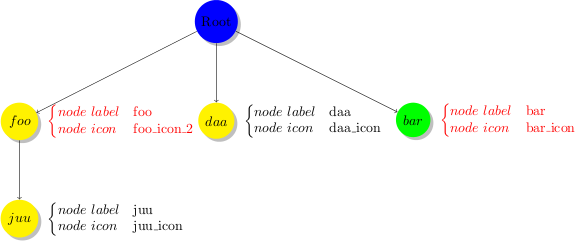
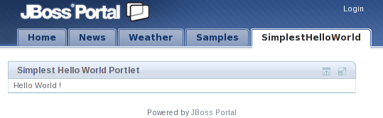
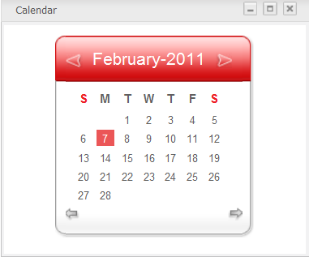
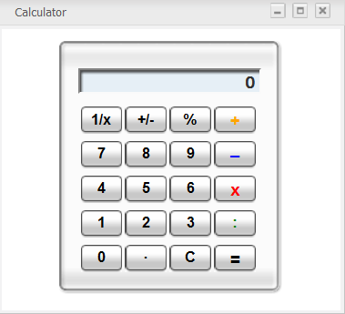
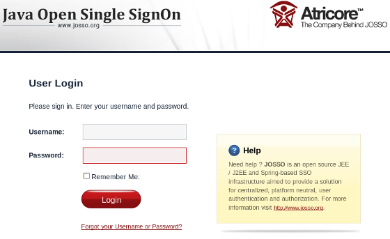

- 1. Introduction
- 2. Configuration
- 3. Portal Development
- 3.1. Skin the portal
- 3.2. Portal Lifecycle
- 3.3. Default Portal Configuration
- 3.4. Portal Default Permission Configuration
- 3.5. Portal Navigation Configuration
- 3.6. Data Import Strategy
- 3.7. Internationalization Configuration
- 3.8. RTL (Right To Left) Framework
- 3.9. XML Resources Bundles
- 3.10. JavaScript Inter Application Communication
- 3.11. Upload Component
- 3.12. Deactivation of the Ajax Loading Mask Layer
- 3.13. JavaScript Configuration
- 3.14. Navigation Controller
- 4. Portlet development
- 5. Gadget development
- 6. Authentication and Identity
- 7. Web Services for Remote Portlets (WSRP)
- 8. Advanced Development
GateIn 3.2 is the merge of two mature Java projects; JBoss Portal and eXo Portal. This new community project takes the best of both offerings and incorporates them into a single portal framework. GateIn aims at providing an intuitive user-friendly portal, and a framework to address the needs of Web 2.0 applications today.
This book provides thorough information about installation and configuration of the services provided by GateIn.
GateIn homepage: www.gatein.org
GateIn videos: vimeo.com/channels/gatein
GateIn documentation: www.jboss.org/gatein/documentation.html
GateIn downloads: www.jboss.org/gatein/downloads.html
GateIn 3.2 has two different database dependencies. One is the identity service configuration, which depends on Hibernate. The other is the Java content repository (JCR) service, which depends on JDBC API and can integrate with any existing datasource implementation.
When you change the database configuration for the first time, GateIn will automatically generate the proper schema (assuming that the database user has the appropriate permissions).
GateIn 3.2 assumes the default encoding for your database is latin1. You may need to change this parameter for your database so that GateIn 3.2 works properly.
To configure the database used by JCR, edit the file:$JBOSS_HOME/server/default/conf/gatein/configuration.properties.
For Tomcat, the file is located at $TOMCAT_HOME/gatein/conf/configuration.properties.
Next, edit the values of driver, url, username and password with the values for your JDBC connection. To learn more, refer to your database JDBC driver documentation.
gatein.jcr.datasource.driver=org.hsqldb.jdbcDriver
gatein.jcr.datasource.url=jdbc:hsqldb:file:${gatein.db.data.dir}/data/jdbcjcr_${name}
gatein.jcr.datasource.username=sa
gatein.jcr.datasource.password=
By default, the name of the database is "jdbcjcr_${name}" - ${name} should be a part of the database name, as it is dynamically replaced by the name of the portal container extension. For example, gatein-sample-portal.ear defines "sample-portal" as the container name and the default portal defines "portal" as the container name.
In case of HSQL, the databases are created automatically. For any other databases, you need to create a database named "jdbcjcr_portal" (and "jdbcjcr_sample-portal" if you have gatein-sample-portal.ear in $JBOSS_HOME/server/default/deploy). Note that some databases do not accept '-' in the database name, so you may have to remove $JBOSS_HOME/server/default/deploy/gatein-sample-portal.ear.
Make sure the user has rights to create tables on jdbcjcr_portal, and to update them as they will be automatically created during the first startup.
Also, add your database's JDBC driver into the classpath - you can put it in $JBOSS_HOME/server/default/lib (or $TOMCAT_HOME/lib, if you are running on Tomcat).
MySQL example:
Configure the JCR to store data in MySQL and assume that you created a user named "gateinuser" with a password "gateinpassword". Next, create a database mygateindb_portal (remember that portal is required), and assign the rights to create tables to the users.
Add the MySQL's JDBC driver to the classpath, and finally edit gatein.ear/02portal.war/WEB-INF/conf/jcr/jcr-configuration to contain the following:
gatein.jcr.datasource.driver=com.mysql.jdbc.Driver
gatein.jcr.datasource.url=jdbc:mysql://localhost:3306/mygateindb${container.name.suffix}
gatein.jcr.datasource.username=gateinuser
gatein.jcr.datasource.password=gateinpassword
By default, users are stored in a database. To change the database where users are stored, you need to edit the file:
$JBOSS_HOME/server/default/conf/gatein/configuration.propertiesFor Tomcat, the file is located at $TOMCAT_HOME/gatein/conf/configuration.properties
You will find the same type of configuration as in jcr-configuration.xml:
gatein.idm.datasource.driver=org.hsqldb.jdbcDriver
gatein.idm.datasource.url=jdbc:hsqldb:file:${gatein.db.data.dir}/data/jdbcidm_${name}
gatein.idm.datasource.username=sa
gatein.idm.datasource.passwordGateIn 3.2 includes an e-mail sending service that needs to be configured before it can function properly. This service, for instance, is used to send emails to users who forgot their password or username.
The e-mail service can use any SMTP account configured in $JBOSS_HOME/server/default/conf/gatein/configuration.properties (or $TOMCAT_HOME/gatein/conf/configuration.properties if you are using Tomcat).
The relevant section looks like:
# EMail gatein.email.smtp.username= gatein.email.smtp.password= gatein.email.smtp.host=smtp.gmail.com gatein.email.smtp.port=465 gatein.email.smtp.starttls.enable=true gatein.email.smtp.auth=true gatein.email.smtp.socketFactory.port=465 gatein.email.smtp.socketFactory.class=javax.net.ssl.SSLSocketFactory
It is preconfigured for GMail, so that any GMail account can easily be used (simply use the full GMail address with username and password.
In corporate environments, if you want to use your corporate SMTP gateway over SSL, like in the default configuration, configure a certificate truststore containing your SMTP server's public certificate. Depending on the key sizes, you may then also need to install Java Cryptography Extension (JCE) Unlimited Strength Jurisdiction Policy Files for your Java Runtime Environment.
- 3.1. Skin the portal
- 3.2. Portal Lifecycle
- 3.3. Default Portal Configuration
- 3.4. Portal Default Permission Configuration
- 3.5. Portal Navigation Configuration
- 3.6. Data Import Strategy
- 3.7. Internationalization Configuration
- 3.8. RTL (Right To Left) Framework
- 3.9. XML Resources Bundles
- 3.10. JavaScript Inter Application Communication
- 3.11. Upload Component
- 3.12. Deactivation of the Ajax Loading Mask Layer
- 3.13. JavaScript Configuration
- 3.14. Navigation Controller
GateIn 3.2 provides robust skinning support for the entire portal User Interface (UI). This includes support for skinning all of the common portal elements and being able to provide custom skins and window decoration for individual portlets. It is designed to common graphic resource reuse and ease of development .
The complete skinning of a page can be decomposed into three main parts:
- Portal Skin
The portal skin contains the CSS styles for the portal and its various UI components. This should include all the UI components, except for the window decorators and portlet specific styles.
- Window Styles
The CSS styles are associated with the porlet window decorators. The window decorators contain the control buttons and boarders surrounding each portlet. Individual portlets can have their own window decorator selected, or be rendered without one.
- Portlet Skins
The portlet skins affects how portlets are rendered on the page via one of the following ways:
- Portlet Specification CSS Classes
The portlet specification defines a set of CSS classes that should be available to portlets. GateIn 3.2 provides these classes as part of the portal skin. This allows each portal skin to define its own look and feel for these default values.
- Portlet Skins
GateIn 3.2 provides a means for portlet CSS files to be loaded, basing on the current portal skin. This allows a portlet to provide different CSS styles to better match the look and feel of the current portal. Portlet skins provide a much more customizable CSS experience than just using the portlet specification CSS classes.
Note
The window decorators and the default portlet specification CSS classes should be considered as separate types of skinning components, but they need to be included as part of the overall portal skin. The portal skin must include these component´s CSS classes or they will not be displayed correctly.
A portlet skin does not need to be included as part of the portal skin and can be included within the portlets web application.
There are a few means for you to select the display skin. The easiest way to change the skin is to select it through the user interface. Admininistrators can change the default skin for the portal, and users logged in can select their desired display skins.
Please see the User Guide for information on how to change the skin using the user interface.
The default skin can also be configured through the portal configuration files if you do not want to use the admin user interface. This will allow the portal to have the new default skin ready when GateIn 3.2 is initially started.
The default skin of the portal is called Default. To change this value, add a skin tag in the 02portal.war/WEB-INF/conf/portal/portal/classic/portal.xml configuration file.
To change the skin to MySkin, you would make the following changes:
<portal-config>
<portal-name>classic</portal-name>
<locale>en</locale>
<access-permissions>Everyone</access-permissions>
<edit-permission>*:/platform/administrators</edit-permission>
<skin>MySkin</skin>
...
The GateIn 3.2 skin contains CSS styles for the portal's components but also shares components that may be reused in portlets. When GateIn 3.2 generates a portal page markup, it inserts the stylesheet links in the page's head tag.
There are two main types of CSS links that will appear in the head tag: a link to the portal skin CSS file and a link to the portlet skin CSS files.
- Portal Skin
The portal skin will appear as a single link to a CSS file. This link contains contents from all the portal skin classes merged into one file. This allows the portal skin to be transfered more quickly as a single file instead of many multiple smaller files. All pages of the portal have the same skin defined in the CSS file.
- Portlet Skin
Each portlet on a page may contribute its own style. The link to the portlet skin will only appear on the page if that portlet is loaded on the current page. A page may contain many portlet skin CSS links or none.
In the code fragment below, you can see two types of links:
<head> ... <!-- The portal skin --> <link id="CoreSkin" rel="stylesheet" type="text/css" href="/eXoResources/skin/Stylesheet.css" /> <!-- The portlet skins --> <link id="web_FooterPortlet" rel="stylesheet" type="text/css" href= "/web/skin/portal/webui/component/UIFooterPortlet/DefaultStylesheet.css" /> <link id="web_NavigationPortlet" rel="stylesheet" type="text/css" href= "/web/skin/portal/webui/component/UINavigationPortlet/DefaultStylesheet.css" /> <link id="web_HomePagePortlet" rel="stylesheet" type="text/css" href= "/portal/templates/skin/webui/component/UIHomePagePortlet/DefaultStylesheet.css" /> <link id="web_BannerPortlet" rel="stylesheet" type="text/css" href= "/web/skin/portal/webui/component/UIBannerPortlet/DefaultStylesheet.css" /> ... </head>
Note
Both window styles and portlet specification CSS classes are included in the portal skin.
The skin service of GateIn 3.2 manages various types of skins. This service is reponsible for discovering and deploying the skins into the portal.
GateIn 3.2 automatically discovers web archives that contain a file descriptor for skins (WEB-INF/gatein-resources.xml). This file is reponsible for specifying the portal, portlet and window decorators to be deployed into the skin service.
The full schema can be found in the lib directory:
exo.portal.component.portal.jar/gatein_resources_1_0.xsdHere is an example where a skin (MySkin) with its CSS location is defined, and a few window decorator skins are specified:
<gatein-resources>
<portal-skin>
<skin-name>MySkin</skin-name>
<css-path>/skin/myskin.css</css-path>
<overwrite>false</overwrite>
</portal-skin>
</gatein-resources>
<!-- window style -->
<window-style>
<style-name>MyThemeCategory</style-name>
<style-theme>
<theme-name>MyThemeBlue</theme-name>
</style-theme>
<style-theme>
<theme-name>MyThemeRed</theme-name>
</style-theme>
...
Because of the Right-To-Left support, all CSS files need to be retrieved through a Servlet filter and the web application needs to be configured to activate this filter. This is already done for the 01eXoResources.war web application which contains the default skin.
Any new web applications containing skinning CSS files will need to have the following added to their web.xml :
<filter>
<filter-name>ResourceRequestFilter</filter-name>
<filter-class>org.exoplatform.portal.application.ResourceRequestFilter</filter-class>
</filter>
<filter-mapping>
<filter-name>ResourceRequestFilter</filter-name>
<url-pattern>*.css</url-pattern>
</filter-mapping>Note
The display-name element also needs to be specified in the web.xml for the skinning service to work properly with the web application.
The default skin for GateIn 3.2 is located as part of the 01eXoResource.war. The main files associated with the skin are shown below:
WEB-INF/gatein-resources.xml WEB-INF/web.xml skin/Styleshee
t.css
gatein-resources.xml: defines the skin setup to use. | |
| web.xml: contains the resource filter and has the display-name set. |
| Stylesheet.css: contains the CSS class definitions for this skin. |
- gatein-resources.xml
For the default portal skin, this file contains definitions for the portal skin, the window decorations that this skin provides and defines some Javascript resources which are not related to the skin. The default portal skin does not directly define portlet skins which should be provided by the portlets themeselves.
- web.xml
For the default portal skin, the web.xml of eXoResources.war contains a lot of information which is mostly irrelevant to the portal skinning. The areas of interest in this file is the resourcerequestfilter and the fact that the display-name is set.
- Stylesheet.css
This file contains the main stylesheet of the portal skin. The file is the main entry point to the CSS class definitions for the skin. The content of this file is shown below:
@import url(DefaultSkin/portal/webui/component/UIPortalApplicationSkin.css); @import url(De
faultSkin/webui/component/Stylesheet.css);
@import url(PortletThemes/Stylesheet.css);
@import url(Po rtlet/Stylesheet.css);
rtlet/Stylesheet.css);Skin for the main portal page.
Skins for various portal components.
Window decoration skins.
The portlet specificiation CSS classes.
Instead of defining all the CSS classes in this file, you can import other CSS stylesheet files, some of which may also import other CSS stylesheets. The CSS classes are split up between multiple files to make it easier for new skins to reuse parts of the default skin.
To reuse the CSS stylesheet from the default portal skin, you need to refer to the default skin from eXoResources. For example, to include the window decorators from the default skin within a new portal skin, you need to use this import: @import url(/eXoResources/skin/Portlet/Stylesheet.css);
Note
When the portal skin is added to the page, it merges all the CSS stylesheets into a single file.
A new portal needs to be added to the portal through the skin service. The web application which contains the skin will need to be properly configured for the skin service to discover them. This means that ResourceRequestFilter and gatein-resources.xml should be configured properly.
The gatein-resources.xml needs to specify the new portal skin. This includes specifying the name of the new skin, where to locate its CSS stylesheet file and whether to overwrite an existing portal theme with the same name.
<gatein-resources>
<portal-skin>
<skin-name>MySkin</skin-name>
<css-path>/skin/myskin.css</css-path>
<overwrite>false</overwrite>
</portal-skin>
</gatein-resources>
The default portal skin and window styles are defined in 01eXoResources.war/WEB-INF/gatein-resources.xml.
Note
The CSS for the portal skin needs to contain the CSS for all the window decorators and the portlet specification CSS classes.
When selecting a skin, it is possible to preview it. The current skin needs to know about the skin icons for all the available skins; otherwise, it will not be able to show the previews. When creating a new portal, it is recommended to include the preview icons of the other skins and to update the other skins with your new portal skin preview.
The portal skin preview icon is specified through the CSS of the portal skin. To display the preview for the current portal skin, you must specify a specific CSS class and set the icon as the background.
For the portal named MySkin, the CSS class must be defined as follows:
.UIChangeSkinForm .UIItemSelector .TemplateContainer .MySkinImageIn order for the default skin to know about the skin icon for a new portal skin, the preview screenshot needs to be placed in:
01eXoResources.war:/skin/DefaultSkin/portal/webui/component/customization/UIChangeSkinForm/backgroundThe CSS stylesheet for the default portal needs to have the following updated with the preview icon CSS class. For a skin named MySkin, you need to update the following:
01eXoResources.war:/skin/DefaultSkin/portal/webui/component/customization/UIChangeSkinForm/Stylesheet.css.UIChangeSkinForm .UIItemSelector .TemplateContainer .MySkinImage {
margin: auto;
width: 329px; height:204px;
background: url('background/MySkin.jpg') no-repeat top;
cursor: pointer ;
}Window styles are the CSS applied to the window decoration. When the administrator selects a new application to add to a page, he can decide which style of decoration would go around the window if any.
Window Styles are defined within the gatein-resources.xml file which is used by the skin service to deploy the window style into the portal. Window styles can belong in with a window style category, this category and the window styles need to be specified in the resources file.
The following gatein-resource.xml fragment adds MyThemeBlue and MyThemeRed to the MyTheme category.
<window-style>
<style-name>MyTheme</style-name>
<style-theme>
<theme-name>MyThemeBlue</theme-name>
</style-theme>
<style-theme>
<theme-name>MyThemeRed</theme-name>
</style-theme>
</window-style>The windows style configuration for the default skin is configured in: 01eXoResources.war/WEB-INF/gatein-resources.xml
01eXoResources.war/WEB-INF/gatein-resources.xmlNote
When a window style is defined in the gatein-resources.xml file, it will be available to all portlets whether the current portal skin supports the window decorator or not. When a new window decorator is added, it is recommended that you add it to all portal skins or that portal skins share a common stylesheet for window decorators.
To display the window decorators for the skin service, it must have the CSS classes with specific naming related to the window style name. The service will try and display the CSS based on this naming. The CSS class must be included as part of the current portal skin for displaying the window decorators.
The location of the window decorator CSS classes for the default portal theme is located at:
01eXoResources.war/skin/PortletThemes/Stylesheet.cssCreate the CSS file:
/*---- MyTheme ----*/
.MyTheme .WindowBarCenter .WindowPortletInfo {
margin-right: 80px; /* orientation=lt */
margin-left: 80px; /* orientation=rt */
}
.MyTheme .WindowBarCenter .ControlIcon {
float: right;/* orientation=lt */
float: left;/* orientation=rt */
width: 24px;
height: 17px;
cursor: pointer;
background-image: url('background/MyTheme.png');
}
.MyTheme .ArrowDownIcon {
background-position: center 20px;
}
.MyTheme .OverArrowDownIcon {
background-position: center 116px;
}
.MyTheme .MinimizedIcon {
background-position: center 44px;
}
.MyTheme .OverMinimizedIcon {
background-position: center 140px;
}
.MyTheme .MaximizedIcon {
background-position: center 68px;
}
.MyTheme .OverMaximizedIcon {
background-position: center 164px;
}
.MyTheme .RestoreIcon {
background-position: center 92px;
}
.MyTheme .OverRestoreIcon {
background-position: center 188px;
}
.MyTheme .NormalIcon {
background-position: center 92px;
}
.MyTheme .OverNormalIcon {
background-position: center 188px;
}
.UIPageDesktop .MyTheme .ResizeArea {
float: right;/* orientation=lt */
float: left;/* orientation=rt */
width: 18px; height: 18px;
cursor: nw-resize;
background: url('background/ResizeArea18x18.gif') no-repeat left top; /* orientation=lt */
background: url('background/ResizeArea18x18-rt.gif') no-repeat right top; /* orientation=rt */
}
.MyTheme .Information {
height: 18px; line-height: 18px;
vertical-align: middle; font-size: 10px;
padding-left: 5px;/* orientation=lt */
padding-right: 5px;/* orientation=rt */
margin-right: 18px;/* orientation=lt */
margin-left: 18px;/* orientation=rt */
}
.MyTheme .WindowBarCenter .WindowPortletIcon {
background-position: left top; /* orientation=lt */
background-position: right top; /* orientation=rt */
padding-left: 20px; /* orientation=lt */
padding-right: 20px; /* orientation=rt */
height: 16px;
line-height: 16px;
}
.MyTheme .WindowBarCenter .PortletName {
font-weight: bold;
color: #333333;
overflow: hidden;
white-space: nowrap;
width: 100%;
}
.MyTheme .WindowBarLeft {
padding-left: 12px;
background-image: url('background/MyTheme.png');
background-repeat: no-repeat;
background-position: left -148px;
}
.MyTheme .WindowBarRight {
padding-right: 11px;
background-image: url('background/MyTheme.png');
background-repeat: no-repeat;
background-position: right -119px;
}
.MyTheme .WindowBarCenter {
background-image: url('background/MyTheme.png');
background-repeat: repeat-x;
background-position: left -90px;
}
.MyTheme .WindowBarCenter .FixHeight {
height: 21px;
padding-top: 8px;
}
.MyTheme .MiddleDecoratorLeft {
padding-left: 12px;
background: url('background/MyTheme.png') repeat-y left;
}
.MyTheme .MiddleDecoratorRight {
padding-right: 11px;
background: url('background/MyTheme.png') repeat-y right;
}
.MyTheme .MiddleDecoratorCenter {
background: #ffffff;
}
.MyTheme .BottomDecoratorLeft {
MyTheme: 12px;
background-image: url('background/MyTheme.png');
background-repeat: no-repeat;
background-position: left -60px;
}
.MyTheme .BottomDecoratorRight {
padding-right: 11px;
background-image: url('background/MyTheme.png');
background-repeat: no-repeat;
background-position: right -30px;
}
.MyTheme .BottomDecoratorCenter {
background-image: url('background/MyTheme.png');
background-repeat: repeat-x;
background-position: left top;
}
.MyTheme .BottomDecoratorCenter .FixHeight {
height: 30px;
}
Portlets often require additional styles that may not be defined by the portal skin. GateIn 3.2 allows you to define additional stylesheets for each portlet and will append the corresponding link tags to the head.
The link ID will be of the form
{portletAppName}{PortletName}. For example:
ContentPortlet in 01eXoResources.war/WEB-INF/gatein-resources.xmlcontent.war01eXoResources.war/WEB-INF/gatein-resources.xml will
give
id="contentContentPortlet".
To define a new CSS file to include whenever a portlet is available on a portal page, the following fragment needs to be added to gatein-resources.xml.
<portlet-skin> <application-name>portletAppName</application-name> <portlet-name>PortletName</portlet-name> <skin-name>Default</skin-name> <css-path>/skin/DefaultStylesheet.css</css-path> </portlet-skin> <portlet-skin> <application-name>portletAppName</application-name> <portlet-name>PortletName</portlet-name> <skin-name>OtherSkin</skin-name> <css-path>/skin/OtherSkinStylesheet.css</css-path> </portlet-skin>
This will load the DefaultStylesheet.css or OtherSkinStylesheet.css when the Default skin or OtherSkin is used respectively.
Note
If the current portal skin is not defined as part of the supported skins, the portlet CSS class will not be loaded. It is recommended that you update portlet skins whenever a new portal skin is created.
Each portlet can be represented by a unique icon that you can see in the portlet registry or page editor. This icon can be changed by adding an image to the directory of the portlet webapplication:
skin/DefaultSkin/portletIcons/
icon_name.png.
To use the icon correctly, it must be named after the portlet.
For example, the icon for an account portlet named AccountPortlet would be located at:
skin/DefaultSkin/portletIcons/AccountPortlet.png
Note
You must use skin/DefaultSkin/portletIcons/ for the directory to store the portlet icon regardless of what skin is going to be used.
The portlet specification defines a set of default CSS classes that should be available for portlets. These classes are included as part of the portal skin. Please see the portlet specification for a list of the default classes that should be available.
For the default portal skin, the portlet specification CSS classes are defined in:
eXoResources.war/skin/Portlet/Stylesheet.cssBy default, CSS files are cached and their imports are merged into a single CSS file at the server side. This reduces the number of HTTP requests from the browser to the server.
The optimization code is quite simple as all the CSS files are parsed at the server startup time and all the @import and url(...) references are rewritten to support a single flat file. The result is stored in a cache directly used from the ResourceRequestFilter.
Although the optimization is useful for production environments, it may be easier to deactivate this optimization while debugging stylesheets. To do so, set the java system property exo.product.developing to true.
For example, the property can be passed as a JVM parameter with the -D option when running GateIn.
sh $JBOSS_HOME/bin/run.sh -Dexo.product.developing=true
Warning: This option may cause display bugs with certain browsers, such as Internet Explorer.
It is recommended that you have some experiences with CSS before studying GateIn 3.2 CSS.
GateIn 3.2 relies heavily on CSS to create the layout and effects for the UI. Some common techniques for customizing GateIn 3.2 CSS are explained below.
The decorator is a pattern to create a contour or a curve around an area. To achieve this effect, you need to create 9 cells. The BODY is the central area for you to decorate. The other 8 cells are distributed around the BODY cell. You can use the width, height and background image properties to achieve any desired decoration effects.

<div class="Parent">
<div class="TopLeft">
<div class="TopRight">
<div class="TopCenter"><span></span></div>
</div>
</div>
<div class="CenterLeft">
<div class="CenterRight">
<div class="CenterCenter">BODY</div>
</div>
</div>
<div class="BottomLeft">
<div class="BottomRight">
<div class="BottomCenter"><span></span></div>
</div>
<div>
</div>
Left margin left pattern is a technique to create 2 blocks side by side. The left block has a fixed size and the right block will take the rest of the available space. When the user resizes the browser, the added or removed space will be taken from the right block.

<div class="Parent"> <div style="float: left; width: 100px"> </div> <div style="margin-left: 105px;"> <div> <div style="clear: left"><span></span></div> </div>
This chapter describes the portal lifecycle from the application server start to its stop and how requests are handled.
A portal instance is simply a web application deployed as a WAR in an application server. Portlets are also part of an enhanced WAR called a portlet application.
GateIn 3.2 does not require any particular setup for your portlet in most common scenarios and the web.xml file can remain without any GateIn 3.2 specific configuration.
During deployment, GateIn 3.2 will automatically and transparently inject a servlet into the portlet application to be able to interact with it. This feature is dependent on the underlying servlet container but will work out of the box on the proposed bundles.
The servlet is the main entry point for incoming requests, it also includes some init codes when the portal is launched. This servlet (org.gatein.wci.command.CommandServlet) is automatically added during deployment and mapped to /tomcatgateinservlet.
This is equivalent to adding the following to web.xml.
Note
As the servlet is already configured, this example only aims at providing information.
<servlet> <servlet-name>TomcatGateInServlet</servlet-name> <servlet-class>org.gatein.wci.command.CommandServlet</servlet-class> <load-on-startup>0</load-on-startup> </servlet> <servlet-mapping> <servlet-name>TomcatGateInServlet</servlet-name> <url-pattern>/tomcatgateinservlet</url-pattern> </servlet-mapping>
It is possible to filter on the CommandServlet by filtering the URL pattern used by the Servlet mapping.
The example below would create a servlet filter that calculates the time of execution of a portlet request.
The filter class:
package org.example;
import java.io.IOException;
import javax.servlet.FilterChain;
import javax.servlet.FilterConfig;
import javax.servlet.ServletException;
import javax.servlet.ServletRequest;
import javax.servlet.ServletResponse;
public class MyFilter implements javax.servlet.Filter {
public void doFilter(ServletRequest request, ServletResponse response,
FilterChain chain) throws IOException, ServletException
{
long beforeTime = System.currentTimeMillis();
chain.doFilter(request, response);
long afterTime = System.currentTimeMillis();
System.out.println("Time to execute the portlet request (in ms): " + (afterTime - beforeTime));
}
public void init(FilterConfig config) throws ServletException
{
}
public void destroy()
{
}
}
The Java EE web application configuration file (web.xml) of the portlet on which we want to know the time to serve a portlet request. As mentioned above, GateIn 3.2 does not require anything special to be included, only the URL pattern to set has to be known.
<?xml version="1.0"?>
<web-app xmlns:xsi="http://www.w3.org/2001/XMLSchema-instance"
xsi:schemaLocation="http://java.sun.com/xml/ns/j2ee http://java.sun.com/xml/ns/j2ee/web-app_2_4.xsd"
version="2.5">
<filter>
<filter-name>MyFilter</filter-name>
<filter-class>org.example.MyFilter</filter-class>
</filter>
<filter-mapping>
<filter-name>MyFilter</filter-name>
<url-pattern>/tomcatgateinservlet</url-pattern>
<dispatcher>INCLUDE</dispatcher>
</filter-mapping>
</web-app>
INCLUDE dispatcher
It is important to set INCLUDE as a dispatcher as the portal always hits the CommandServlet through a request dispatcher. Without this, the filter will not be triggered, unless the direct access to a resource, such as an image.
GateIn 3.2 default homepage URL is http://{hostname}:{port}/portal/. There may be multiple independent portals deployed in parallel at any given time, each of which has its root context (i.e.: http://{hostname}:{port}/sample-portal/). Each portal is internally composed of one or more 'portals'. It is required to have at least one such portal - the default one is called 'classic'. When accessing the default homepage URL of GateIn 3.2, you are automatically redirected to the 'classic' portal. The default portal performs another important task. When starting up GateIn 3.2 for the first time, its JCR database will be empty (that's where portals keep their runtime-configurable settings). It is the default portal used to detect this, and to trigger automatic data initialization.
The following example configuration can be found at: "02portal.war:/WEB-INF/conf/portal/portal-configuration.xml".
<component>
<key>org.exoplatform.portal.config.UserPortalConfigService</key>
<type>org.exoplatform.portal.config.UserPortalConfigService</type>
<component-plugins>
<component-plugin>
<name>new.portal.config.user.listener</name>
<set-method>initListener</set-method>
<type>org.exoplatform.portal.config.NewPortalConfigListener</type>
<description>this listener init the portal configuration</description>
<init-params>
<value-param>
<name>default.portal</name>
<description>The default portal for checking db is empty or not</description>
<value>classic</value>
</value-param>
...
</init-params>
</component-plugin>
</component-plugins>
</component>
In this example, the classic portal has been set as the default.
Note
Components, component-plugins, and init-params are explained in the Foundations chapter. For now, just note how the NewPortalConfigListener component-plugin is used to add configuration to UserPortalConfigService, which is designed in this way to allow other components to add configuration to it.
In some cases, some portal definitions are defined but not used any more. If you want to delete them, you can add some configurations to portal.war/WEB-INF/conf/portal/portal-configuration.xml.
To delete a portal definition or a portal template definition, you need to define a component plug-in as the example below:
<external-component-plugins>
<target-component>org.exoplatform.portal.config.UserPortalConfigService</target-component>
<component-plugin>
<name>new.portal.config.user.listener</name>
<set-method>deleteListenerElements</set-method>
<type>org.exoplatform.portal.config.NewPortalConfigListener</type>
<description>this listener delete some predefined portal and templates configuration</description>
<init-params>
<object-param>
<name>site.templates.location</name>
<description>description</description>
<object type="org.exoplatform.portal.config.SiteConfigTemplates">
<field name="portalTemplates">
<collection type="java.util.HashSet">
<value>
<string>basic</string>
</value>
<value>
<string>classic</string>
</value>
</collection>
</field>
</object>
</object-param>
<object-param>
<name>portal.configuration</name>
<description>description</description>
<object type="org.exoplatform.portal.config.NewPortalConfig">
<field name="predefinedOwner">
<collection type="java.util.HashSet">
<value><string>classic</string></value>
</collection>
</field>
<field name="ownerType"><string>portal</string></field>
</object>
</object-param>
</init-params>
</component-plugin>
</external-component-plugins>
You can set the info bar shown by default for portlets of a portal by adding a property for the portal-config configuration in the portal.xml file.
<properties>
<entry key="showPortletInfo">1</entry>
</properties>
There are two values for "showPortletInfo": 0 and 1. If the value is 1, the info bar of portlets is shown by default. If the value is 0, it is not.
The default permission configuration for the portal is defined through org.exoplatform.portal.config.UserACL component configuration in the file 02portal.war:/WEB-INF/conf/portal/portal-configuration.xml.
It defines 8 permissions types:
- super.user
The super-user as root has all the rights on the eXo Platform.
- portal.administrator.groups
Any member of those groups are considered administrators. The default value is /platform/administrators.
- portal.administrator.mstype
Any user with that membership type would be considered administrator or the associated group with the manager by default.
- portal.creator.groups
This list defines all groups that will be able to manage the different portals. Members of this group also have the permission to create new portals. The format is membership:/group/subgroup.
- navigation.creator.membership.type
Defines the membership type of group managers. The group managers have the permission to create and edit group pages and they can modify the group navigation.
- guests.group
Any anonymous user automatically becomes a member of this group when they enter the public pages.
- mandatory.groups
Groups that cannot be deleted.
- mandatory.mstypes
Membership types that cannot be deleted.
<component>
<key>org.exoplatform.portal.config.UserACL</key>
<type>org.exoplatform.portal.config.UserACL</type>
<init-params>
<value-param>
<name>super.user</name>
<description>administrator</description>
<value>root</value>
</value-param>
<value-param>
<name>portal.creator.groups</name>
<description>groups with membership type have permission to manage portal</description>
<value>*:/platform/administrators,*:/organization/management/executive-board</value>
</value-param>
<value-param>
<name>navigation.creator.membership.type</name>
<description>specific membership type have full permission with group navigation</description>
<value>manager</value>
</value-param>
<value-param>
<name>guests.group</name>
<description>guests group</description>
<value>/platform/guests</value>
</value-param>
<value-param>
<name>access.control.workspace</name>
<description>groups with memberships that have the right to access the User Control Workspace</description>
<value>*:/platform/administrators,*:/organization/management/executive-board</value>
</value-param>
</init-params>
</component>
When creating the custom portals and portal extensions, it is possible to override the default configuration by using org.exoplatform.portal.config.PortalACLPlugin, configuring it as an external-plugin of org.exoplatform.portal.config.UserACL service:
<external-component-plugins>
<target-component>org.exoplatform.portal.config.UserACL</target-component>
<component-plugin>
<name>addPortalACLPlugin</name>
<set-method>addPortalACLPlugin</set-method>
<type>org.exoplatform.portal.config.PortalACLPlugin</type>
<description>setting some permission for portal</description>
<init-params>
<values-param>
<name>access.control.workspace.roles</name>
<value>*:/platform/administrators</value>
<value>*:/organization/management/executive-board</value>
</values-param>
<values-param>
<name>portal.creation.roles</name>
<value>*:/platform/administrators</value>
<value>*:/organization/management/executive-board</value>
</values-param>
</init-params>
</component-plugin>
</external-component-plugins>
There are three navigation types available to portal users:
These navigations are configured using the standard XML syntax in the file; "02portal.war:/WEB-INF/conf/portal/portal-configuration.xml".
<component>
<key>org.exoplatform.portal.config.UserPortalConfigService</key>
<type>org.exoplatform.portal.config.UserPortalConfigService</type>
<component-plugins>
<component-plugin>
<name>new.portal.config.user.listener</name>
<set-method>initListener</set-method>
<type>org.exoplatform.portal.config.NewPortalConfigListener
</type>
<description>this listener init the portal configuration
</description>
<init-params>
<value-param>
<name>default.portal</name>
<description>The default portal for checking db is empty or not</description>
<value>classic</value>
</value-param>
<value-param>
<name>page.templates.location</name>
<description>the path to the location that contains Page templates</description>
<value>war:/conf/portal/template/pages</value>
</value-param>
<value-param>
<name>override</name>
<description>The flag parameter to decide if portal metadata is overriden on restarting server
</description>
<value>false</value>
</value-param>
<object-param>
<name>site.templates.location</name>
<description>description</description>
<object type="org.exoplatform.portal.config.SiteConfigTemplates">
<field name="location">
<string>war:/conf/portal</string>
</field>
<field name="portalTemplates">
<collection type="java.util.HashSet">
<value><string>basic</string></value>
<value><string>classic</string></value>
</collection>
</field>
<field name="groupTemplates">
<collection type="java.util.HashSet">
<value><string>group</string></value>
</collection>
</field>
<field name="userTemplates">
<collection type="java.util.HashSet">
<value><string>user</string></value>
</collection>
</field>
</object>
</object-param>
<object-param>
<name>portal.configuration</name>
<description>description</description>
<object type="org.exoplatform.portal.config.NewPortalConfig">
<field name="predefinedOwner">
<collection type="java.util.HashSet">
<value><string>classic</string></value>
</collection>
</field>
<field name="ownerType">
<string>portal</string>
</field>
<field name="templateLocation">
<string>war:/conf/portal/</string>
</field>
<field name="importMode">
<string>conserve</string>
</field>
</object>
</object-param>
<object-param>
<name>group.configuration</name>
<description>description</description>
<object type="org.exoplatform.portal.config.NewPortalConfig">
<field name="predefinedOwner">
<collection type="java.util.HashSet">
<value><string>/platform/administrators</string></value>
<value><string>/platform/users</string></value>
<value><string>/platform/guests</string></value>
<value><string>/organization/management/executive-board</string></value>
</collection>
</field>
<field name="ownerType">
<string>group</string>
</field>
<field name="templateLocation">
<string>war:/conf/portal</string>
</field>
<field name="importMode">
<string>conserve</string>
</field>
</object>
</object-param>
<object-param>
<name>user.configuration</name>
<description>description</description>
<object type="org.exoplatform.portal.config.NewPortalConfig">
<field name="predefinedOwner">
<collection type="java.util.HashSet">
<value><string>root</string></value>
<value><string>john</string></value>
<value><string>mary</string></value>
<value><string>demo</string></value>
<value><string>user</string></value>
</collection>
</field>
<field name="ownerType">
<string>user</string>
</field>
<field name="templateLocation">
<string>war:/conf/portal</string>
</field>
<field name="importMode">
<string>conserve</string>
</field>
</object>
</object-param>
</init-params>
</component-plugin>
</component-plugins>
</component>
This XML configuration defines where in the portal's war to look for configuration, and which portals, groups, and user specific views to include in portal/group/user navigation. Those files will be used to create an initial navigation when the portal is launched in the first time. That information will then be stored in the JCR content repository, and can then be modified and managed from the portal UI.
Each portal, groups and users navigation is indicated by a configuration paragraph, for example:
<object-param>
<name>portal.configuration</name>
<description>description</description>
<object type="org.exoplatform.portal.config.NewPortalConfig">
<field name="predefinedOwner">
<collection type="java.util.HashSet">
<value><string>classic</string></value>
</collection>
</field>
<field name="ownerType">
<string>portal</string>
</field>
<field name="templateLocation">
<string>war:/conf/portal/</string>
</field>
<field name="importMode">
<string>conserve</string>
</field>
</object>
</object-param>
predefinedOwner define the navigation owner, portal will look for the configuration files in folder with this name, if there is no suiable folder, a default portal will be created with name is this value. | |
| ownerType define the type of portal navigation. It may be a portal, group or user |
| templateLocation the classpath where contains all portal configuration files |
| importMode The mode for navigation import. There are 4 types of import mode:
|
Base on these parameters, portal will look for the configuration files and create a relevant portal navigation, pages and data import strategy. The portal configuration files will be stored in folders with path look like {templateLocation}/{ownerType}/{predefinedOwner}, all navigations are defined in the navigation.xml file, pages are defined in pages.xml and portal configuration is defined in {ownerType}.xml. For example, with the above configuration, prtal will look for all configuration files from war:/conf/portal/portal/classic path.
The portal navigation incorporates the pages that can be accessed even when the user is not logged in assuming the applicable permissions allow the public access). For example, several portal navigations are used when a company owns multiple trademarks, and sets up a website for each of them.
The classic portal is configured by four XML files in the 02portal.war:/WEB-INF/conf/portal/portal/classic directory:
- portal.xml
This file describes the layout and portlets that will be shown on all pages. The layout usually contains the banner, footer, menu and breadcrumbs portlets. GateIn 3.2 is extremely configurable as every view element (even the banner and footer) is a portlet.
<portal-config
xmlns:xsi="http://www.w3.org/2001/XMLSchema-instance"
xsi:schemaLocation="http://www.gatein.org/xml/ns/gatein_objects_1_0 http://www.gatein.org/xml/ns/gatein_objects_1_0"
xmlns="http://www.gatein.org/xml/ns/gatein_objects_1_0">
<portal-name>classic</portal-name>
<locale>en</locale>
<access-permissions>Everyone</access-permissions>
<edit-permission>*:/platform/administrators</edit-permission>
<properties>
<entry key="sessionAlive">onDemand</entry>
<entry key="showPortletInfo">1</entry>
</properties>
<portal-layout>
<portlet-application>
<portlet>
<application-ref>web</application-ref>
<portlet-ref>BannerPortlet</portlet-ref>
<preferences>
<preference>
<name>template</name>
<value>par:/groovy/groovy/webui/component/UIBannerPortlet.gtmpl</value>
<read-only>false</read-only>
</preference>
</preferences>
</portlet>
<access-permissions>Everyone</access-permissions>
<show-info-bar>false</show-info-bar>
</portlet-application>
<portlet-application>
<portlet>
<application-ref>web</application-ref>
<portlet-ref>NavigationPortlet</portlet-ref>
</portlet>
<access-permissions>Everyone</access-permissions>
<show-info-bar>false</show-info-bar>
</portlet-application>
<portlet-application>
<portlet>
<application-ref>web</application-ref>
<portlet-ref>BreadcumbsPortlet</portlet-ref>
</portlet>
<access-permissions>Everyone</access-permissions>
<show-info-bar>false</show-info-bar>
</portlet-application>
<page-body> </page-body>
<portlet-application>
<portlet>
<application-ref>web</application-ref>
<portlet-ref>FooterPortlet</portlet-ref>
<preferences>
<preference>
<name>template</name>
<value>par:/groovy/groovy/webui/component/UIFooterPortlet.gtmpl</value>
<read-only>false</read-only>
</preference>
</preferences>
</portlet>
<access-permissions>Everyone</access-permissions>
<show-info-bar>false</show-info-bar>
</portlet-application>
</portal-layout>
</portal-config>
It is also possible to apply a nested container that can also contain portlets. Row, column or tab containers are then responsible for the layout of their child portlets.
Each application references a portlet using the id portal#{portalName}:/{portletWarName}/{portletName}/{uniqueId}
Use the page-body tag to define where GateIn 3.2 should render the current page.
The defined classic portal is accessible to "Everyone" (at /portal/public/classic) but only members of the group /platform/administrators can edit it.
- navigation.xml
This file defines all the navigation nodes of the portal. The syntax is simple using the nested node tags. Each node refers to a page defined in the pages.xml file (explained next).
If the administrator want to create node labels for each language, they will have to use xml:lang attribute in the label tag with value of xml:lang is the relevant locale.
Otherwise, if they want the node label is localized by resource bundle files, the #{...} syntax will be used, the enclosed property name serves as a key that is automatically passed to the internationalization mechanism. Thus the emphasis property name is replaced by a localized value taken from the associated properties file matching the current locale.
For example:
<node-navigation
xmlns:xsi="http://www.w3.org/2001/XMLSchema-instance"
xsi:schemaLocation="http://www.gatein.org/xml/ns/gatein_objects_1_2 http://www.gatein.org/xml/ns/gatein_objects_1_2"
xmlns="http://www.gatein.org/xml/ns/gatein_objects_1_2">
<priority>1</priority>
<page-nodes>
<node>
<name>home</name>
<label xml:lang="en">Home</label>
<page-reference>portal::classic::homepage</page-reference>
</node>
<node>
<name>sitemap</name>
<label xml:lang="en">SiteMap</label>
<visibility>DISPLAYED</visibility>
<page-reference>portal::classic::sitemap</page-reference>
</node>
..........
</page-nodes>
</node-navigation>
This navigation tree can have multiple views inside portlets (such as the breadcrumbs portlet) that render the current view node, the site map or the menu portlets.
- pages.xml
This configuration file structure is very similar to portal.xml and it can also contain container tags. Each application can decide whether to render the portlet border, the window state, the icons or portlet's mode.
<page-set
xmlns:xsi="http://www.w3.org/2001/XMLSchema-instance"
xsi:schemaLocation="http://www.gatein.org/xml/ns/gatein_objects_1_0 http://www.gatein.org/xml/ns/gatein_objects_1_0"
xmlns="http://www.gatein.org/xml/ns/gatein_objects_1_0">
<page>
<name>homepage</name>
<title>Home Page</title>
<access-permissions>Everyone</access-permissions>
<edit-permission>*:/platform/administrators</edit-permission>
<portlet-application>
<portlet>
<application-ref>web</application-ref>
<portlet-ref>HomePagePortlet</portlet-ref>
<preferences>
<preference>
<name>template</name>
<value>system:/templates/groovy/webui/component/UIHomePagePortlet.gtmpl</value>
<read-only>false</read-only>
</preference>
</preferences>
</portlet>
<title>Home Page portlet</title>
<access-permissions>Everyone</access-permissions>
<show-info-bar>false</show-info-bar>
<show-application-state>false</show-application-state>
<show-application-mode>false</show-application-mode>
</portlet-application>
</page>
<page>
<name>sitemap</name>
<title>Site Map</title>
<access-permissions>Everyone</access-permissions>
<edit-permission>*:/platform/administrators</edit-permission>
<portlet-application>
<portlet>
<application-ref>web</application-ref>
<portlet-ref>SiteMapPortlet</portlet-ref>
</portlet>
<title>SiteMap</title>
<access-permissions>Everyone</access-permissions>
<show-info-bar>false</show-info-bar>
</portlet-application>
</page>
.......
</page-set>
Group navigations are dynamically added to the user navigation at login. This allows users to see the menu of all pages assigned to any groups they belong to.
The group navigation menu is configured by three XML files (navigation.xml, pages.xml and portlet-preferences.xml). The syntax used in these files is the same as those covered in Section 3.5.2, “Portal Navigation”.
They are also located in the {templateLocation}/{ownerType}/{predefinedOwner} directory with ownerType is group and predefinedOwner is the path to the group. For example, portal.war/WEB-INF/conf/portal/group/platform/administrators/.
User navigation is the set of nodes and pages that are owned by the user. They are part of the user's dashboard.
Three files configure the user navigation (navigation.xml, pages.xml and portlet-preferences.xml). They are located in the {templateLocation}/{ownerType}/{predefinedOwner} directory with ownerType is user and predefinedOwner is username that want to create the navigation. For example, if administrator want to create navigation for user root, he has to locate the configuration files in portal.war/WEB-INF/conf/portal/user/root
In the Portal extension mechanism, developers can define an extension that Portal data can be customized by configurations in the extension. There are several cases which an extension developer wants to define how to customize the Portal data, for example modifying, overwriting or just inserting a bit into the data defined by the portal. Therefore, GateIn also defines several modes for each case and the only thing which a developer has to do is to clarify the usecase and reasonably configure extensions.
This section shows you how data are changes in each mode.
CONSERVE
MERGE
INSERT
OVERWRITE
Each mode indicates how the Portal data are imported. The import mode value is set whenever NewPortalConfigListener is initiated. If the mode is not set, the default value will be used in this case. The default value is configurable as a UserPortalConfigService initial param. For example, the bellow configuration means that default value is MERGE
<component>
<key>org.exoplatform.portal.config.UserPortalConfigService</key>
<type>org.exoplatform.portal.config.UserPortalConfigService</type>
<component-plugins>
............
</component-plugins>
<init-params>
<value-param>
<name>default.import.mode</name>
<value>merge</value>
</value-param>
</init-params>
</component>
The way that the import strategy works with the import mode will be clearly demonstrated in next sections for each type of data.
- CONSERVE: If the navigation exists, leave it untouched. Otherwise, import data.
- INSERT: Insert the missing description data, but add only new nodes. Other modifications remains untouched.
- MERGE: Merge the description data, add missing nodes and update same name nodes.
- OVERWRITE: Always destroy the previous data and recreate it.
In the GateIn navigation structure, each navigation can be referred to a tree which each node links to a page content. Each node contains some description data, such as label, icon, page reference, and more. Therefore, GateIn provides a way to insert or merge new data to the initiated navigation tree or a sub-tree.
The merge strategy performs the recursive comparison of child nodes between the existing persistent nodes of a navigation and the transient nodes provided by a descriptor:
- Start with the root nodes (which is the effective root node or another node if the parent URI is specified).
- Compare the set of child nodes and insert the missing nodes in the persistent nodes.
- Proceed recursively for each child having the same name.
Let's see the example with two navigation nodes in each import mode. In this case, there are 2 navigation definitions:
<node-navigation>Navigation node tree hierarchy
<page-nodes>
<node>
<name>foo</name>
<icon>foo_icon_1</icon>
<node>
<name>juu</name>
<icon>juu_icon</icon>
</node>
</node>
<node>
<name>daa</name>
<icon>daa_icon</icon>
</node>
</page-nodes>
</node-navigation>
<node-navigation>Navigation node tree hierarchy
<page-nodes>
<node>
<name>foo</name>
<icon>foo_icon_2</icon>
</node>
<node>
<name>bar</name>
<icon>bar_icon</icon>
</node>
</page-nodes>
</node-navigation>
For example, the navigation1 is loaded before navigation2. The Navigation Importer processes on two navigation definitions, depending on the Import Mode defined in portal configuration.
Case 1: Import mode is CONSERVE.
With the CONSERVE mode, data are only imported when they do not exist. So, if the navigation has been created by the navigation1 definition, the navigation2 definition does not affect anything on it. We have the result as following
Case 2: Import mode is INSERT.
If a node does not exist, the importer will add new nodes to the navigation tree. You will see the following result:
Hereafter, the node 'bar' is added to the navigation tree, because it does not exist in the initiated data. Other nodes are kept in the import process.
Case 3: Import mode is MERGE.
The MERGE mode indicates that a new node is added to the navigation tree, and updates the node data (such node label and node icon in the example) if it exists.
Case 4: Import mode is OVERWRITE.
Everything will be destroyed and replaced with new data if the OVERWRITE mode is used.
PortalConfig defines the portal name, permission, layout and some properties of a site. These information are configured in the portal.xml, group.xml or user.xml, depending on the site type. The PortalConfig importer performs a strategy that is based on the mode defined in NewPortalConfigListener, including CONSERVE, INSERT, MERGE or OVERWRITE. Let's see how the import mode affects in the process of portal data performance:
- CONSERVE: There is nothing to be imported. The existing data will be kept without any changes.
- INSERT: When the portal config does not exist, create the new portal defined by the portal config definition. Otherwise, do nothing.
- MERGE and OVERWRITE have the same behavior. The new portal config will be created if it does not exist or update portal properties defined by the portal config definition.
Note
If the Import mode is CONSERVE or INSERT, the data import strategy always performs as the MERGE mode in the first data initialization of the Portal.
Assumed Knowledge
GateIn 3.2 is fully configurable for internationalization; however, users should have a general knowledge of Internationalization in Java products before attempting these configurations.
Sun Java hosts a comprehensive guide to internationalize Java products at http://java.sun.com/docs/books/tutorial/i18n/TOC.html.
All GateIn 3.2 applications contain property files for various languages. They are packaged with the portlets applications in a WEB-INF/classes/locale/ directory.
These files are located in the classes folder of the WEB-INF directory to be loaded by the ClassLoader.
All resource files are in a subfolder named locale.
For example, the translations for the NavigationPortlet are located in web.war/WEB-INF/classes/locale/portlet/portal.
NavigationPortlet_de.properties NavigationPortlet_en.properties NavigationPortlet_es.properties NavigationPortlet_fr.properties NavigationPortlet_nl.properties NavigationPortlet_ru.properties NavigationPortlet_uk.properties NavigationPortlet_ar.xml
Those files contain typical key=value Java EE properties. For example, the French one:
javax.portlet.title=Portlet Navigation
There are also properties files in the portal itself. They form the portal resource bundle.
From a portlet, you can then access translations from the portlet itself or shared at the portal level, both are aggregated when you need them.
Translation in XML format
It is also possible to use a proprietary XML format to define translations. This is a more convenient way to translate a document for some languages, such as Japanese, Arabic or Russian. Property files have to be ASCII encoded, while the XML file can define its encoding. As a result, it is easier for you to read or edit a translation in XML instead of having to decode and encode the property file.
For more information, refer to Section 3.9, “XML Resources Bundles”.
Various languages are available in the portal package. The configuration below will define which languages shown in the "Change Language" section and made available to users.
The 02portal.war:/WEB-INF/conf/common/common-configuration.xml file of your installation contains the following section:
<component>
<key>org.exoplatform.services.resources.LocaleConfigService</key>
<type>org.exoplatform.services.resources.impl.LocaleConfigServiceImpl</type>
<init-params>
<value-param>
<name>locale.config.file</name>
<value>war:/conf/common/locales-config.xml</value>
</value-param>
</init-params>
</component>
This configuration points to the locale configuration file.
The locale configuration file (02portal.war:/WEB-INF/conf/common/locales-config.xml) contains the following code:
<?xml version="1.0" encoding="UTF-8"?>
<locales-config>
<locale-config>
<locale>en</locale>
<output-encoding>UTF-8</output-encoding>
<input-encoding>UTF-8</input-encoding>
<description>Default configuration for english locale</description>
</locale-config>
<locale-config>
<locale>fr</locale>
<output-encoding>UTF-8</output-encoding>
<input-encoding>UTF-8</input-encoding>
<description>Default configuration for the french locale</description>
</locale-config>
<locale-config>
<locale>ar</locale>
<output-encoding>UTF-8</output-encoding>
<input-encoding>UTF-8</input-encoding>
<description>Default configuration for the arabic locale</description>
<orientati on>rt</orientation>
</locale-config>
</locales-config>
on>rt</orientation>
</locale-config>
</locales-config>
locale The locale has to be defined, such as http://ftp.ics.uci.edu-pub-ietf-http-related-iso639.txt. In this example, "ar" is Arabic. | |
| output-encoding deals with the character encoding. It is recommended that UTF-8 be used. |
| input-encoding In the Java implementation, the encoding parameters will be used for the request response stream. The input-encoding parameter will be used for requesting setCharacterEncoding(..). |
| description Description for the language |
| orientation The default orientation of text and images is Left-To-Right. GateIn 3.2 supports Right-To-Left orientation. Modifying the text orientation is explained in Section 3.8, “RTL (Right To Left) Framework”. |
The resource bundle service is configured in: 02portal.war:/WEB-INF/conf/common/common-configuration.xml:
<component>
<key>org.exoplatform.services.resources.ResourceBundleService</key>
<type>org.exoplatform.services.resources.impl.SimpleResourceBundleService</type>
<init-params>
<values-param>
<name>classpath.resources</name>
<description>The resources that start with the following package name should be load from file system</description>
<value>locale.portlet</value>
</values-param>
<values-param>
<name>init.resources</name>
<description>Initiate the following resources during the first launch</description>
<value>locale.portal.expression</value>
<value>locale.portal.services</value>
<value>locale.portal.webui</value>
<value>locale.portal.custom</value>
<value>locale.navigation.portal.classic</value>
<value>locale.navigation.group.platform.administrators</value>
<value>locale.navigation.group.platform.users</value>
<value>locale.navigation.group.platform.guests</value>
<value>locale.navigation.group.organization.management.executive-board</value>
</values-param>
<values-param>
<name>portal.resource.names</name>
<description>The properties files of the portal , those file will be merged
into one ResoruceBundle properties </description>
<value>locale.portal.expression</value>
<value>locale.portal.services</value>
<value>locale.portal.webui</value>
<value>locale.portal.custom</value>
</values-param>
</init-params>
</component>
classpath.resources are discussed in the later section. | |
| init.resources initiates resources related to portal, group, user resource bundle. |
| portal.resource.names defines all resources that belong to the Portal Resource Bundle. These resources are merged into a single resource bundle which is accessible from anywhere in GateIn 3.2. All these keys are located in the same bundle, which is separated from the navigation resource bundles. |
There is a resource bundle for each navigation. A navigation can exist for user, groups, and portal.
The previous example shows bundle definitions for the navigation of the classic portal and of four different groups. Each of these resource bundles occupies a different sphere, they are independent of each other and they are not included in the portal.resource.names parameter.
The properties for a group must be in the WEB-INF/classes/locale/navigation/group/ folder. /WEB-INF/classes/locale/navigation/group/organization/management/executive-board_en.properties, for example.
The folder and file names must correspond to the group hierarchy. The group name "executive-board" is followed by the iso 639 code.
For each language defined in LocalesConfig must have a resource file defined. If the name of a group is changed the name of the folder and/or files of the correspondent navigation resource bundles must also be changed.
Content of executive-board_en.properties:
organization.title=Organization organization.newstaff=New Staff organization.management=Management
This resource bundle is only accessible for the navigation of the organization.management.executive-board group.
Portlets are independent applications and deliver their own resource files.
All shipped portlet resources are located in the locale/portlet subfolder. The ResourceBundleService parameter classpath.resources defines this subfolder.
Procedure 3.1. Example
To add a Spanish translation to the GadgetPortlet.
Create the file GadgetPortlet_es.properties in: WEB-INF/classes/locale/portlet/gadget/GadgetPortlet.
In portlet.xml, add
Spanishas a supported-locale ('es' is the 2 letters code for Spanish), the resource-bundle is already declared and is the same for all languages:<supported-locale>en</supported-locale> <supported-locale>es</supported-locale> <resource-bundle>locale.portlet.gadget.GadgetPortlet</resource-bundle>
See the portlet specification for more details about the portlet internationalization.
The portlet specifications define three standard keys: Title, Short Title and Keywords. Keywords are formatted as a comma-separated list of tags.
javax.portlet.title=Breadcrumbs Portlet javax.portlet.short-title=Breadcrumbs javax.portlet.keywords=Breadcrumbs, Breadcrumb
When translating an application, it can sometimes be difficult to find the right key for a given property.
Execute the portal in the debug mode and select the special language from the available languages,; Magic locale.
This feature translates a key to the same key value.
For example, the translated value for the key "organization.title" is simply the value "organization.title". Selecting that language allows use of the portal and its applications with all the keys visible. This makes it easier to find out the correct key for a given label in the portal page.

When choosing a language as on the screenshot above, the user is presented with a list of languages on the left side in the current chosen language and on the right side, the same language translated into its own language. Those texts are obtained from the JDK API java.util.Locale.getDisplayedLanguage() and java.util.Locale.getDisplayedCountry() (if needed) and all languages may not be translated and can also depend on the JVM currently used. It is still possible to override those values by editing the locale.portal.webui resource bundle, to do so edit the file gatein.ear/02portal.war/WEB-INF/classes/locale/portal/webui_xx_yy.properties where xx_yy represents the country code of the language in which you want to translate a particular language. In that file, add or modify a key such as Locale.xx_yy with the value being the translated string.
Example 3.1. Changing the displayed text for Traditional Chinese in French
First edit gatein.ear/02portal.war/WEB-INF/classes/locale/portal/webui_fr.properties where ne is the country code for French, and add the following key into it:
Locale.zh_TW=Chinois traditionnel
After a restart the language will be updated in the user interface when a user is trying to change the current language.
The text orientation depends on the current locale setting. The orientation is a Java 5 enum that provides a set of functionalities:
LT, // Western Europe
RT, // Middle East (Arabic, Hebrew)
TL, // Japanese, Chinese, Korean
TR; // Mongolian
public boolean isLT() { ... }
public boolean isRT() { ... }
public boolean isTL() { ... }
public boolean isTR() { ... }
The object defining the Orientation for the current request is the UIPortalApplication. However, it should be accessed at runtime using the RequestContext that delegates to the UIPortalApplication.
In case of PortalRequestContext, it directly delegates as the PortalRequestContext has a reference to the current UIPortalApplication.
In case of a different context, such as the PortletRequestContext, it delegates to the parent context given the fact that the root RequestContext is always a PortalRequestContext.
Orientation is defined by implicit variables in the Groovy binding context:
- Orientation
The current orientation as an Orientation
- isLT
The value of orientation.isLT()
- isRT
The value of orientation.isRT()
- dir
The string 'ltr' if the orientation is LT or the string 'rtl' if the orientation is RT.
The skin service handles stylesheet rewriting to accommodate the orientation. It works by appending -lt or -rt to the stylesheet name.
For instance: /web/skin/portal/webui/component/UIFooterPortlet/DefaultStylesheet-rt.css will return the same stylesheet as /web/skin/portal/webui/component/UIFooterPortlet/DefaultStylesheet.css but processed for the RT orientation. The -lt suffix is optional.
Stylesheet authors can annotate their stylesheet to create content that depends on the orientation.
Example 3.2.
In the example, we need to use the orientation to modify the float attribute that will make the horizontal tabs either float on left or on right:
float: left; /* orientation=lt */ float: right; /* orientation=rt */ font-weight: bold; text-align: center; white-space: nowrap;
The LT produced output will be:
float: left; /* orientation=lt */ font-weight: bold; text-align: center; white-space: nowrap;
The RT produced output will be:
float: right; /* orientation=rt */ font-weight: bold; text-align: center; white-space: nowrap;
Example 3.3.
In this example, you need to modify the padding according to the orientation:
color: white; line-height: 24px; padding: 0px 5px 0px 0px; /* orientation=lt */ padding: 0px 0px 0px 5px; /* >orientation=rt */
The LT produced output will be:
color: white; line-height: 24px; padding: 0px 5px 0px 0px; /* orientation=lt */
The RT produced output will be:
color: white; line-height: 24px; padding: 0px 0px 0px 5px; /* orientation=rt */
Sometimes, it is necessary to create the RT version of an image that will be used from a template or from a stylesheet. However, symmetric images can be automatically generated avoiding the necessity to create a mirrored version of an image and furthermore avoiding maintenance cost.
The web resource filter uses the same naming pattern as the skin service. When an image ends with the -rt suffix, the portal will attempt to locate the original image and create a mirror of it.
For instance: requesting the image /GateInResources/skin/DefaultSkin/webui/component/UITabSystem/UITabs/background/NormalTabStyle-rt.gif returns a mirror of the image /GateInResources/skin/DefaultSkin/webui/component/UITabSystem/UITabs/background/NormalTabStyle.gif.
Note
It is important to consider whether the image to be mirrored is symmetrical as this will impact its final appearance.
Here is an example combining stylesheet and images:
line-height: 24px;
background: url('background/NavigationTab.gif') no-repeat right top; /* orientation=lt */
background: url('background/NavigationTab-rt.gif') no-repeat left top; /* orientation=rt */
padding-right: 2px; /* orientation=lt */
padding-left: 2px; /* orientation=rt */
Resource bundles are usually stored in property files. However, as property files are plain files, issues with the encoding of the file may arise. The XML resource bundle format has been developed to provide an alternative to property files.
The XML format declares the encoding of the file. This avoids use of the native2ascii program which can interfere with encoding.
Property files generally use the ISO 8859-1 character encoding which does not cover the full unicode charset. As a result, languages, such as Arabic, would not be natively supported.
Tooling for XML files is better supported than the tooling for Java property files; thus, the XML editor copes well with the file encoding.
The XML format is very simple and has been developed based on the DRY (Don't Repeat Yourself) principle. The resource bundle keys are hierarchically defined and we can leverage the hierarchic nature of the XML for that purpose. Here is an example of turning a property file into an XML resource bundle file:
UIAccountForm.tab.label.AccountInputSet = ... UIAccountForm.tab.label.UIUserProfileInputSet = ... UIAccountForm.label.Profile = ... UIAccountForm.label.HomeInfo= ... UIAccountForm.label.BusinessInfo= ... UIAccountForm.label.password= ... UIAccountForm.label.Confirmpassword= ... UIAccountForm.label.email= ... UIAccountForm.action.Reset= ...
<?xml version="1.0" encoding="UTF-8"?>
<bundle>
<UIAccountForm>
<tab>
<label>
<AccountInputSet>...</AccountInputSet>
<UIUserProfileInputSet>...</UIUserProfileInputSet>
</label>
</tab>
<label>
<Profile>...</Profile>
<HomeInfo>...</HomeInfo>
<BusinessInfo>...</BusinessInfo>
<password>...</password>
<Confirmpassword>...</Confirmpassword>
<email>...</email>
</label>
<action>
<Reset>...</Reset>
</action>
</UIAccountForm>
</bundle>
To be loaded by the portal at runtime (actually the resource bundle service), the name of the file must be the same as a property file and it must use the .xml suffix.
For example, for the Account Portlet to be displayed in Arabic, the resource bundle would be AccountPortlet_ar.xml rather than AccountPortlet_ar.properties.
JavaScript Inter Application Communication is designed to allow applications within a page to exchange data. This library is made for broadcasting messages on topic.
It is based on 3 functions:
Subscribe.
Publish.
Unsubscribe.
A subscription to a topic will receive any subtopic messages. For example, the application subscribed to "/eXo/application" will receive messages sent on the "/eXo/application/map" topic. A message sent on "/eXo" would not be received.
The Inter Application Communication library is found in 01eXoResources.war:/javascript/eXo/core/Topic.js
/**
* publish is used to publish an event to the other subscribers to the given channels
* @param {Object} senderId is a string that identify the sender
* @param {String} topic is the topic that the message will be published
* @param {Object} message is the message that's going to be delivered to the subscribers to the topic
*/
Topic.prototype.publish = function(/*Object*/ senderId, /*String*/ topicName, /*Object*/ message ) { ... }
/**
* isSubscribed is used to check if a function receive the events from a topic
* @param {String} topic The topic.
* @param {Function} func is the name of the function of obj to call when a message is received on the topic
*/
Topic.prototype.isSubscribed = function(/*String*/ topic, /*Function*/ func) { ... }
/**
* subscribe is used to subscribe a callback to a topic
* @param {String} topic is the topic that will be listened
* @param {Function} func is the name of the function of obj to call when a message is received on the topic
*
* func is a function that take a Object in parameter. the event received have this format:
* {senderId:senderId, message:message, topic: topic}
*
*/
Topic.prototype.subscribe = function(/*String*/ topic, /*Function*/ func) { ... }
/**
* unsubscribe is used to unsubscribe a callback to a topic
* @param {String} topic is the topic
* @param {Object} id is the id of the listener we want to unsubscribe
*/
Topic.prototype.unsubscribe = function(/*String*/ topic, /*Object*/ id) { ... }
Topic.prototype.initCometdBridge = function() { ... }
The three messaging functions require particular objects and definitions in their syntax:
- Subscribe
The subscribe function is used to subscribe a callback to a topic. It uses the following parameters:
- topic
The topic that will be listened for.
- func
The name of the object function to call when a message is received on the topic. It has to be a function that takes an Object parameter. The event received will have this format:
{ senderId:senderId, message:message, topic: topic }
- Publish
The publish function is used to publish an event to the other subscribered applications through the given channels. Its parameters are:
- senderId
This is a string that identifies the sender.
- topicName
The topic that the message will be published.
- message
This is the message body to be delivered to the subscribers to the topic.
- Unsubscribe
The unsubscribe function is used to unsubscribe a callback to a topic. The required parameters are:
- topic
The topic from which will be unsubscribed.
- id
This is the context object.
<%@ taglib uri="http://java.sun.com/portlet" prefix="portlet" %>
<portlet:defineObjects/>
<div>
<p>
Received messages:
<div id="received_<portlet:namespace/>">
</div>
</p>
<p>
Send message:
<input type="text" id="msg_<portlet:namespace/>"/> <a href="#" onclick="send_<portlet:namespace/>();">send</a>
</p>
</div>
<script type="text/javascript">
Function.prototype.bind = function(object) {
var method = this;
return function() {
method.apply(object, arguments);
}
}
function send_<portlet:namespace/>() {
var msg = document.getElementById("msg_<portlet:namespace/>").value;
eXo.core.Topic.publish("<portlet:namespace/>", "/demo", msg);
}
function Listener_<portlet:namespace/>(){
}
Listener_<portlet:namespace/>.prototype.receiveMsg = function(event) {
document.getElementById("received_<portlet:namespace/>").innerHTML =
document.getElementById("received_<portlet:namespace/>").innerHTML + "<br />* " +
event.senderId + ": " + event.message;
}
function init_<portlet:namespace/>() {
var listener_<portlet:namespace/> = new Listener_<portlet:namespace/>();
eXo.core.Topic.subscribe("/demo", listener_<portlet:namespace/>.receiveMsg.bind(listener_<portlet:namespace/>));
}
init_<portlet:namespace/>();
</script>
The service is defined by the class: org.exoplatform.upload.UploadService;
This can be configured with the following xml code:
<component>
<type>org.exoplatform.upload.UploadService</type>
<init-params>
<value-param>
<name>upload.limit.size</name>
<description>Maximum size of the file to upload in MB</description>
<value>10</value>
</value-param>
</init-params>
</component>
This code allows for a default upload size limit for the service to be configured. The value unit is in MegaBytes.
This limit will be used by default by all applications if no application-specific limit is set. Setting a different limit for applications is discussed in a later section.
If the value is set to 0, the upload size is unlimited.
Procedure 3.2. How to use the upload component
Create an object type org.exoplatform.webui.form.UIFormUploadInput.
Two constructors are available for this:
public UIFormUploadInput(String name, String bindingExpression)
or:
public UIFormUploadInput(String name, String bindingExpression, int limit)
This is an example using the second form:
PortletRequestContext pcontext = (PortletRequestContext)WebuiRequestContext.getCurrentInstance(); PortletPreferences portletPref = pcontext.getRequest().getPreferences(); int limitMB = Integer.parseInt(portletPref.getValue("uploadFileSizeLimitMB", "").trim()); UIFormUploadInput uiInput = new UIFormUploadInput("upload", "upload", limitMB);To obtain the limit from the xml configuration, this piece of code can be added to the either portlet.xml or portlet-preferences.xml:
<preference> <name>uploadFileSizeLimitMB</name> <value>30</value> <read-only>false</read-only> </preference>
Again, the
0value means an unlimited upload size, and the value unit is set in MegaBytes.Use the getUploadDataAsStream() method to get the uploaded data:
UIFormUploadInput input = (UIFormUploadInput)uiForm.getUIInput("upload"); InputStream inputStream = input.getUploadDataAsStream(); ... jcrData.setValue(inputStream);The upload service stores a temporary file on the file system during the upload process. When the upload is finished, the service must be cleaned to:
Delete the temporary file.
Delete the classes used for the upload.
Use theremoveUpload() method defined in the upload service to purge the file:
UploadService uploadService = uiForm.getApplicationComponent(UploadService.class) ; UIFormUploadInput uiChild = uiForm.getChild(UIFormUploadInput.class) ; uploadService.removeUpload(uiChild.getUploadId()) ;
Saving the uploaded file
Ensure the file is saved before the service is cleaned.
The loading mask layer is deployed after an ajax-call. It aims at blocking the GUI to prevent further user actions until the the ajax-request has been completed.
However, the mask layer may need to be deactivated in instances where the portal requires user instructions before the previous instructions have been carried out.
Procedure 3.3. How to deactivate the ajax-loading mask
Generate a script to make an asynchronous ajax-call. Use the uicomponent.doAsync() method rather than the uicomponent.event() method.
For example:
<a href="<%=uicomponent.doAsync(action, beanId, params)%>" alt="">Asynchronous</a>
The doAsync() method automatically adds the following new parameter to the parameters list; asyncparam = new Parameter(AJAX ASYNC,"true"); (AJAX ASYNC == "ajax async")
This request is asynchronous and the ajax-loading mask will not deployed.
Note
An asynchronous request can still be made using the uicomponent.event(). When using this method, the asyncparam must be added manually.
The GUI will be blocked to ensure that the user can only request one action at one time and while the request seems to be synchronous, all ajax requests are always asynchronous. For further information, refer to Section 3.12.2, “Synchronous issue”.
Most web browsers support ajax requests in two modes: Synchronous and Asynchronous. This mode is specified with a boolean bAsync parameter.
var bAsync = false; // Synchronous request.open(instance.method, instance.url, bAsync);
However, to work with browsers that do not support the Synchronous requests, bAsync is always set to true (Ajax request will always be asynchronous).
// Asynchronous request request.open(instance.method, instance.url, true);
Managing JavaScript in an application like GateIn 3.2 is a critical part of the configuration work. Configuring the scripts correctly will result in the faster response time from the portal.
Every portlet can have its own JavaScript code but in many cases, it is more convenient to reuse some existing shared libraries. For that reason, GateIn 3.2 has a mechanism to easily register the libraries that will be loaded when every page is rendered.
To do so, every WAR deployed in GateIn 3.2 can register the .js files with the gatein-resources.xml configuration file.
The example code snippet below is found in the gatein-resources.xml in the eXoResources.war file.
<javascript>
<param>
<js-module>eXo</js-module>
<js-path>/javascript/eXo.js</js-path>
<js-priority>0</js-priority>
</param>
</javascript>
<!-- CORE Javascripts -->
<javascript>
<param>
<js-module>eXo.core.Utils</js-module>
<js-path>/javascript/eXo/core/Util.js</js-path>
<js-priority>1</js-priority>
</param>
<param>
<js-module>eXo.core.DOMUtil</js-module>
<js-path>/javascript/eXo/core/DOMUtil.js</js-path>
<js-priority>1</js-priority>
</param>
<param>
<js-module>eXo.core.Browser</js-module>
<js-path>/javascript/eXo/core/Browser.js</js-path>
<js-priority>2</js-priority>
</param>
<param>
<js-module>eXo.core.MouseEventManager</js-module>
<js-path>/javascript/eXo/core/MouseEventManager.js</js-path>
</param>
<param>
<js-module>eXo.core.UIMaskLayer</js-module>
<js-path>/javascript/eXo/core/UIMaskLayer.js</js-path>
</param>
<param>
<js-module>eXo.core.Skin</js-module>
<js-path>/javascript/eXo/core/Skin.js</js-path>
</param>
<param>
<js-module>eXo.core.DragDrop</js-module>
<js-path>/javascript/eXo/core/DragDrop.js</js-path>
</param>
<param>
<js-module>eXo.core.DragDrop2</js-module>
<js-path>/javascript/eXo/core/DragDrop2.js</js-path>
</param>
</javascript>
Note that registered JavaScript files will be merged into a single merged.js file when the server loads. This reduces the number of HTTP calls as shown in the homepage source code:
<script type="text/javascript" src="/portal/javascript/merged.js"></script>
Although this optimization is useful for a production environment, it may be easier to deactivate this optimization while debugging JavaScript problems.
To do this, set the Java system property exo.product.developing to true. GateIn provides two startup scripts that define this property in gatein-dev.sh (for Linux, Mac) and gatein-dev.bat (for Windows).
To generate the merged.js file, set this property to false. If the property is not set, the default value is false.
The property can be passed as a JVM parameter with the -D option in your GateIn.sh or GateIn.bat startup script.
Every JavaScript file is associated with a module name which acts as a namespace.
Inside the associated JavaScript files, the eXo JavaScript objects are exposed as global variables named after the module.
For example:
eXo.core.DragDrop = new DragDrop();
It is also possible to use the eXo.require()method to lazy load and evaluate some JavaScript codes. This is quite useful for the portlet or gadget applications that will use this JavaScript only once. Otherwise, if the library is reusable in several places, it is better to define it in the gatein-resources.xml file.
The navigation controller is a major enhancement of GateIn that has several goals:
Provide non-ambiguous URLs for resources managed by the portal, such as navigation. Previously, different resources were possible for a single URL, even worse, the set of resources available for an URL depends on private navigations (groups and dashboard).
Decouple the HTTP request from the portal request. Previously, both were tightly coupled, for instance, the URL for a site had to begin with /public/{sitename} or /private/{sitename} .The navigation controller provides a flexible and configurable mapping.
Provide a more friendly URL and let portal administrator configure how the HTTP request should look like.
The WebAppController is the component of GateIn that processes HTTP invocations and transforms them into a portal request. It has been improved with the addition of a request mapping engine (controller) whose role is to make the HTTP request decouple and create a portal request. The mapping engine makes two essential tasks:
Create a Map<QualifiedName, String> from an incoming HTTP request.
Render a Map<QualifiedName, String> as an HTTP URL.
The goal of the controller (mapping engine) is to decouple the request processed by GateIn from the incoming HTTP request. Indeed, a request contain data that determine how the request will be processed and such data can be encoded in various places in the request, such as the request path, or a query parameter. The controller allows GateIn to route a request according to a set of parameters (a map) instead of the servlet request.
The controller configuration is declarative in an .xml file, allowing easy reconfiguration of the routing table and it is processed into an internal data structure that is used to perform resolution (routing or rendering).
The controller configuration that contains the routing rules is loaded from the controller.xml file that is retrieved in the GateIn configuration directory. Its location is determined by the gatein.controller.config property.
WebAppController loads and initializes the mapping engine.
<!-- conf/portal/controller-configuration.xml of portal.war -->
<component>
<type>org.exoplatform.web.WebAppController</type>
<init-params>
<value-param>
<name>controller.config</name>
<value>${gatein.portal.controller.config}</value>
</value-param>
</init-params>
</component>
GateIn's extension project can define their own routing table, thanks to the extension mechanism.
The controller.xml file can be changed and reloaded at runtime. This helps the test of different configurations easily (configuration loading operations) and provides more insight into the routing engine (the findRoutes operation). See Rebuiding controller below for more details.
ReBuilding controller
The WebAppController is annotated with @Managed annotations and is bound under the view=portal,service=controller JMX name and under the "portalcontroller" REST name.
It provides the following attributes and operations:
Attribute configurationPath: the "read-only" configuration path of the controller.xml file.
Operation loadConfiguration: load a new configuration file from a specified XML path.
Operation reloadConfiguration: reload the configuration file.
Operation findRoutes: route the request argument through the controller and returns a list of all parameter map resolutions. The argument is a request URI, such as /groups/:platform:administrators/administration/registry. It returns a string representation (
List<Map>) of the matched routes.
Most of the controller configuration cares about defining rules (Routing table - contains routes object) that will drive the resolution. Routes are processed during the controller initialization to give a tree of node.
Each node is related to its parent with a matching rule that can either be an exact string matching or a regular expression matching.
Each node is associated with a set of parameters.
A parameter is defined by a qualified name and there are three kinds of parameters explained in the sections below.
Route parameters defines a fixed value associate with a qualified name.
Routing: route parameters allow the controller to distinguish branches easily and route the request accordingly.
Rendering: the system will select a route to render an URL if all route parameters are always matched.
Example:
<route path="/foo">
<route-param qname="gtn:handler">
<value>portal</value>
</route-param>
</route>
This configuration matches the request path "/foo" to the map (gtn:handler=portal). Conversely, it renders the (gtn:handler=portal) map as the "/foo" URL. This example shows two concepts:
exact path matching ("/foo")
route parameters ("gtn:handler")
Path parameters allow to associate a portion of the request path with a parameter. Such parameter will match any non empty portions of text except the / character (that is the [^/]+ regular expression) otherwise they can be associated with a regular expression for matching specific patterns. Path parameters are mandatory for matching since they are a part of the request path, however it is allowed to write regular expression matching an empty value.
Routing: route is accepted if the regular expression is matched.
Rendering: the system will select a route to render an URL if all route parameters are always matched.
Encoding
Path parameters may contain the '/' character which is a reserved char for the URI path. This case is specially handled by the navigation controller by using a special character to replace the '/' literals. By default, the character is the colon ":" and can be changed to other possible values (see controller XML schema for possible values) to give a greater amount of flexibility.
This encoding is applied only when the encoding is performed for parameters having a mode set to the default-form value, for instance, it does not happen for navigation node URI (for which / are encoded literally). The separator escape char can still be used but under it is percent escaped form, so by default, a path parameter value containing the colon ":" would be encoded as %3A and conversely the %3A value will be decoded as the colon ":".
Example: No pattern is define, the default one [^/]+ will be used:
<route path="/{gtn:path}">
</route>
As a result of the example above, routing and rendering is as below:
Routing and Rendering Path "/foo" <--> the map (gtn:path=foo) Path "/foo:bar" <--> the map (gtn:path=foo/bar)
If the request path contains another "/" char, it will not work. The default encoding mode is default-form. In the example above, "/foo/bar" is not matched, so the system returns an empty parameter map.
However, this problem could be solved with the following configuration:
<route path="/{gtn:path}">
<path-param encoding="preserve-path" qname="gtn:path">
<pattern>.*</pattern>
</path-param>
</route>
The ".*" declaration allows matching any char sequence.
The "preserve-path" encoding tells the engine that the "/" chars should be handled by the path parameter itself as they have a special meaning for the router. Without this special encoding, "/" would be rendered as the ":" character and conversely the ":" character would be matched as the "/" character.
Request parameters are matched from the request parameters (GET or POST). The match can be optional as their representation in the request allows it.
Routing:
Route is accepted when a required parameter is present and matched in the request.
Route is accepted when an optional parameter is absent or matched in the request.
Rendering:
For required parameters, the system will select a route to render an URL when the parameter is present and matched in the map.
For optional parameters, the system will select a route to render an URL when the parameter is absent or matched in the map.
Example:
<route path="/"> <request-param name="path" qname="gtn:path"/> </route>
Request parameters are declared by a request-param element and will match any value by default. A request like "/?path=foo" is mapped to the (gtn:path=foo) map. The name attribute of the request-param tag defines the request parameter value. This element accepts more configuration:
A
valueor apatternelement that is a child element used to match a constant or a pattern.A
control-modeattribute with theoptionalorrequiredvalue indicates if matching is mandatory or not.A
value-mappingattribute with the possible values, such ascanonical,never-empty,never-nullcan be used to filter values after matching is done. For instance, a parameter configured withvalue-mapping="never-empty"and matched with the empty string value will not put the empty string in the map.
The order of route declaration is important as it affects on how rules are matched. Sometimes, the same request could be matched by several routes and the routing table is ambiguous.
<route path="/foo">
<route-param qname="gtn:handler">
<value>portal</value>
</route-param>
</route>
<route path="/{gtn:path}">
<path-param encoding="preserve-path" qname="gtn:path">
<pattern>.*</pattern>
</path-param>
</route>
In that case, the request path "/foo" will always be matched by the first rule before the second rule. This can be misleading since the map (gtn:path=foo) would be rendered as "/foo" as well and would not be matched by the first rule. Such ambiguit can happen, it can be desirable or not.
Route nesting is possible and often desirable as it helps to:
Factor common parameters in a common rule.
Perform more efficient matching as the match of the common rule is done once for all the sub routes.
<route path="/foo">
<route-param qname="gtn:handler">
<value>portal</value>
</route-param>
<route path="/bar">
<route-param qname="gtn:path">
<value>bar</value>
</route-param>
</route>
<route path="/juu">
<route-param qname="gtn:path">
<value>juu</value>
</route-param>
</route>
</route>
The request path "/foo/bar" is mapped to the (gtn:handler=portal,gtn:path=bar) map.
The request path "/foo/juu" is mapped to the (gtn:handler=portal,gtn:path=juu) map.
The request path "/foo" is not mapped as non leaf routes do not perform matches.
GateIn defines a set of parameters in its routing table, for each client request, the mapping engine processes the request path and return the defined parameters with their values as a Map<QualifiedName, String>
gtn:handler
The gtn:handler names is one of the most important qualified name as it determines which handler will take care of the request processing just after the controller has determined the parameter map. The handler value is used to make a lookup in the handler map of the controller. An handler is a class that extends the WebRequestHandler class and implements the execute(ControllerContext) method. Several handlers are available by default:
portal: process aggregated portal requests.
upload/download: process file upload and download.
standalone: process standalone portal requests.
legacy: handle legacy URL redirection (see Section 3.14.4.4, “Legacy handler”).
default: HTTP redirection to the default portal of the container.
staticResource: serve static resources like image, CSS or JavaScript and more in portal.war (see Section 3.14.4.5, “Static resource handler”).
gtn:sitetype / gtn:sitename / gtn:path
Those qualified names drives a request for the portal handler. They are used to determine which site to show and which path to resolve against a navigation. For instance, the (gtn:sitetype=portal,gtn:sitename=classic,gtn:path=home) instruct the portal handler to show the home page of the classic portal site.
gtn:lang
This parameter shows which language used in the URL for the portal handler. This is a new feature offered, now language can be specified on URL. It means that users can bookmark that URL (with the information about language) or he can changed the language simply by modifying the URL address.
gtn:componentid / gtn:action / gtn:objectid
The webui parameters used by the portal handler for managing webui component URLs for portal applications (but not for portlet applications).
The controller is designed to render a Map<QualifiedName, String> as an HTTP URL according to its routing table, but to integrate it for easy usage in WebUI Framework of GateIn, you need some more components:
PortalURL plays a similar role at the portal level. Its main role is to abstract the creation of an URL for a resource managed by the portal.
public abstract class PortalURL<R, U extends PortalURL<U>>
{
...
}
The PortalURL declaration may seem a bit strange at first sight with two generic types: U and R.
The
Rgeneric type represents the type of the resource managed by the portal.The
Ugeneric type is also described as self bound generic type. This design pattern allows a class to return subtypes of itself in the class declaring the generic type. Java Enums are based on this principle (class Enum<E extends Enum<E>>).
A portal URL has various methods but certainly the most important method is the toString() method that generates an URL targeting to the resource. The remaining methods are getter and setter used to mutate the URL configuration, those options will affect the URL representation when it is generated.
resource: the mandatory resource associated with the URL.
locale: the optional locale used in the URL allowing the creation of bookmarkable URL containing a language.
confirm: the optional confirmation message displayed by the portal in the context of the portal UI.
ajax: the ajax option allowing an ajax invocation of the URL.
Obtaining a PortalURL
PortalURL objects are obtained from RequestContext instance, such as the PortalRequestContext, or the PortletRequestContext. Usually, those are obtained thanks to the getCurrentInstance method of the RequestContext class:
RequestContext ctx = RequestContext.getCurrentInstance();
PortalURL are created via to the createURL method that takes an input as a resource type. The resource type is usually a constant and type-safe object that allows to retrieve the PortalURL subclasses:
RequestContext ctx = RequestContext.getCurrentInstance(); PortalURL<R, U> url = ctx.createURL(type);
In reality, you will use a concrete type constant and have instead more concrete code like:
RequestContext ctx = RequestContext.getCurrentInstance(); NodeURL url = ctx.createURL(NodeURL.TYPE);
Note
The NodeURL.TYPE is actually declared as new ResourceType<NavigationResource, NodeURL>() that can be described as a type-literal object emulated by a Java anonymous inner class. Such literal was introduced by Neil Gafter as Super Type Token and popularized by Google Guice as Type Literal. It is an interesting way to create a literal representing a kind of Java type.
The NodeURL class is one of the subclass of PortalURL that is specialized in navigation node resources:
public class NodeURL extends PortalURL<NavigationResource, NodeURL>
{
...
}
The NodeURL class does not carry any generic types of its super class, which means that a NodeURL is type-safe and you do not have to worry about generic types.
Using a NodeURL is pretty straightforward:
NodeURL url = RequestContext.getCurrentInstance().createURL(NodeURL.TYPE);
url.setResource(new NavigationResource("portal", "classic, "home"));
String s = url.toString();
The NodeURL subclass contains the specialized setter methods to make its usage even easier:
UserNode node = ...; NodeURL url = RequestContext.getCurrentInstance().createURL(NodeURL.TYPE); url.setNode(node); String s = url.toString();
The ComponentURL subclass is another specialization of PortalURL that allows the creation of WebUI components URLs. ComponentURL is commonly used to trigger WebUI events from client side:
<% def componentURL = uicomponent.event(...); /*or uicomponent.url(...) */ %> <a href=$componentURL>Click me</a>
Normally, you should not have to deal with it as the WebUI framework has already an abstraction for managing URL known as URLBuilder. The URLBuilder implementation delegates URL creation to ComponentURL objects.
Portlet URLs API implementation delegates to the portal ComponentURL (via the portlet container SPI). It is possible to control the language in the URL from a PortletURL object by setting the gtn:lang property:
When the property value is set to a value returned by the
Locale#toString()method for locale objects having a non null language value and a null variant value, the URL generated by thePortletURL#toString()method will contain the locale in the URL.When the property value is set to an empty string, the generated URL will not contain a language. If the incoming URL was carrying a language, this language will be erased.
When the property value is not set, it will not affect the generated URL.
PortletURL url = resp.createRenderURL();
url.setProperty("gtn:lang", "fr");
writer.print("<a href='" + url + "'>French</a>");
This internal API used to create URL works as usual and delegates to the PortletURL API when the framework is executed in a portlet, and delegates to a ComponentURL API when the framework is executed in the portal context. The API has been modified to take in account the language in URL with two properties on the builder:
locale: a locale for setting on the URL.
removeLocale: a boolean for removing the locale present on the URL.
In a Groovy template, the mechanism to create an URL is the same as the way of APIs above, however a splash of integration has been done to make creation of NodeURL simpler. A closure is bound under the nodeurl name and is available for invocation anytime. It will simply create a NodeURL object and return it:
UserNode node = ...; NodeURL url = nodeurl(); url.setNode(node); String s = url.toString();
The nodeurl closure is bound to Groovy template in WebuiBindingContext.
// Closure nodeurl()
put("nodeurl", new Closure(this)
{
@Override
public Object call(Object[] args)
{
return context.createURL(NodeURL.TYPE);
}
});
The navication controller implies a migration of the client code that is coupled to several internal APIs of GateIn. The major impact is related to anything dealing with URL:
Creation of an URL representing a resource managed by the portal: navigation node or UI component.
Using HTTP request related information.
Using free form node
The previous code for creating navigation node was like:
String uri = Util.getPortalRequestContext().getPortalURI() + "home";
The new code will look like:
PortalURL nodeURL = nodeurl(); NavigationResource resource = new NavigationResource(SiteType.PORTAL, pcontext.getPortalOwner(), "home"); String uri = nodeURL.setResource(resource).toString();
Using UserNode object
The previous code for creating navigation node was like:
UserNode node = ...; String uri = Util.getPortalRequestContext().getPortalURI() + node.getURI()";
The new code will look like
UserNode node = ...; PortalURL nodeURL = nodeurl(); String uri = nodeURL.setNode(node).toString();
Security configuration needs to be changed to keep the flexibility added by the navigation controller. In particular, the authentication does not depend anymore on path specified in web.xml but relies on the security mandated by the underlying resource instead. Here are the noticeable changes for security:
Authentication is now triggered on the "
/login" URL when it does not have a username or a password specified. Therefore, the URL/login?initialURI=/classic/homeis (more or less) equivalent to/private/classic/home.When a resource cannot be viewed due to security constraint.
If the user is not logged, the authentication will be triggered.
Otherwise, a special page (the usual one) will be displayed instead.
Redirection to the default portal used to be done by the index.jsp JSP page. This is not the case anymore, the index.jsp file has been removed and the welcome file in web.xml was removed, too. Instead a specific handler in the routing table has been configured, the sole role of this handler is to redirect the request to the default portal when no other request has been matched previously:
<controller>
...
<route path="/">
<route-param qname="gtn:handler">
<value>default</value>
</route-param>
</route>
</controller>
Legacy URLs such as /public/... and /private/... are now emulated to determine the best resource with the same resolution algorithm, but instead of displaying the page, it will make an HTTP 302 redirection to the correct URL. This handler is present in the controller configuration. There is a noticeable difference between the two routes.
The public redirection attempts to find a node with the legacy resolution algorithm without authentication, which means that secured nodes will not be resolved and the redirection of a secured node will likely redirect to another page. For instance, resolving the URL /public/classic/administration/registry path will likely resolve to another node if the user is not authenticated and is not in the platform administrator group.
The private redirection performs first an authentication before doing the redirection. In that case, the /private/classic/administration/registry path will be redirected to the /portal/groups/:platform:administrators/administration/registry page if the user has the sufficient security rights.
The "/" mapping for the "default" servlet is now replaced by mapping for the org.exoplatform.portal.application.PortalController servlet. It means that you need a handler (org.exoplatform.portal.application.StaticResourceRequestHandler) to serve static resources like image, CSS or JavaScript files in portal.war. And it should be configured, and extended easily thanks to the controller.xml file. This file can be overridden and can be changed and reloaded at runtime (WebAppController is MBean with some operations, such as reloadConfiguration()).
Declare StaticResourceHandler in controller.xml
<route path="/{gtn:path}">
<route-param qname="gtn:handler">
<value>staticResource</value>
</route-param>
<path-param encoding="preserve-path" qname="gtn:path">
<pattern>.*\.(jpg|png|gif|ico|css)</pattern>
</path-param>
</route>
And you do not need these kinds of the following mapping in the web.xml in portal.war anymore.
<servlet-mapping> <servlet-name>default</servlet-name> <url-pattern>*.jpg</url-pattern> </servlet-mapping> ...
DoLoginServlet declaration:
<servlet> <servlet-name>DoLoginServlet</servlet-name> <servlet-class>org.exoplatform.web.login.DoLoginServlet</servlet-class> </servlet> <servlet-mapping> <servlet-name>DoLoginServlet</servlet-name> <url-pattern>/dologin</url-pattern> </servlet-mapping>
Delare portal servlet as the default servlet:
<servlet-mapping> <servlet-name>portal</servlet-name> <url-pattern>/</url-pattern> </servlet-mapping>
Some mapping declarations for portal servlet are unused,so you should remove them: /private/* /public/* /admin/* /upload/* /download/*
Add some security constraints:
<security-constraint>
<web-resource-collection>
<web-resource-name>user authentication</web-resource-name>
<url-pattern>/dologin</url-pattern>
<url-pattern>/standalone/*</url-pattern>
<url-pattern>/groups/*</url-pattern>
<url-pattern>/users/*</url-pattern>
...
</web-resource-collection>
</security-constraint>
You can remove the index.jsp file, and its declaration in the web.xml file thank to the default request handler:
<welcome-file-list> <welcome-file>/index.jsp</welcome-file> </welcome-file-list>
There are several important changes to take in account:
Dashboard are now bound to a single URL (/users/root by default) and dashboard pages are leaf of this path.
Dashboard lifecycle can be decoupled (create or destroy) from the identity creation in a configurable manner in
UserPortalConfigServiceand exposed inconfiguration.propertiesundergatein.portal.idm.createuserportalandgatein.portal.idm.destroyuserportal.By default, dashboard are not created when a user is registered.
A dashboard is created when the user accesses his dashboard URL.
The Java Community Process (JCP) uses Java Specification Requests (JSRs) to define proposed specifications and technologies designed for the Java platform.
The Portlet Specifications aim at defining portlets that can be used by any JSR-168 (Portlet 1.0) or JSR-286 (Portlet 2.0) portlet container.
Most Java EE (Enterprise Edition) portals include at least one compliant portlet container, and GateIn 3.2 is no exception. In fact, GateIn 3.2 includes a container that supports both versions.
This chapter gives a brief overview of the Portlet Specifications, but portlet developers are strongly encouraged to read the JSR-286 Portlet Specification .
GateIn 3.2 is fully JSR-286 compliant. Any JSR-168 or JSR-286 portlet operates as it is mandated by the respective specifications inside the portal.
A portal can be considered as a series of web pages with different areas within them. Those areas contain different windows and each window contains portlet:
The diagram below visually represents this nesting:
A portlet can have different view modes. Three modes are defined by the JSR-286 specification:
- View
Generate the markup reflecting the current state of the portlet.
- Edit
Allow you to customize the behavior of the portlet.
- Help
Provide information to the user as to how to use the portlet.
Window states are an indicator of how much page space a portlet consumes on any given page. The three states defined by the JSR-168 specification are:
- Normal
A portlet shares this page with other portlets.
- Minimized
A portlet may show very little information, or none at all.
- Maximized
A portlet may be the only portlet displayed on this page.
The tutorials contained in this chapter are targeted towards portlet developers. It is also recommended that developers read and understand the JSR-286 Portlet Specification .
Maven
This example is using Maven to compile and build the web archive. Maven versions can be downloaded from maven.apache.org
This section describes how to deploy a portlet in GateIn 3.2. A sample portlet called SimplestHelloWorld is located in the examples directory at the root of your GateIn 3.2 binary package. This sample is used in the following examples.
To compile and package the application:
Navigate to the SimplestHelloWorld directory and execute:
mvn package
If the compile is successfully packaged, the result will be available in: SimplestHelloWorld/target/SimplestHelloWorld-0.0.1.war .
Copy the package file into JBOSS_HOME/server/default/deploy.
Start the JBoss Application Server (if it is not already running).
Create a new portal page and add the portlet to it.

Like other Java EE applications, GateIn 3.2 portlets are packaged in the .war files. A typical portlet .war file can include servlets, resource bundles, images, HTML, JavaServer Pages (JSP), and other static or dynamic files.
The following is an example of the directory structure of the SimplestHelloWorld portlet:
|-- SimplestHelloWorld-0.0.1.war | `-- WEB-INF | |-- classes | | `-- org | | `-- gatein | | `-- portal | | `-- examples | | `-- portlets | | `-- SimplestHelloWorldPortlet.class | |-- po
The compiled Java class implementing javax.portlet.Portlet (through javax.portlet.GenericPortlet ) | |
| This is the mandatory descriptor files for portlets. It is used during deployment. |
| This is the mandatory descriptor for web applications. |
Below is the SimplestHelloWorldPortlet/src/main/java/org/gatein/portal/examples/portlets/SimplestHelloWorldPortlet.java Java source:
package org.gatein.portal.examples.portlets;
import java.io.IOException;
import java.io.PrintWriter;
import javax.portlet.GenericPortlet;
import javax.portlet.RenderRequest;
import javax.portlet.RenderResponse;
public class SimplestHelloWorldPortlet extends GenericPortlet
{
public void doView(RenderRequest request,
RenderResponse response) throws IOException
{
PrintWriter writer = response.getWriter();
writer.write("Hello World !");
writer.close();
}
}
All portlets must implement the javax.portlet.Portlet interface. The portlet API provides a convenient implementation of this interface. The javax.portlet.Portlet interface uses the javax.portlet.GenericPortlet class which implements the Portlet render method to dispatch to abstract mode-specific methods. This makes it easier to support the standard portlet modes. Portlet render also provides a default implementation for the processAction, init and destroy methods. It is recommended to extend GenericPortlet for most cases. | |
| If only the view mode is required, only the doView method needs to be implemented. The GenericPortletrender implementation calls our implementation when the view mode is requested. |
| Use the RenderResponse to obtain a writer to be used to produce content. |
| Write the markup to display. |
| Close the writer. |
Markup Fragments
Portlets are responsible for generating markup fragments, as they are included on a page and are surrounded by other portlets. This means that a portlet outputing HTML must not output any markup that cannot be found in a <body> element.
GateIn 3.2 requires certain descriptors to be included in a portlet WAR file. These descriptors are defined by the Jave EE (web.xml) and Portlet Specification (portlet.xml).
Below is an example of the SimplestHelloWorldPortlet/WEB-INF/portlet.xml file. This file must adhere to its definition in the JSR-286 Portlet Specification. More than one portlet application may be defined in this file:
<portlet-app xmlns="http://java.sun.com/xml/ns/portlet/portlet-app_2_0.xsd"
xmlns:xsi="http://www.w3.org/2001/XMLSchema-instance"
xsi:schemaLocation="http://java.sun.com/xml/ns/portlet/portlet-app_2_0.xsd
http://java.sun.com/xml/ns/portlet/portlet-app_2_0.xsd"
version="2.0">
<portlet>
<portlet-name>SimplestHelloWorldPortlet</portlet-name>
<portlet-class>
org.gatein.portal.examples.portlets.SimplestHelloWorldPortlet
</portlet-class>
<supports>
<mime-type>text/html</mime-type>
</supports>
<portlet-info>
<title>Simplest Hello World Portlet</title>
</portlet-info>
</portlet>
</portlet-app>
Define the portlet name. It does not have to be the class name. | |
| The Fully Qualified Name (FQN) of your portlet class must be declared here. |
| The <supports> element declares all of the markup types that a portlet supports in the render method. This is accomplished via the <mime-type> element, which is required for every portlet. The declared MIME types must match the capability of the portlet. It allows administrators to pair which modes and window states are supported for each markup type. This does not have to be declared as all portlets must support the view portlet mode. Use the <mime-type> element to define which markup type the portlet supports. In the example above, this is text/html. This section tells the portal to only output HTML. |
| When rendered, the portlet's title is displayed as the header in the portlet window, unless it is overridden programmatically. In the example above, the title would be Simplest Hello World Portlet . |
This section discusses:
Add more features to the previous example.
Use a JSP page to render the markup.
Use the portlet tag library to generate links to the portlet in different ways.
Use the other standard portlet modes.
The example used in this section can be found in the JSPHelloUser directory.
Execute
mvn packagein this directory.Copy JSPHelloUser/target/JSPHelloUser-0.0.1.war to the deploy directory of JBoss Application Server.
Select the new JSPHelloUser tab in your portal.
Note
The EDIT button only appears with logged-in users, which is not the case in the screenshot.
The package structure in this tutorial does not much differ from the previous example, with the exception of adding some JSP files detailed later.
The JSPHelloUser portlet contains the mandatory portlet application descriptors. The following is an example of the directory structure of the JSPHelloUser portlet:
JSPHelloUser-0.0.1.war
|-- META-INF
| |-- MANIFEST.MF
|-- WEB-INF
| |-- classes
| | `-- org
| | `-- gatein
| | `-- portal
| | `-- examples
| | `-- portlets
| | `-- JSPHelloUserPortlet.class
| |-- portlet.xml
| `-- web.xml
`-- jsp
|-- edit.jsp
|-- hello.jsp
|-- help.jsp
`-- welcome.jsp
The code below is from the JSPHelloUser/src/main/java/org/gatein/portal/examples/portlets/JSPHelloUserPortlet.java Java source. It is split in different pieces.
package org.gatein.portal.examples.portlets;
import java.io.IOException;
import javax.portlet.ActionRequest;
import javax.portlet.ActionResponse;
import javax.portlet.GenericPortlet;
import javax.portlet.PortletException;
import javax.portlet.PortletRequestDispatcher;
import javax.portlet.RenderRequest;
import javax.portlet.RenderResponse;
import javax.portlet.UnavailableException;
public class JSPHelloUserPortlet extends GenericPortlet
{
public void doView(RenderRequest request, RenderResponse response)
throws PortletException, IOException
{
String sYourName = (String) request.getParameter("yourname");
if (sYourName != null)
{
request.setAttribute("yourname", sYourName);
PortletRequestDispatcher prd =
getPortletContext().getRequestDispatcher("/jsp/hello.jsp");
prd.include(request, response);
}
else
{
PortletRequestDispatcher prd = getPortletContext().getRequestDispatcher("/jsp/welcome.jsp");
prd.include(request, response);
}
}
...
Override the doView method (as in the first tutorial). | |
| This entry attempts to obtain the value of the render parameter named yourname. If defined, it should redirect to the hello.jsp JSP page or to the welcome.jsp JSP page. |
| Get a request dispatcher on a file located within the web archive. |
| Perform the inclusion of the markup obtained from the JSP. |
Like the VIEW portlet mode, the specification defines two other modes; EDIT and HELP.
These modes need to be defined in the portlet.xml descriptor. This enables the corresponding buttons on the portlet's window.
The generic portlet that is inherited dispatches different views to the methods: doView , doHelp and doEdit.
...
protected void doHelp(RenderRequest rRequest, RenderResponse rResponse) throws PortletException, IOException,
UnavailableException
{
rResponse.setContentType("text/html");
PortletRequestDispatcher prd = getPortletContext().getRequestDispatcher("/jsp/help.jsp");
prd.include(rRequest, rResponse);
}
protected void doEdit(RenderRequest rRequest, RenderResponse rResponse) throws PortletException, IOException,
UnavailableException
{
rResponse.setContentType("text/html");
PortletRequestDispatcher prd = getPortletContext().getRequestDispatcher("/jsp/edit.jsp");
prd.include(rRequest, rResponse);
}
...
Portlet calls happen in one or two phases: when the portlet is rendered and when the portlet is actioned and then rendered.
An action phase is a phase where containing some state changes. The render phase will have access to render parameters that will be passed each time the portlet is refreshed (with the exception of caching capabilities).
The code to be executed during an action has to be implemented in the processAction method of the portlet.
...
public void processAction(ActionRequest aRequest, ActionResponse aResponse) throws PortletException, IOException,
UnavailableException
{
String sYourname = (String) aRequest.getParameter("yourname");
aResponse.setRenderParameter("yourname", sYourname);
}
...
processAction is the method from GernericPorlet to override for the action phase. | |
| Here the parameter is retrieved through an action URL . |
| The value of yourname is kept to make it available in the rendering phase. The previous line simply copies action parameters to a render parameter for this example. |
The help.jsp and edit.jsp files are very simple. Note that CSS styles are used as defined in the portlet specification. This ensures that the portlet will render successfully within the theme and across portal vendors.
<div class="portlet-section-header">Help mode</div> <div class="portlet-section-body">This is the help mode where you can find useful information.</div>
<div class="portlet-section-header">Edit mode</div> <div class="portlet-section-body">This is the edit mode where you can change your portlet preferences.</div>
The landing page contains the links and form to call the portlet:
<%@ taglib uri="http://java.sun.com/portlet" prefix="portlet" %> <div class="portlet-section-header">Welcome !</div> <br/> <div class="portlet-font">Welcome on the JSP Hello User portlet, my name is GateIn Portal. What's yours ?</div> <br/> <div class="portlet-font">Method 1: We simply pass the parameter to the render phase:<br/> <a href="<port<%= myActionURL %>" method="POST"> <span class="portlet-form-field-label">Name:</span> <input class="portlet-form-input-field" type="text" name="yourname"/> <input class="portlet-form-button" type="Submit"/> </form> </div>
The portlet taglib which needs to be declared. | |
| The first method shown here is the simplest one. portlet:renderURL will create a URL that calls the render phase of the current portlet and append the result at the place of the markup (within a tag). A parameter is also added directly to the URL. |
| In this method, the var attribute is used. This avoids having one XML tag within another. Instead of printing the url, the portlet:renderURL tag will store the result in the referenced variable ( myRenderURL). |
| The variable myRenderURL is used like any other JSP variable. |
| The third method mixes the form submission and action request. Again, a temporary variable is used to put the created URL into. |
| The action URL is used in the HTML form. |
In the third method, the action phase is triggered first, then the render phase is triggered, which outputs some content back to the web browser based on the available render parameters.

To write a portlet using JSF, it is required to have a 'bridge'. This software allows developers to write a portlet application as if it was a JSF application. The bridge then negotiates the interactions between the two layers.
An example of the JBoss Portlet Bridge is available in examples/JSFHelloUser. The configuration is slightly different from a JSP application. This example can be used as a base to configure instead of creating a new application.
As in any JSF application, the file faces-config.xml is required. It must contain the following information:
<faces-config>
...
<application>
<view-handler>org.jboss.portletbridge.application.PortletViewHandler</view-handler>
<state-manager>org.jboss.portletbridge.application.PortletStateManager</state-manager>
</application>
...
</faces-config>
The portlet bridge libraries must be available and are usually bundled with the WEB-INF/lib directory of the web archive.
The other differences as compared to a regular portlet application can be found in the portlet descriptor. All details about it can be found in the JSR-301 specification that the JBoss Portlet Bridge implements.
<?xml version="1.0" encoding="UTF-8"?>
<portlet-app xmlns="http://java.sun.com/xml/ns/portlet/portlet-app_2_0.xsd"
xmlns:xsi="http://www.w3.org/2001/XMLSchema-instance"
xsi:schemaLocation="http://java.sun.com/xml/ns/portlet/portlet-app_2_0.xsd
http://java.sun.com/xml/ns/portlet/portlet-app_2_0.xsd"
version="2.0">
<portlet>
<portlet-name>JSFHelloUserPortlet</portlet-name>
<portlet-class>javax.portlet.faces.GenericFacesPortlet</portlet-class>
<supports>
<mime-type>text/html</mime-type>
<portlet-mode>view</portlet-mode>
<portlet-mode>edit</portlet-mode>
<portlet-mode>help</portlet-mode>
</supports>
<portlet-info>
<title>JSF Hello User Portlet</title>
</portlet-info>
<init-param>
<name>javax.portlet.faces.defaultViewId.view</name>
<value>/jsf/welcome.jsp</value>
</init-param>
<init-param>
<name>javax.portlet.faces.defaultViewId.edit</name>
<value>/jsf/edit.jsp</value>
</init-param>
<init-param>
<name>javax.portlet.faces.defaultViewId.help</name>
<value>/jsf/help.jsp</value>
</init-param>
</portlet>
</portlet-app>
All JSF portlets define javax.portlet.faces.GenericFacesPortlet as the portlet class. This class is part of the JBoss Portlet Bridge. | |
| This is a mandatory parameter to define what's the default page to display. |
| This parameter defines which page to display on the 'edit' mode. |
| This parameter defines which page to display on the 'help' mode. |
The Portlet Specification introduces PortletFilter as a standard approach to extend the behaviors of portlet objects. For example, a filter can transform the content of portlet requests and portlet responses. According to the Portlet Specification, normally there are three steps in setting up a portlet filter:
Implement a PortletFilter object
Define the filter in portlet application deployment descriptor
Define the filter mapping in portlet definitions
Two first steps are quite simple and easy to be done, however, at the step 3, developers/administrators need to replicate the filter mapping in many portlet definitions, that makes work error and tedious in several use cases. The global portlet feature is designed to compensate such limitation.
The Global metadata is declared in the portlet.xml file conforming with Portlet 2.0 's XSD.
<portlet-app version="1.0" xmlns="http://java.sun.com/xml/ns/portlet/portlet-app_2_0.xsd"
xmlns:xsi="http://www.w3.org/2001/XMLSchema-instance"
xsi:schemaLocation="http://java.sun.com/xml/ns/portlet/portlet-app_2_0.xsd http://java.sun.com/xml/ns/portlet/portlet-app_2_0.xsd">
</portlet-app>
The path to the global portlet.xml is value of gatein.portlet.config in the configuration.properties file and varied by hosting application servers.
For Tomcat: TOMCAT_HOME/gatein/conf/portlet.xml
For JBoss: JBOSS_HOME/server/default/conf/gatein/portlet.xml
The global portlet.xml file conforms to the schema of the portlet deployment descriptor defined in the Portlet Specification with some restrictions. In this file, the following elements are supported:
Portlet Filter
Portlet Mode
Window State
Portlet filter mappings declared in the global portlet.xml file are applied across portlet applications. With the XML configuration below, the filter ApplicationMonitoringFilter involves in request handling on any deployed portlet.
<filter>
<filter-name>org.exoplatform.portal.application.ApplicationMonitoringFilter</filter-name>
<filter-class>org.exoplatform.portal.application.ApplicationMonitoringFilter</filter-class>
<lifecycle>ACTION_PHASE</lifecycle>
<lifecycle>RENDER_PHASE</lifecycle>
<lifecycle>EVENT_PHASE</lifecycle>
<lifecycle>RESOURCE_PHASE</lifecycle>
</filter>
Application Monitoring Filter supports four lifecycle phases as the order below: ACTION_PHASE/ EVENT_PHASE/ RENDER_PHASE/ RESOURCE_PHASE and records statistic information on deployed portlets. The filter alternates actual monitoring mechanism in WebUI Framework.
A gadget is a mini web application, embedded in a web page and running on an application server platform. These small applications help users perform various tasks.
GateIn 3.2 supports gadgets, such as Todo, Calendar, Calculator, Weather Forecasts and RSS Reader.
Default Gadgets:
- Calendar
The calendar gadget allows you to switch easily between daily, monthly and yearly views. Also, this gadget is customizable to match your portal's theme.
- ToDo
This application helps you organize your day and work group. It is designed to keep track of your tasks in a convenient and transparent way. Tasks can be highlighted with different colors.
- Calculator
This mini-application lets you perform the most basic arithmetic operations and can be themed to match the rest of your portal.
- RSS Reader
An RSS reader, or aggregator collects content from various, user-specified feed sources and displays them in one location. This content can include, but is not limited to, news headlines, blog posts or email. The RSS Reader gadget displays this content in a single window on your Portal page.
- More Gadgets
Further gadgets can be obtained from the Google Gadget site. GateIn 3.2 is compatible with most of the gadgets available here.
Important
The following sections require more textual information.
After referencing the gadget successfully, import it into the local repository.

GateIn 3.2 recommends using two virtual hosts for security. If the gadget is running on a different domain other than the container (the website that 'contains' the app), it is unable to interfere with the portal by modifying the code or cookies.
An example would hosting the portal from http://www.sample.com and the gadgets from http://www.samplemodules.com.
To do this, configure a parameter called gadgets.hostName. The value is the path/to/gadgetServer in GadgetRegisteryService:
<component>
<key>org.exoplatform.application.gadget.GadgetRegistryService</key>
<type>org.exoplatform.application.gadget.jcr.GadgetRegistryServiceImpl</type>
<init-params>
<value-param>
<name>gadgets.hostName</name>
<description>Gadget server url</description>
<value>http://localhost:8080/GateInGadgetServer/gadgets/</value>
</value-param>
</init-params>
</component>
It is also possible to have multiple rendering servers. This helps to balance the rendering load across multiple servers.
When deploying on the same server, ensure the gadget initiates before anything that calls it (for example; the webapp GateInGadgets which uses org.exoplatform.application.gadget.GadgetRegister).
In GateIn, the gadget container is using three security files for authentication and authorization gadgets:
key.txt
oauthkey.pem
oauthkey_pub.pem
By default, they are located in the tomcat/gatein/conf/gadgets folder and are configured by system variables in the tomcat/gatein/conf/configuration.properties file:
gatein.gadgets.securitytokenkeyfile=${gatein.conf.dir}/gadgets/key.txt
gatein.gadgets.signingkeyfile=${gatein.conf.dir}/gadgets/oauthkey.pem
In case you have other files, you can change these variables to point to them.
The key.txt file contains a secret key used to encrypt the security token used for the user authentication. When starting GateIn, this file is read via the gatein.gadgets.securitytokenkeyfile path. In case the key.txt file is not found, GateIn automatically generates a new key.txt one and save it to the gatein.gadgets.securitytokenkeyfile path.
oauthkey.pem and oauthkey_pub.pem are a key pair of RSA cryptography standard. oauthkey.pem is known as a private key and oauthkey_pub.pem is a public key. They are the default keys of the gadget container which OAuth gadgets will use to authorize with external service providers.
These servers have to be on the same domain as the gadget server. You can configure the container in eXoGadgetServer:/WEB-INF/classes/containers/default/container.js.
"gadgets.content-rewrite" : {
"include-urls": ".*",
"exclude-urls": "",
"include-tags": ["link", "script", "embed", "img", "style"],
"expires": "86400",
"proxy-url": "http://localhost:8080/eXoGadgetServer/gadgets/proxy?url=",
"concat-url": "http://localhost:8080/eXoGadgetServer/gadgets/concat?"
},
To specify the initial Organization configuration, the content of 02portal.war:/WEB-INF/conf/organization/organization-configuration.xml should be edited. This file uses the portal XML configuration schema. It lists several configuration plugins.
The plugin of type org.exoplatform.services.organization.OrganizationDatabaseInitializer is used to specify the list of membership types/groups/users to be created.
The checkDatabaseAlgorithm initialization parameter determines how the database update is performed.
If its value is set to entry, it means that each user, group and membership listed in the configuration is checked each time GateIn 3.2 is started. If the entry does not exist in the database yet, it is created. If the checkDatabaseAlgorithm parameter value is set to empty, the configuration data will be updated to the database only if the database is empty.
The predefined membership types are specified in the membershipType field of the OrganizationConfig plugin parameter.
Note
See 02portal.war:/WEB-INF/conf/organization/organization-configuration.xml for the full content.
<field name="membershipType">
<collection type="java.util.ArrayList">
<value>
<object type="org.exoplatform.services.organization.OrganizationConfig$MembershipType">
<field name="type">
<string>member</string>
</field>
<field name="description">
<string>member membership type</string>
</field>
</object>
</value>
<value>
<object type="org.exoplatform.services.organization.OrganizationConfig$MembershipType">
<field name="type">
<string>owner</string>
</field>
<field name="description">
<string>owner membership type</string>
</field>
</object>
</value>
<value>
<object type="org.exoplatform.services.organization.OrganizationConfig$MembershipType">
<field name="type">
<string>validator</string>
</field>
<field name="description">
<string>validator membership type</string>
</field>
</object>
</value>
</collection>
</field>
The predefined groups are specified in the group field of the OrganizationConfig plugin parameter.
<field name="group">
<collection type="java.util.ArrayList">
<value>
<object type="org.exoplatform.services.organization.OrganizationConfig$Group">
<field name="name">
<string>portal</string>
</field>
<field name="parentId">
<string></string>
</field>
<field name="type">
<string>hierachy</string>
</field>
<field name="description">
<string>the /portal group</string>
</field>
</object>
</value>
<value>
<object type="org.exoplatform.services.organization.OrganizationConfig$Group">
<field name="name">
<string>community</string>
</field>
<field name="parentId">
<string>/portal</string>
</field>
<field name="type">
<string>hierachy</string>
</field>
<field name="description">
<string>the /portal/community group</string>
</field>
</object>
</value>
...
</collection>
</field>
The predefined users are specified in the membershipType field of the OrganizationConfig plugin parameter.
<field name="user">
<collection type="java.util.ArrayList">
<value>
<object type="org.exoplatform.services.organization.OrganizationConfig$User">
<field name="userName"><string>root</string></field>
<field name="password"><string>exo</string></field>
<field name="firstName"><string>root</string></field>
<field name="lastName"><string>root</string></field>
<field name="email"><string>exoadmin@localhost</string></field>
<field name="groups"><string>member:/admin,member:/user,owner:/portal/admin</string></field>
</object>
</value>
<value>
<object type="org.exoplatform.services.organization.OrganizationConfig$User">
<field name="userName"><string>exo</string></field>
<field name="password"><string>exo</string></field>
<field name="firstName"><string>site</string></field>
<field name="lastName"><string>site</string></field>
<field name="email"><string>exo@localhost</string></field>
<field name="groups"><string>member:/user</string></field>
</object>
</value>
...
</collection>
</field>
The plugin of type org.exoplatform.services.organization.impl.NewUserEventListener specifies which groups all the newly created users should become members of. It specifies the groups and the memberships to use (while the group is just a set of users, a membership type represents a user's role within a group). It also specifies a list of users that should not be processed (i.e. administrative users like 'root').
Note
The terms 'membership' and 'membership type' refer to the same thing, and are used interchangeably.
<component-plugin>
<name>new.user.event.listener</name>
<set-method>addListenerPlugin</set-method>
<type>org.exoplatform.services.organization.impl.NewUserEventListener</type>
<description>this listener assign group and membership to a new created user</description>
<init-params>
<object-param>
<name>configuration</name>
<description>description</description>
<object type="org.exoplatform.services.organization.impl.NewUserConfig">
<field name="group">
<collection type="java.util.ArrayList">
<value>
<object type="org.exoplatform.services.organization.impl.NewUserConfig$JoinGroup">
<field name="groupId"><string>/user</string></field>
<field name="membership"><string>member</string></field>
</object>
</value>
</collection>
</field>
<field name="ignoredUser">
<collection type="java.util.HashSet">
<value><string>exo</string></value>
<value><string>root</string></value>
<value><string>company</string></value>
<value><string>community</string></value>
</collection>
</field>
</object>
</object-param>
</init-params>
</component-plugin>
Token Service is used in authentication.
The token system prevents user account information being sent in the clear text mode within inbound requests. This increases authentication security.
The token service allows administrators to create, delete, retrieve and clean tokens as required. The service also defines a validity period of any given token. The token becomes invalid once this period expires.
All token services used in the GateIn 3.2 authentication must be implemented by subclassing an AbstractTokenService abstract class. The following AbstractTokenService methods represent the contract between authentication runtime, and a token service implementation.
public Token getToken(String id) throws PathNotFoundException, RepositoryException; public Token deleteToken(String id) throws PathNotFoundException, RepositoryException; public String[] getAllTokens(); public long getNumberTokens() throws Exception; public String createToken(Credentials credentials) throws IllegalArgumentException,NullPointerException; public Credentials validateToken(String tokenKey, boolean remove) throws NullPointerException;
The token services configuration includes specifying the token validity period. The token service is configured as a portal component (in the portal scope, as opposed to the root scope - more about that in Foundations chapter).
In the example below, CookieTokenService is a subclass of AbstractTokenService, so it has a property which specifies the validity period of the token.
The token service will initialize this validity property by looking for an init-param named service.configuration.
This property must have three values.
<component>
<key>org.exoplatform.web.security.security.CookieTokenService</key>
<type>org.exoplatform.web.security.security.CookieTokenService</type>
<init-params>
<values-param>
<name>service.configuration</name>
<value>jcr-token</value>
<value>7</value>
<value>DAY</value>
</values-param>
</init-params>
</component>
Service name | |
| Amount of time |
| Unit of time |
In this case, the service name is jcr-token and the token expiration time is one week.
GateIn 3.2 supports four time units:
SECONDMINUTEHOURDAY
GateIn 3.2 uses the PicketLink IDM component to keep the necessary identity information, such as users, groups, memberships. While legacy interfaces are still used (org.exoplatform.services.organization) for identity management, there is a wrapper implementation that delegates to the PicketLink IDM framework.
This section does not provide information about PicketLink IDM and its configuration. Please refer to the appropriate project documentation (http://jboss.org/picketlink/IDM.html) for further information.
Note
It is important to fully understand the concepts behind this framework design before changing the default configuration.
The identity model represented in 'org.exoplatform.services.organization' interfaces and the one used in PicketLink IDM have some major differences.
The org.exoplatform.services.organization interface stores and manages information of users, groups or memberships, user profiles, relationships and retrieval. The management of org.exoplatform.services.organization interface is divided into many layers, such as model object, data access object and authentication.
For example: PicketLink IDM provides greater abstraction. It is possible for groups in IDM framework to form memberships with many parents (which requires recursive ID translation), while the GateIn model allows only pure tree-like membership structures.
Additionally, the GateIn membership concept needs to be translated into the IDM Role concept. Therefore, the PicketLink IDM model is used in a limited way. All these translations are applied by the integration layer.
The main configuration file is idm-configuration.xml:
<configuration xmlns:xsi="http://www.w3.org/2001/XMLSchema-instance"
xsi:schemaLocation="http://www.exoplaform.org/xml/ns/kernel_1_0.xsd http://www.exoplaform.org/xml/ns/kernel_1_0.xsd"
xmlns="http://www.exoplaform.org/xml/ns/kernel_1_0.xsd">
<component>
<key>org.exoplatform.services.organization.idm.PicketLinkIDMService</key>
<type>org.exoplatform.services.organization.idm.PicketLinkIDMServiceImpl</type>
<init-params>
<value-param>
<name>config</name>
<value>war:/conf/organization/idm-config.xml</value>
</value-param>
<value-param>
<name>portalRealm</name>
<value>realm${container.name.suffix}</value>
</value-param>
</init-params>
</component>
<component>
<key>org.exoplatform.services.organization.OrganizationService</key>
<type>org.exoplatform.services.organization.idm.PicketLinkIDMOrganizationServiceImpl</type>
<init-params>
<object-param>
<name>configuration</name>
<object type="org.exoplatform.services.organization.idm.Config">
<field name="useParentIdAsGroupType">
<boolean>true</boolean>
</field>
<field name="forceMembershipOfMappedTypes">
<boolean>true</boolean>
</field>
<field name="pathSeparator">
<string>.</string>
</field>
<field name="rootGroupName">
<string>GTN_ROOT_GROUP</string>
</field>
<field name="groupTypeMappings">
<map type="java.util.HashMap">
<entry>
<key><string>/</string></key>
<value><string>root_type</string></value>
</entry>
<!-- Sample mapping -->
<!--
<entry>
<key><string>/platform/*</string></key>
<value><string>platform_type</string></value>
</entry>
<entry>
<key><string>/organization/*</string></key>
<value><string>organization_type</string></value>
</entry>
-->
</map>
</field>
<field name="associationMembershipType">
<string>member</string>
</field>
<field name="ignoreMappedMembershipType">
<boolean>false</boolean>
</field>
</object>
</object-param>
</init-params>
</component>
</configuration>
The org.exoplatform.services.organization.idm.PicketLinkIDMServiceImpl service has the following options:
| |
| The org.exoplatform.services.organization.idm.PicketLinkIDMOrganizationServiceImpl key is a main entrypoint implementing org.exoplatform.services.organization.OrganizationService and is dependant on org.exoplatform.services.organization.idm.PicketLinkIDMService org.exoplatform.services.organization.idm.PicketLinkIDMOrganizationServiceImpl service has the following options defined as fields of object-param of type org.exoplatform.services.organization.idm.Config:
Additionally, JBossIDMOrganizationServiceImpl uses those defaults to perform identity management operations.
|
A sample PicketLink IDM configuration file is shown below. To understand all the options it contains, please refer to the PicketLink IDM Reference Guide.
<jboss-identity xmlns="urn:jboss:identity:idm:config:v1_0_beta"
xmlns:xsi="http://www.w3.org/2001/XMLSchema-instance"
xsi:schemaLocation="urn:jboss:identity:idm:config:v1_0_alpha identity-config.xsd">
<realms>
<realm>
<id>PortalRealm</id>
<repository-id-ref>PortalRepository</repository-id-ref>
<identity-type-mappings>
<user-mapping>USER</user-mapping>
</identity-type-mappings>
</realm>
</realms>
<repositories>
<repository>
<id>PortalRepository</id>
<class>org.jboss.identity.idm.impl.repository.WrapperIdentityStoreRepository</class>
<external-config/>
<default-identity-store-id>HibernateStore</default-identity-store-id>
<default-attribute-store-id>HibernateStore</default-attribute-store-id>
</repository>
</repositories>
<stores>
<attribute-stores/>
<identity-stores>
<identity-store>
<id>HibernateStore</id>
<class>org.jboss.identity.idm.impl.store.hibernate.HibernateIdentityStoreImpl</class>
<external-config/>
<supported-relationship-types>
<relationship-type>JBOSS_IDENTITY_MEMBERSHIP</relationship-type>
<relationship-type>JBOSS_IDENTITY_ROLE</relationship-type>
</supported-relationship-types>
<supported-identity-object-types>
<identity-object-type>
<name>USER</name>
<relationships/>
<credentials>
<credential-type>PASSWORD</credential-type>
</credentials>
<attributes/>
<options/>
</identity-object-type>
</supported-identity-object-types>
<options>
<option>
<name>hibernateSessionFactoryRegistryName</name>
<value>hibernateSessionFactory</value>
</option>
<option>
<name>allowNotDefinedIdentityObjectTypes</name>
<value>true</value>
</option>
<option>
<name>populateRelationshipTypes</name>
<value>true</value>
</option>
<option>
<name>populateIdentityObjectTypes</name>
<value>true</value>
</option>
<option>
<name>allowNotDefinedAttributes</name>
<value>true</value>
</option>
<option>
<name>isRealmAware</name>
<value>true</value>
</option>
</options>
</identity-store>
</identity-stores>
</stores>
</jboss-identity>
The exo.platform.services.organization package has five main components: user, user profile, group, membership type and membership. There is an additional component that serves as an entry point into Organization API - OrganizationService component that provides the handling functionality for the five components.

The User component contains basic information about the user, such as username, password, first name, last name, and email. The User Profile component contains extra information about a user, such as user's personal information, and business information. You can also add additional information about a user if your application requires it. The Group component contains a group graph. The Membership Type component contains a list of predefined membership types. Finally, the Membership component connects a User, a Group and a Membership Type.
A user can have one or more memberships within a group, for example: the user A can have two memberships: 'member' and 'admin' in the group /user. A user belongs to a group if he has at least one membership in that group.
Exposing the Organization API to developers who have access to the handler objects provided by the OrganizationService component. These handler objects are used to manage each of the five components, including UserHandler, UserProfileHandler, GroupHandler, MembershipTypeHandler, and MembershipHandler.
The five central API components are really designed like persistent entities, and handlers are really specified like data access objects (DAO).
Organization API simply describes a contract, meaning it is not a concrete implementation. The described components are interfaces, allowing different concrete implementations. Practically, it means that you can replace the existing implementation with a different one.
The following code retrieves the details for a logged-in user:
// Alternative context: WebuiRequestContext context = WebuiRequestContext.getCurrentInstance() ;
PortalRequestContext context = PortalRequestContext.getCurrentInstance() ;
// Get the id of the user logged
String userId = context.getRemoteUser();
// Request the information from OrganizationService:
OrganizationService orgService = getApplicationComponent(OrganizationService.class) ;
if (userId != null)
{
User user = orgService.getUserHandler().findUserByName(userId) ;
if (user != null)
{
String firstName = user.getFirstName();
String lastName = user.getLastName();
String email = user.getEmail();
}
}
Below are two alternatives for retrieving the Organization Service:
OrganizationService service = (OrganizationService) ExoContainerContext.getCurrentContainer().getComponentInstanceOfType(OrganizationService.class);
OrganizationService service = (OrganizationService) PortalContainer.getInstance().getComponentInstanceOfType(OrganizationService.class);
GateIn 3.2 provides some forms of Single-Sign-On (SSO) as an integration and aggregation platform.
When logging into the portal, users gain access to many systems through portlets using a single identity. In many cases, the portal infrastructure must be integrated with other SSO enabled systems. There are many different Identity Management solutions available. In most cases, each SSO framework provides a unique way to plug into a Java EE application.
In this tutorial, the SSO server is installed in a Tomcat installation. Tomcat can be obtained from http://tomcat.apache.org.
All the packages required for setup can be found in a zip file located at here. In this document, $GATEIN_SSO_HOME is called as the directory where the file is extracted.
It is recommended that you should not run any portal extensions that could override the data when manipulating the gatein.ear file directly.
Remove $JBOSS_HOME/server/default/deploy/gatein-sample-extension.ear and $JBOSS_HOME/server/default/deploy/gatein-sample-portal.ear which are packaged with GateIn 3.2 by default.
This Single-Sign-On plugin enables the seamless integration between GateIn 3.2 and the CAS Single-Sign-On Framework. Details about CAS can be found here.
The integration consists of two steps: installing/configuring a CAS server and setting up the portal to use the CAS server.
First, set up the server to authenticate against the portal login module. In this example, the CAS server is installed on Tomcat.
CAS can be downloaded from http://www.jasig.org/cas/download. Tested version, which should work with these instructions is CAS 3.3.5, however other versions can also work without problems.
Extract the downloaded file into a suitable location. This location will be referred to as $CAS_HOME in the following instructions.
To configure the web archive as desired, the simplest way is to make the necessary changes directly in the CAS codebase.
Note
To complete these instructions, and perform the final build step, you will need the Apache Maven 2. You can get it here.
First, change the default authentication handler with the one provided by GateIn 3.2.
The CAS Server Plugin makes secure authentication callbacks to a RESTful service installed on the remote GateIn 3.2 server to authenticate a user.
In order for the plugin to function correctly, it needs to be properly configured to connect to this service. This configuration is done via the cas.war/WEB-INF/deployerConfigContext.xml file.
Open CAS_HOME/cas-server-webapp/src/main/webapp/WEB-INF/deployerConfigContext.xml
Replace:
<!-- | Whereas CredentialsToPrincipalResolvers identify who it is some Credentials might authenticate, | AuthenticationHandlers actually authenticate credentials. Here e declare the AuthenticationHandlers that | authenticate the Principals that the CredentialsToPrincipalResolvers identified. CAS will try these handlers in turn | until it finds one that both supports the Credentials presented and succeeds in authenticating. +--> <property name="authenticationHandlers"> <list> <!-- | This is the authentication handler that authenticates services by means of callback via SSL, thereby validating | a server side SSL certificate. +--> <bean class="org.jasig.cas.authentication.handler.support.HttpBasedServiceCredentialsAuthenticationHandler" p:httpClient-ref="httpClient" /> <!-- | This is the authentication handler declaration that every CAS deployer will need to change before deploying CAS | into production. The default SimpleTestUsernamePasswordAuthenticationHandler authenticates UsernamePasswordCredentials | where the username equals the password. You will need to replace this with an AuthenticationHandler that implements your | local authentication strategy. You might accomplish this by coding a new such handler and declaring | edu.someschool.its.cas.MySpecialHandler here, or you might use one of the handlers provided in the adaptors modules. +--> <bean class="org.jasig.cas.authentication.handler.support.SimpleTestUsernamePasswordAuthenticationHandler" /> </list> </property>With the following (Make sure to set the host, port and context with the values corresponding to your portal). Also available in GATEIN_SSO_HOME/cas/plugin/WEB-INF/deployerConfigContext.xml.
<!-- | Whereas CredentialsToPrincipalResolvers identify who it is some Credentials might authenticate, | AuthenticationHandlers actually authenticate credentials. Here we declare the AuthenticationHandlers that | authenticate the Principals that the CredentialsToPrincipalResolvers identified. CAS will try these handlers in turn | until it finds one that both supports the Credentials presented and succeeds in authenticating. +--> <property name="authenticationHandlers"> <list> <!-- | This is the authentication handler that authenticates services by means of callback via SSL, thereby validating | a server side SSL certificate. +--> <bean class="org.jasig.cas.authentication.handler.support.HttpBasedServiceCredentialsAuthenticationHandler" p:httpClient-ref="httpClient" /> <!-- | This is the authentication handler declaration that every CAS deployer will need to change before deploying CAS | into production. The default SimpleTestUsernamePasswordAuthenticationHandler authenticates UsernamePasswordCredentials | where the username equals the password. You will need to replace this with an AuthenticationHandler that implements your | local authentication strategy. You might accomplish this by coding a new such handler and declaring | edu.someschool.its.cas.MySpecialHandler here, or you might use one of the handlers provided in the adaptors modules. +--> <!-- Integrates with the Gatein Authentication Service to perform authentication --> <!-- | Note: Modify the Plugin Configuration based on the actual information of a GateIn instance. | The instance can be anywhere on the internet...Not necessarily on localhost where CAS is running +--> <bean class="org.gatein.sso.cas.plugin.AuthenticationPlugin"> <property name="gateInHost"><value>localhost</value></property> <property name="gateInPort"><value>8080</value></property> <property name="gateInContext"><value>portal</value></property> </bean> </list> </property>Copy GATEIN_SSO_HOME/cas/plugin/WEB-INF/lib/sso-cas-plugin-<VERSION>.jar and GATEIN_SSO_HOME/cas/plugin/WEB-INF/lib/commons-httpclient-<VERSION>.jar into the CAS_HOME/cas-server-webapp/src/main/webapp/WEB-INF/lib created directory.
Get an installation of Tomcat and extract it into a suitable location (which will be called TOMCAT_HOME for these instructions).
Change the default port to avoid a conflict with the default GateIn 3.2 (for testing purposes). Edit TOMCAT_HOME/conf/server.xml and replace the 8080 port with 8888.
Note
If GateIn 3.2 is running on the same machine as Tomcat, other ports need to be changed in addition to 8080 to avoid port conflicts. They can be changed to any free port. For example, you can change admin port from 8005 to 8805, and AJP port from 8009 to 8809.
Go to CAS_HOME/cas-server-webapp and execute the command:
mvn install
Copy CAS_HOME/cas-server-webapp/target/cas.war into TOMCAT_HOME/webapps.
Tomcat should start and be accessible at http://localhost:8888/cas. At this stage, the login will not be available.
Note
By default on logout the CAS server will display the CAS logout page with a link to return to the portal. To make the CAS server redirect to the portal page after a logout, modify the cas.war/WEB-INF/cas-servlet.xml to include the follow line :
<bean id="logoutController" class="org.jasig.cas.web.LogoutController"
p:centralAuthenticationService-ref="centralAuthenticationService"
p:logoutView="casLogoutView"
p:warnCookieGenerator-ref="warnCookieGenerator"
p:ticketGrantingTicketCookieGenerator-ref="ticketGrantingTicketCookieGenerator"
p:followServiceRedirects="true"/>
Copy all libraries from GATEIN_SSO_HOME/cas/gatein.ear/lib into JBOSS_HOME/server/default/deploy/gatein.ear/lib (Or in Tomcat, into $GATEIN_HOME/lib)
In JBoss AS, edit gatein.ear/META-INF/gatein-jboss-beans.xml and uncomment on this section:
<authentication> <login-module code="org.gatein.sso.agent.login.SSOLoginModule" flag="required"> <module-option name="portalContainerName">portal</module-option> <module-option name="realmName">gatein-domain</module-option> </login-module> <login-module code="org.exoplatform.services.security.j2ee.JbossLoginModule" flag="required"> <module-option name="portalContainerName">portal</module-option> <module-option name="realmName">gatein-domain</module-option> </login-module> </authentication>In Tomcat, edit GATEIN_HOME/conf/jaas.conf, uncomment on this section and comment other parts:
org.gatein.sso.agent.login.SSOLoginModule required; org.exoplatform.services.security.j2ee.TomcatLoginModule required portalContainerName=portal realmName=gatein-domain;
The installation can be tested at this point:
Start (or restart) GateIn 3.2, and (assuming the CAS server on Tomcat is running) direct your browser to http://localhost:8888/cas.
Login with the username root and the password gtn (or any account created through the portal).
To utilize the Central Authentication Service, GateIn 3.2 needs to redirect all user authentication to the CAS server.
Information about where the CAS is hosted must be properly configured within the GateIn 3.2 instance. The required configuration is done by modifying three files:
In the gatein.ear/web.war/groovy/groovy/webui/component/UIBannerPortlet.gtml file, modify the 'Sign In' link as follows:
<!-- <a class="Login" onclick="$signInAction"><%=_ctx.appRes("UILoginForm.label.Signin")%></a> --> <a class="Login" href="/portal/sso"><%=_ctx.appRes("UILoginForm.label.Signin")%></a>In the gatein.ear/web.war/groovy/portal/webui/component/UILogoPortlet.gtmpl file, modify the 'Sign In' link as follows:
<!-- <a onclick="$signInAction"><%=_ctx.appRes("UILogoPortlet.action.signin")%></a> --> <a href="/portal/sso"><%=_ctx.appRes("UILogoPortlet.action.signin")%></a>Replace the entire contents of gatein.ear/02portal.war/login/jsp/login.jsp with:
<html> <head> <script type="text/javascript"> window.location = '/portal/sso'; </script> </head> <body> </body> </html>
Add the following filters at the top of the filter chain in gatein.ear/02portal.war/WEB-INF/web.xml:
<filter> <filter-name>LoginRedirectFilter</filter-name> <filter-class>org.gatein.sso.agent.filter.LoginRedirectFilter</filter-class> <init-param> <!-- This should point to your SSO authentication server --> <param-name>LOGIN_URL</param-name> <!-- If casRenewTicket param value of InitiateLoginServlet is: not specified or false --> <param-value>http://localhost:8888/cas/login?service=http://localhost:8080/portal/initiatessologin</param-value> <!-- If casRenewTicket param value of InitiateLoginServlet is : true --> <!-- <param-value>http://localhost:8888/cas/login? service=http://localhost:8080/portal/initiatessologin&renew=true</param-value> --> </init-param> </filter> <filter> <filter-name>CASLogoutFilter</filter-name> <filter-class>org.gatein.sso.agent.filter.CASLogoutFilter</filter-class> <init-param> <!-- This should point to your JOSSO authentication server --> <param-name>LOGOUT_URL</param-name> <param-value>http://localhost:8888/cas/logout</param-value> </init-param> </filter> <filter> <filter-name>InitiateLoginFilter</filter-name> <filter-class>org.gatein.sso.agent.filter.InitiateLoginFilter</filter-class> <init-param> <param-name>ssoServerUrl</param-name> <param-value>http://localhost:8888/cas</param-value> </init-param> <init-param> <param-name>casRenewTicket</param-name> <param-value>false</param-value> </init-param> <init-param> <param-name>casServiceUrl</param-name> <param-value>http://localhost:8080/portal/initiatessologin</param-value> </init-param> <init-param> <param-name>loginUrl</param-name> <param-value>http://localhost:8080/portal/dologin</param-value> </init-param> </filter> <!-- Mapping the filters at the very top of the filter chain --> <filter-mapping> <filter-name>LoginRedirectFilter</filter-name> <url-pattern>/*</url-pattern> </filter-mapping> <filter-mapping> <filter-name>CASLogoutFilter</filter-name> <url-pattern>/*</url-pattern> </filter-mapping> <filter-mapping> <filter-name>InitiateLoginFilter</filter-name> <url-pattern>/initiatessologin</url-pattern> </filter-mapping>
Once these changes have been made, all links to the user authentication pages will redirect to the CAS centralized authentication form.
This Single-Sign-On plugin enables the seamless integration between GateIn 3.2 and the JOSSO Single-Sign-On Framework. Details about JOSSO can be found here.
Setting up this integration consists of two steps: installing/configuring a JOSSO server, and setting up the portal to use the JOSSO server.
This section describes how to set up the JOSSO server to authenticate against the GateIn 3.2 login module.
In this example, the JOSSO server will be installed on Tomcat.
JOSSO can be downloaded from http://sourceforge.net/projects/josso/files/. Use the package that embeds Apache Tomcat.
Once downloaded, extract the package into what will be called JOSSO_HOME in this example.
Warning
The steps described later are only correct in case of JOSSO v.1.8.1.
Copy the files from GATEIN_SSO_HOME/josso/plugin into the Tomcat directory (JOSSO_HOME).
This action should replace or add the following files to the JOSSO_HOME/webapps/josso/WEB-INF/lib directory:
JOSSO_HOME/lib/josso-gateway-config.xml
JOSSO_HOME/lib/josso-gateway-gatein-stores.xml
and
JOSSO_HOME/webapps/josso/WEB-INF/classes/gatein.properties
Edit TOMCAT_HOME/conf/server.xml and replace the 8080 port with 8888 to change the default Tomcat port and avoid a conflict with the default GateIn 3.2 port (for testing purposes).
Port Conflicts
If GateIn 3.2 is running on the same machine as Tomcat, other ports need to be changed in addition to 8080 to avoid port conflicts. They can be changed to any free port. For example, you can change the admin port from 8005 to 8805, and AJP port from 8009 to 8809.
Tomcat should now start and allow access to http://localhost:8888/josso/signon/login.do; but at this stage, login will not be available.

Copy the library files from GATEIN_SSO_HOME/josso/gatein.ear/lib into gatein.ear/lib (or into GATEIN_HOME/lib if GateIn 3.2 is running in Tomcat)
Copy the file GATEIN_SSO_HOME/josso/gatein.ear/portal.war/WEB-INF/classes/josso-agent-config.xml into gatein.ear/02portal.war/WEB-INF/classes (or into GATEIN_HOME/webapps/portal.war/WEB-INF/classes, or GATEIN_HOME/conf if GateIn 3.2 is running in Tomcat)
In JBoss AS, edit gatein.ear/META-INF/gatein-jboss-beans.xml and uncomment on this section:
<authentication> <login-module code="org.gatein.sso.agent.login.SSOLoginModule" flag="required"> <module-option name="portalContainerName">portal</module-option> <module-option name="realmName">gatein-domain</module-option> </login-module> <login-module code="org.exoplatform.services.security.j2ee.JbossLoginModule" flag="required"> <module-option name="portalContainerName">portal</module-option> <module-option name="realmName">gatein-domain</module-option> </login-module> </authentication>In Tomcat, edit GATEIN_HOME/conf/jaas.conf, uncomment on this section and comment other parts:
org.gatein.sso.agent.login.SSOLoginModule required; org.exoplatform.services.security.j2ee.TomcatLoginModule requiredtm portalContainerName=portal realmName=gatein-domain;
The installation can be tested at this point.
Start (or restart) GateIn 3.2, and (assuming the JOSSO server on Tomcat is running) direct your browser to http://localhost:8888/josso/signon/login.do.
Login with the username root and the password gtn or any account created through the portal.
The next part of the process redirects all user authentication to the JOSSO server.
Information about where the JOSSO server is hosted must be properly configured within the GateIn 3.2 instance. The required configuration is done by modifying four files:
In the gatein.ear/web.war/groovy/groovy/webui/component/UIBannerPortlet.gtml file, modify the 'Sign In' link as follows:
<!-- <a class="Login" onclick="$signInAction"><%=_ctx.appRes("UILoginForm.label.Signin")%></a> --> <a class="Login" href="/portal/sso"><%=_ctx.appRes("UILoginForm.label.Signin")%></a>In the gatein.ear/web.war/groovy/portal/webui/component/UILogoPortlet.gtmpl file, modify the 'Sign In' link as follows:
<!-- <a onclick="$signInAction"><%=_ctx.appRes("UILogoPortlet.action.signin")%></a> --> <a href="/portal/sso"><%=_ctx.appRes("UILogoPortlet.action.signin")%></a>
Replace the entire contents of gatein.ear/02portal.war/login/jsp/login.jsp with:
<html> <head> <script type="text/javascript"> window.location = '/portal/sso'; </script> </head> <body> </body> </html>
Add the following filters at the top of the filter chain in gatein.ear/02portal.war/WEB-INF/web.xml:
<filter> <filter-name>LoginRedirectFilter</filter-name> <filter-class>org.gatein.sso.agent.filter.LoginRedirectFilter</filter-class> <init-param> <!-- This should point to your SSO authentication server --> <param-name>LOGIN_URL</param-name> <param-value>http://localhost:8888/josso/signon/login.do?josso_back_to=http://localhost:8080/portal/initiatessologin</param-value> </init-param> </filter> <filter> <filter-name>JOSSOLogoutFilter</filter-name> <filter-class>org.gatein.sso.agent.filter.JOSSOLogoutFilter</filter-class> <init-param> <!-- This should point to your JOSSO authentication server --> <param-name>LOGOUT_URL</param-name> <param-value>http://localhost:8888/josso/signon/logout.do</param-value> </init-param> </filter> <filter> <filter-name>InitiateLoginFilter</filter-name> <filter-class>org.gatein.sso.agent.filter.InitiateLoginFilter</filter-class> <init-param> <param-name>ssoServerUrl</param-name> <param-value>http://localhost:8888/josso/signon/login.do</param-value> </init-param> <init-param> <param-name>loginUrl</param-name> <param-value>http://localhost:8080/portal/dologin</param-value> </init-param> </filter> <!-- Mapping the filters at the very top of the filter chain --> <filter-mapping> <filter-name>LoginRedirectFilter</filter-name> <url-pattern>/*</url-pattern> </filter-mapping> <filter-mapping> <filter-name>JOSSOLogoutFilter</filter-name> <url-pattern>/*</url-pattern> </filter-mapping> <filter-mapping> <filter-name>InitiateLoginFilter</filter-name> <url-pattern>/initiatessologin</url-pattern> </filter-mapping>
From now on, all links redirecting to the user authentication pages will redirect to the JOSSO centralized authentication form.
This Single-Sign-On plugin enables the seamless integration between GateIn 3.2 and the OpenSSO Single Sign On Framework. Details about OpenSSO can be found here.
Setting up this integration consists of two steps: installing/configuring an OpenSSO server, and setting up the portal to use the OpenSSO server.
This section details the setup of OpenSSO server to authenticate against the GateIn 3.2 login module.
In this example, the OpenSSO server will be installed on Tomcat.
OpenSSO can be downloaded from http://download.oracle.com/otn/nt/middleware/11g/oracle_opensso_80U2.zip.
Once downloaded, extract the package into a suitable location. This location will be referred to as OPENSSO_HOME in this example.
Note
There is also possibility to use OpenAM instead of OpenSSO server. OpenAM is free and integration steps with GateIn 3.2 and OpenAM are very similar as with OpenSSO. More info is here .
To configure the web server as desired, it is simpler to directly modify the sources.
The first step is to add the GateIn 3.2 Authentication Plugin:
The plugin makes secure authentication callbacks to a RESTful service installed on the remote GateIn 3.2 server to authenticate a user.
In order for the plugin to function correctly, it needs to be properly configured to connect to this service. This configuration is done via the opensso.war/config/auth/default/AuthenticationPlugin.xml file.
Obtain a copy of Tomcat and extract it into a suitable location (this location will be referred to as TOMCAT_HOME in this example).
Change the default port to avoid a conflict with the default GateIn 3.2 port (for testing purposes) by editing TOMCAT_HOME/conf/server.xml and replacing the 8080 port with 8888.
Note
If GateIn 3.2 is running on the same machine as Tomcat, other ports need to be changed in addition to 8080 to avoid port conflicts. They can be changed to any free port. For example, you can change the admin port from 8005 to 8805, and AJP port from 8009 to 8809.
Ensure the TOMCAT_HOME/webapps/opensso/config/auth/default/AuthenticationPlugin.xml file looks like this:
<?xml version='1.0' encoding="UTF-8"?> <!DOCTYPE ModuleProperties PUBLIC "=//iPlanet//Authentication Module Properties XML Interface 1.0 DTD//EN" "jar://com/sun/identity/authentication/Auth_Module_Properties.dtd"> <ModuleProperties moduleName="AuthenticationPlugin" version="1.0" > <Callbacks length="2" order="1" timeout="60" header="GateIn OpenSSO Login" > <NameCallback> <Prompt> Username </Prompt> </NameCallback> <PasswordCallback echoPassword="false" > <Prompt> Password </Prompt> </PasswordCallback> </Callbacks> </ModuleProperties>Copy GATEIN_SSO_HOME/opensso/plugin/WEB-INF/lib/sso-opensso-plugin-<VERSION>.jar, GATEIN_SSO_HOME/opensso/plugin/WEB-INF/lib/commons-httpclient-<VERSION>.jar, and GATEIN_SSO_HOME/opensso/plugin/WEB-INF/lib/commons-logging-<VERSION>.jar into the Tomcat directory at TOMCAT_HOME/webapps/opensso/WEB-INF/lib.
Copy GATEIN_SSO_HOME/opensso/plugin/WEB-INF/classes/gatein.properties into TOMCAT_HOME/webapps/opensso/WEB-INF/classes.
Tomcat should start and be able to access http://localhost:8888/opensso/UI/Login?realm=gatein. Login will not be available at this point.

Configure the "gatein" realm:
Direct your browser to http://localhost:8888/opensso.
Create the default configuration.
Login as amadmin and then go to the Configuration tab -> Authentication -> Core link -> add a new value and fill in the class name org.gatein.sso.opensso.plugin.AuthenticationPlugin. This step is really important. If not, AuthenticationPlugin is not available among other the OpenSSO authentication modules.
Go to the Access control tab and create the new realm called gatein.
Go to the "gatein" realm and click the Authentication tab. At the bottom of the Authentication chaining section, click ldapService. Here, change the selection from "Datastore", which is the default module in the authentication chain, to AuthenticationPlugin. This enables the authentication of "gatein" realm by using the GateIn REST service instead of the OpenSSO LDAP server.
Go to Advanced properties and change UserProfile from Required to Dynamic. This step is needed because GateIn 3.2 users are not in the OpenSSO Datastore (LDAP server), so their profiles can not be obtained if "Required" is active. By using "Dynamic", all new users are automatically created in the OpenSSO datastore after successful authentication.
Increase the user privileges to allow the REST access. Go to Access control -> Top level realm -> Privileges tab -> All authenticated users, and check the last two checkboxes:
Read and write access only for policy properties.
Read and write access to all realm and policy properties.
Repeat previous step with increasing privileges for gatein realm as well.
Copy all libraries from GATEIN_SSO_HOME/opensso/gatein.ear/lib into JBOSS_HOME/server/default/deploy/gatein.ear/lib (Or, in Tomcat, into GATEIN_HOME/lib)
In JBoss AS, edit gatein.ear/META-INF/gatein-jboss-beans.xml and uncomment on this section
<authentication> <login-module code="org.gatein.sso.agent.login.SSOLoginModule" flag="required"> <module-option name="portalContainerName">portal</module-option> <module-option name="realmName">gatein-domain</module-option> </login-module> <login-module code="org.exoplatform.services.security.j2ee.JbossLoginModule" flag="required"> <module-option name="portalContainerName">portal</module-option> <module-option name="realmName">gatein-domain</module-option> </login-module> </authentication>If you are running GateIn 3.2 in Tomcat, edit $GATEIN_HOME/conf/jaas.conf, uncomment on this section and comment other parts:
org.gatein.sso.agent.login.SSOLoginModule required; org.exoplatform.services.security.j2ee.TomcatLoginModule required portalContainerName=portal realmName=gatein-domain;
At this point, the installation can be tested:
Access GateIn 3.2 by going to http://localhost:8888/opensso/UI/Login?realm=gatein (assuming that the OpenSSO server using Tomcat is still running).
Login with the username root and the password gtn or any account created through the portal.
The next part of the process is to redirect all user authentication to the OpenSSO server.
Information about where the OpenSSO server is hosted must be properly configured within the Enterprise Portal Platform instance. The required configuration is done by modifying three files:
In the gatein.ear/web.war/groovy/groovy/webui/component/UIBannerPortlet.gtml file, modify the 'Sign In' link as follows:
<!-- <a class="Login" onclick="$signInAction"><%=_ctx.appRes("UILoginForm.label.Signin")%></a> --> <a class="Login" href="/portal/sso"><%=_ctx.appRes("UILoginForm.label.Signin")%></a>In the gatein.ear/web.war/groovy/portal/webui/component/UILogoPortlet.gtmpl file, modify the 'Sign In' link as follows:
<!-- <a onclick="$signInAction"><%=_ctx.appRes("UILogoPortlet.action.signin")%></a> --> <a href="/portal/sso"><%=_ctx.appRes("UILogoPortlet.action.signin")%></a>
Replace the entire contents of gatein.ear/02portal.war/login/jsp/login.jsp with:
<html> <head> <script type="text/javascript"> window.location = '/portal/sso'; </script> </head> <body> </body> </html>
Add the following filters at the top of the filter chain in gatein.ear/02portal.war/WEB-INF/web.xml:
<filter> <filter-name>LoginRedirectFilter</filter-name> <filter-class>org.gatein.sso.agent.filter.LoginRedirectFilter</filter-class> <init-param> <!-- This should point to your SSO authentication server --> <param-name>LOGIN_URL</param-name> <param-value>http://localhost:8888/opensso/UI/Login?realm=gatein&goto=http://localhost:8080/portal/initiatessologin</param-value> </init-param> </filter> <filter> <filter-name>OpenSSOLogoutFilter</filter-name> <filter-class>org.gatein.sso.agent.filter.OpenSSOLogoutFilter</filter-class> <init-param> <!-- This should point to your SSO authentication server --> <param-name>LOGOUT_URL</param-name> <param-value>http://localhost:8888/opensso/UI/Logout</param-value> </init-param> </filter> <filter> <filter-name>InitiateLoginFilter</filter-name> <filter-class>org.gatein.sso.agent.filter.InitiateLoginFilter</filter-class> <init-param> <param-name>ssoServerUrl</param-name> <param-value>http://localhost:8888/opensso</param-value> </init-param> <init-param> <param-name>loginUrl</param-name> <param-value>http://localhost:8080/portal/dologin</param-value> </init-param> <init-param> <param-name>ssoCookieName</param-name> <param-value>iPlanetDirectoryPro</param-value> </init-param> </filter> <!-- Mapping the filters at the very top of the filter chain --> <filter-mapping> <filter-name>LoginRedirectFilter</filter-name> <url-pattern>/*</url-pattern> </filter-mapping> <filter-mapping> <filter-name>OpenSSOLogoutFilter</filter-name> <url-pattern>/*</url-pattern> </filter-mapping> <filter-mapping> <filter-name>InitiateLoginFilter</filter-name> <url-pattern>/initiatessologin</url-pattern> </filter-mapping>
From now on, all links redirecting to the user authentication pages will redirect to the OpenSSO centralized authentication form.
SPNEGO (Simple and Protected GSSAPI Negotiation Mechanism) is used to authenticate transparently through the web browser after the user has been authenticated when logging-in his session.
A typical use case is the following:
The user logs into the desktop, such as a Windows machine.
The desktop login is governed by the Active Directory domain.
Next, the user opens the browser (IE/Firefox) to access a web application (that uses JBoss Negotiation) hosted on JBoss EPP.
The Browser transfers the desktop sign-on information to the web application.
JBoss EAP/AS uses the background GSS messages with the Active Directory (or any Kerberos Server) to validate the Kerberos ticket from user.
The User has a seamless SSO into the web application.
In this section, we will describe some necessary steps for setup Kerberos server on Linux. This server will then be used for SPNEGO authentication against GateIn 3.2
Note
If you don't have Linux but you are using Windows and Active Directory domain, then these informations are not important for you and you may jump to the Section 6.6.5.3, “GateIn 3.2 Configuration” to see how to integrate SPNEGO with GateIn 3.2. Please note that Kerberos setup is also dependent on your Linux distribution and so steps can be slightly different in your environment.
Correct the setup of network on the machine. For example, if you are using the "server.local.network" domain as your machine where Kerberos and GateIn 3.2 are located, add the line containing the machine's IP address to the /etc/hosts file.
192.168.1.88 server.local.networkNote
It is not recommended to use loopback addresses.
Install Kerberos with these packages: krb5-admin-server, krb5-kdc, krb5-config, krb5-user, krb5-clients, and krb5-rsh-server.
Edit the Kerberos configuration file at /etc/krb5.config, including:
Uncomment on these lines:
default_tgs_enctypes = des3-hmac-sha1 default_tkt_enctypes = des3-hmac-sha1 permitted_enctypes = des3-hmac-sha1
Add local.network as a default realm and it is also added to the list of realms and remove the remains of realms. The content looks like:
[libdefaults] default_realm = LOCAL.NETWORK # The following krb5.conf variables are only for MIT Kerberos. krb4_config = /etc/krb.conf krb4_realms = /etc/krb.realms kdc_timesync = 1 ccache_type = 4 forwardable = true proxiable = true # The following encryption type specification will be used by MIT Kerberos # if uncommented. In general, the defaults in the MIT Kerberos code are # correct and overriding these specifications only serves to disable new # encryption types as they are added, creating interoperability problems. # # Thie only time when you might need to uncomment these lines and change # the enctypes is if you have local software that will break on ticket # caches containing ticket encryption types it doesn't know about (such as # old versions of Sun Java). default_tgs_enctypes = des3-hmac-sha1 default_tkt_enctypes = des3-hmac-sha1 permitted_enctypes = des3-hmac-sha1 # The following libdefaults parameters are only for Heimdal Kerberos. v4_instance_resolve = false v4_name_convert = { host = { rcmd = host ftp = ftp } plain = { something = something-else } } fcc-mit-ticketflags = true [realms] LOCAL.NETWORK = { kdc = server.local.network admin_server = server.local.network } [domain_realm] .local.network = LOCAL.NETWORK local.network = LOCAL.NETWORK [login] krb4_convert = true krb4_get_tickets = false
Edit the KDC configuraton file at /etc/krb5kdc/kdc.conf that looks like.
[kdcdefaults] kdc_ports = 750,88 [realms] LOCAL.NETWORK = { database_name = /home/gatein/krb5kdc/principal admin_keytab = FILE:/home/gatein/krb5kdc/kadm5.keytab acl_file = /home/gatein/krb5kdc/kadm5.acl key_stash_file = /home/gatein/krb5kdc/stash kdc_ports = 750,88 max_life = 10h 0m 0s max_renewable_life = 7d 0h 0m 0s master_key_type = des3-hmac-sha1 supported_enctypes = aes256-cts:normal arcfour-hmac:normal des3-hmac-sha1:normal des-cbc-crc:normal des:normal des:v4 des:norealm des:onlyrealm des:afs3 default_principal_flags = +preauth } [logging] kdc = FILE:/home/gatein/krb5logs/kdc.log admin_server = FILE:/home/gatein/krb5logs/kadmin.logCreate krb5kdc and krb5logs directory for Kerberos database as shown in the configuration file above.
Next, create a KDC database using the following command.
sudo krb5_newrealm
Start the KDC and Kerberos admin servers using these commands:
sudo /etc/init.d/krb5-kdc restart sudo /etc/init.d/krb-admin-server restart
Add Principals and create Keys.
Start an interactive 'kadmin' session and create the necessary Principals.
sudo kadmin.local
Add the GateIn 3.2 machine and keytab file that need to be authenticated.
addprinc -randkey HTTP/server.local.network@LOCAL.NETWORK ktadd HTTP/server.local.network@LOCAL.NETWORK
Add the default GateIn 3.2 user accounts and enter the password for each created user that will be authenticated.
addprinc john addprinc demo addprinc root
Test your changed setup by using the command.
kinit -A demo
If the setup works well, you are required to enter the password created for this user in Step 5. Without the -A, the kerberos ticket validation involved reverse DNS lookups, which can get very cumbersome to debug if your network's DNS setup is not great. This is a production level security feature, which is not necessary in this development setup. In production environment, it will be better to avoid -A option.
After successful login to Kerberos, you can see your Kerberos ticket when using this command.
klist
If you want to logout and destroy your ticket, use this command.
kdestroy
After performing all configurations above, you need to enable the Negotiate authentication of Firefox in client machines so that clients could be authenticated by GateIn 3.2 as follows:
Start Firefox, then enter the command: about:config into the address field.
Enter network.negotiate-auth and set the value as below:
network.negotiate-auth.allow-proxies = true network.negotiate-auth.delegation-uris = .local.network network.negotiate-auth.gsslib (no-value) network.negotiate-auth.trusted-uris = .local.network network.negotiate-auth.using-native-gsslib = true
Note
Consult documentation of your OS or web browser if using different browser than Firefox.
GateIn 3.2 uses JBoss Negotiation to enable SPNEGO-based desktop SSO for the portal. Here are the steps to integrate SPNEGO with GateIn 3.2.
Activate the Host authentication under the JBOSS_HOME/server/default/conf/login-config.xml file by adding the following host login module:
<!-- SPNEGO domain --> <application-policy name="host"> <authentication> <login-module code="com.sun.security.auth.module.Krb5LoginModule" flag="required"> <module-option name="storeKey">true</module-option> <module-option name="useKeyTab">true</module-option> <module-option name="principal">HTTP/server.local.network@LOCAL.NETWORK</module-option> <module-option name="keyTab">/etc/krb5.keytab</module-option> <module-option name="doNotPrompt">true</module-option> <module-option name="debug">true</module-option> </login-module> </authentication> </application-policy>The 'keyTab' value should point to the keytab file that was generated by the kadmin kerberos tool. When using Kerberos on Linux, it should be value of parameter admin_keytab from kdc.conf file. See the Section 6.6.5.1, “SPNEGO Server Configuration” section for more details.
Extend the core authentication mechanisms to support SPNEGO under JBOSS_HOME/server/default/deployers/jbossweb.deployer/META-INF/war-deployers-jboss-beans.xml by adding the 'SPNEGO' authenticators property.
<deployment xmlns="urn:jboss:bean-deployer:2.0"> <property name="authenticators"> <map class="java.util.Properties" keyClass="java.lang.String" valueClass="java.lang.String"> <entry> <key>BASIC</key> <value>org.apache.catalina.authenticator.BasicAuthenticator</value> </entry> <entry> <key>CLIENT-CERT</key> <value>org.apache.catalina.authenticator.SSLAuthenticator</value> </entry> <entry> <key>DIGEST</key> <value>org.apache.catalina.authenticator.DigestAuthenticator</value> </entry> <entry> <key>FORM</key> <value>org.apache.catalina.authenticator.FormAuthenticator</value> </entry> <entry> <key>NONE</key> <value>org.apache.catalina.authenticator.NonLoginAuthenticator</value> </entry> <!-- Add this entry --> <entry> <key>SPNEGO</key> <value>org.gatein.sso.spnego.GateInNegotiationAuthenticator</value> </entry> </map> </property>Add the GateIn SSO module binaries by copying GATEIN_SSO_HOME/spnego/gatein.ear/lib/sso-agent-VERSION.jar to the JBOSS_HOME/server/default/deploy/gatein.ear/lib directory. File GATEIN_SSO_HOME/spnego/gatein.ear/lib/spnego-VERSION.jar needs to be copied to the JBOSS_HOME/server/default/lib directory.
Download library
jboss-negotiation-2.0.4.GAfrom location https://repository.jboss.org/nexus/content/groups/public/org/jboss/security/jboss-negotiation/2.0.4.GA/jboss-negotiation-2.0.4.GA.jar and copy this file toJBOSS_HOME/server/default/libdirectory as well.Modify the JBOSS_HOME/server/defaut/deploy/gatein.ear/META-INF/gatein-jboss-beans.xml file as below:
<deployment xmlns="urn:jboss:bean-deployer:2.0"> <application-policy xmlns="urn:jboss:security-beans:1.0" name="gatein-form-auth-domain"> <authentication> <login-module code="org.gatein.wci.security.WCILoginModule" flag="optional"> <module-option name="portalContainerName">portal</module-option> <module-option name="realmName">gatein-domain</module-option> </login-module> <login-module code="org.exoplatform.services.security.jaas.SharedStateLoginModule" flag="required"> <module-option name="portalContainerName">portal</module-option> <module-option name="realmName">gatein-domain</module-option> </login-module> <!-- Uncomment this part to check on each login if user is member of "/platform/users" group and if not create such membership --> <!-- <login-module code="org.exoplatform.services.organization.idm.CustomMembershipLoginModule" flag="required"> <module-option name="portalContainerName">portal</module-option> <module-option name="realmName">gatein-domain</module-option> <module-option name="membershipType">member</module-option> <module-option name="groupId">/platform/users</module-option> </login-module> --> <login-module code="org.exoplatform.services.security.j2ee.JbossLoginModule" flag="required"> <module-option name="portalContainerName">portal</module-option> <!-- logout needs to be performed from 'gatein-domain' as it is used for JaasSecurityManager. --> <module-option name="realmName">gatein-domain</module-option> </login-module> </authentication> </application-policy> <application-policy xmlns="urn:jboss:security-beans:1.0" name="gatein-domain"> <authentication> <login-module code="org.gatein.sso.spnego.SPNEGOLoginModule" flag="requisite"> <module-option name="password-stacking">useFirstPass</module-option> <module-option name="serverSecurityDomain">host</module-option> <module-option name="removeRealmFromPrincipal">true</module-option> <module-option name="usernamePasswordDomain">gatein-form-auth-domain</module-option> </login-module> <login-module code="org.gatein.sso.agent.login.SPNEGORolesModule" flag="required"> <module-option name="password-stacking">useFirstPass</module-option> <module-option name="portalContainerName">portal</module-option> <module-option name="realmName">gatein-domain</module-option> </login-module> </authentication> </application-policy> </deployment>This activates SPNEGO LoginModules with fallback to FORM authentication. When SPNEGO is not available and it needs to fallback to FORM, it will use gatein-form-auth-domain security domain. More details below.
Modify JBOSS_HOME/server/default/deploy/gatein.ear/02portal.war/WEB-INF/web.xml as below.
<!-- <login-config> <auth-method>FORM</auth-method> <realm-name>gatein-domain</realm-name> <form-login-config> <form-login-page>/initiatelogin</form-login-page> <form-error-page>/errorlogin</form-error-page> </form-login-config> </login-config> --> <login-config> <auth-method>SPNEGO</auth-method> <realm-name>SPNEGO</realm-name> <form-login-config> <form-login-page>/initiatelogin</form-login-page> <form-error-page>/errorlogin</form-error-page> </form-login-config> </login-config>This integrates SPNEGO support into the Portal web archive by switching the authentication mechanism from the default "FORM"-based to "SPNEGO"-based authentication. You can notice that SPNEGO part also contains element form-login-config, which is needed if you want to enable fallback to FORM based authentication. In this case, portal will try to authenticate user with his Kerberos ticket through SPNEGO. If user don't have Kerberos ticket, he will be redirected to FORM (GateIn 3.2 login screen). So first attempt is for login with SPNEGO and next attempt is for login with FORM, which is used only if login through SPNEGO is not successful (For example user don't have valid Kerberos ticket or his browser doesn't support SPNEGO with our Kerberos server).
If you don't want fallback to FORM, you can disable form-login-config part and have only:
<login-config> <auth-method>SPNEGO</auth-method> <realm-name>SPNEGO</realm-name> <!-- <form-login-config> <form-login-page>/initiatelogin</form-login-page> <form-error-page>/errorlogin</form-error-page> </form-login-config> --> </login-config>In this case user needs to authenticate through SPNEGO and if that fails, FORM is not shown but user has authentication error with HTTP code 401.
Integrate the request pre-processing needed for SPNEGO via filters by adding the following filters to the JBOSS_HOME/server/default/deploy/gatein.ear/02portal.war/WEB-INF/web.xml at the top of the Filter chain.
<filter> <filter-name>LoginRedirectFilter</filter-name> <filter-class>org.gatein.sso.agent.filter.LoginRedirectFilter</filter-class> <init-param> <!-- This should point to your SSO authentication server --> <param-name>LOGIN_URL</param-name> <param-value>/portal/private/classic</param-value> </init-param> </filter> <filter> <filter-name>SPNEGOFilter</filter-name> <filter-class>org.gatein.sso.agent.filter.SPNEGOFilter</filter-class> </filter> <filter-mapping> <filter-name>LoginRedirectFilter</filter-name> <url-pattern>/*</url-pattern> </filter-mapping> <filter-mapping> <filter-name>SPNEGOFilter</filter-name> <url-pattern>/login</url-pattern> </filter-mapping>In
JBOSS_HOME/server/default/deploy/gatein.ear/web.war/groovy/groovy/webui/component/UIBannerPortlet.gtmlfile modify the 'Sign In' link as follows:<!-- <a class="Login" onclick="$signInAction"><%=_ctx.appRes("UILoginForm.label.Signin")%></a> --> <a class="Login" href="/portal/sso"><%=_ctx.appRes("UILoginForm.label.Signin")%></a>Start the GateIn 3.2 portal using the command below.
sudo ./run.sh -Djava.security.krb5.realm=LOCAL.NETWORK -Djava.security.krb5.kdc=server.local.network -c default -b server.local.network
Login to Kerberos with the command.
kinit -A demo
You should be able to click the 'Sign In' link on the GateIn 3.2 portal and the 'demo' user from the GateIn 3.2 portal should be automatically logged in.
Let's try to destroy kerberos ticket with command
kdestroy
Then try to login again. You will now be placed to login screen of GateIn 3.2 because you don't have active Kerberos ticket. You can login with predefined account and password "demo"/"gtn" .
The Web Services for Remote Portlets specification defines a web service interface for accessing and interacting with presentation-oriented web services. It has been produced through the efforts of the Web Services for Remote Portlets (WSRP) OASIS Technical Committee. It is based on the requirements gathered and on the concrete proposals made to the committee.
Scenarios motivating the WSRP functionality include:
Content hosts, such as portal servers, providing Portlets as presentation-oriented web services that can be used by aggregation engines.
Aggregating frameworks, including portal servers, consuming presentation-oriented web services offered by content providers and integrating them into the framework.
More information on WSRP can be found on the official website for WSRP. It is suggested that you read the primer for a good, and albeit technical overview of WSRP.
The WSRP Technical Committee defined WSRP Use Profiles to help with the WSRP interoperability. You can refer to terms defined in that document in this section.
GateIn provides a Simple level of support for our WSRP Producer except that out-of-band registration is not currently handled. eXo Platform supports the in-band registration and persistent local state (which are defined at the Complex level).
On the Consumer side, GateIn provides a Medium level of support for WSRP, except that eXo Platform only handles the HTML markup (as GateIn itself does not handle other markup types). eXo Platform supports the explicit portlet cloning and provides the full support the PortletManagement interface.
As far as caching goes, eXo Platform has Level 1 Producer and Consumer. eXo Platform supports the Cookie handling properly on the Consumer and our Producer that requires initialization of cookies. eXo Platform does not support custom window states or modes. However, eXo Platform supports CSS on both the Producer (though it's more a function of the portlets than inherent Producer capability) and Consumer.
While eXo Platform provides a complete implementation of WSRP 1.0, you need to go through the Conformance statements and perform more interoperability testing (an area that needs to be better supported by the WSRP Technical Committee and Community at large).
Note
As of version 3.2 of GateIn, WSRP is only activated and supported when GateIn is deployed on the JBoss Application Server.
GateIn provides a complete support of WSRP 1.0 standard interfaces and offers services to both consumers and producers. The WSRP support is provided by the following files, assuming $GATEIN_HOME is where GateIn has been installed, $WSRP_VERSION (at the time of the writing, it was 1.1.0-GA) is the version of the WSRP component and $PORTAL_VERSION (at the time of the writing, it was 3.0.1-GA) is the current GateIn version:
$GATEIN_HOME/wsrp-admin-gui.war, which contains the WSRP Configuration portlet with which you can configure consumers to access remote servers and how the WSRP producer is configured.
$GATEIN_HOME/wsrp-producer.war, which contains the WSRP producer web application.
$GATEIN_HOME/lib/wsrp-common-$WSRP_VERSION.jar, which contains common classes needed by the different WSRP libraries.
$GATEIN_HOME/lib/wsrp-consumer-$WSRP_VERSION.jar, which contains the WSRP consumer.
$GATEIN_HOME/lib/wsrp-integration-api-$WSRP_VERSION.jar, which contains the API classes needed to integrate the WSRP component into portals.
$GATEIN_HOME/lib/wsrp-producer-lib-$WSRP_VERSION.jar, which contains the classes needed by the WSRP producer.
$GATEIN_HOME/lib/wsrp-wsrp1-ws-$WSRP_VERSION.jar, which contains the generated JAX-WS classes for WSRP v.1.
$GATEIN_HOME/lib/wsrp-wsrp2-ws-$WSRP_VERSION.jar, which contains the generated JAX-WS classes for WSRP version 2.
$GATEIN_HOME/lib/gatein.portal.component.wsrp-$PORTAL_VERSION.jar, which contains the code to integrate the WSRP service into GateIn.
If you are not going to use WSRP in GateIn, you can remove $GATEIN_HOME/lib/gatein.portal.component.wsrp-$PORTAL_VERSION.jar from your GateIn distribution to easily deactivate the WSRP support. Of course, if you want to trim your installation, you can also remove all the files mentioned above.
JBoss WS (the web service stack that GateIn uses), you need to pay attention to details of updating the port and host name used in WSDL. See the JBoss WS user guide on that subject for more details.
Of course, if you have modified the host name and port on which your server runs, you will need to update the configuration for the consumer used to consume GateIn's 'self' producer. Please refer to the ??? to learn how to do so.
It is possible to use WSRP over SSL for secure exchange of data. Please refer to the instructions on how to do from GateIn's wiki.
Note
Only JSR-286 (Portlet 2.0) portlets can be made remotable as the mechanism to expose a portlet to WSRP relies on the JSR-286-only functionality.
GateIn does
not expose local portlets for consumption
by remote WSRP consumers by default. To make a portlet remotely available, it must be made "remotable" by marking
it as such in the associated
portlet.xml. This is accomplished by using a specific
org.gatein.pc.remotable container-runtime-option. Setting its value to
true
makes the portlet available for the remote consumption, while setting its value to
false
will not publish it remotely. As specifying the remotable status for a portlet is optional, you do not need to
do anything if you do not need your portlet to be available remotely.
In the following example, the "BasicPortlet" portlet is specified as being remotable.
Example 7.1.
<?xml version="1.0" standalone="yes"?>
<portlet-app xmlns="http://java.sun.com/xml/ns/portlet/portlet-app_2_0.xsd"
xmlns:xsi="http://www.w3.org/2001/XMLSchema-instance"
xsi:schemaLocation="http://java.sun.com/xml/ns/portlet/portlet-app_2_0.xsd http://java.sun.com/xml/ns/portlet/portlet-app_2_0.xsd"
version="2.0">
<portlet-app>
<portlet>
<portlet-name>BasicPortlet</portlet-name>
...
<container-runtime-option>
<name>org.gatein.pc.remotable</name>
<value>true</value>
</container-runtime-option>
</portlet>
</portlet-app>
It is also possible to specify that all the portlets declared within a given portlet application to be
remotable by default. This is done by specifying the
container-runtime-option
at the
portlet-app
element level. Individual portlets can override that value to not be remotely exposed. Let's look at an
example:
Example 7.2.
<?xml version="1.0" standalone="yes"?>
<portlet-app xmlns="http://java.sun.com/xml/ns/portlet/portlet-app_2_0.xsd"
xmlns:xsi="http://www.w3.org/2001/XMLSchema-instance"
xsi:schemaLocation="http://java.sun.com/xml/ns/portlet/portlet-app_2_0.xsd http://java.sun.com/xml/ns/portlet/portlet-app_2_0.xsd"
version="2.0">
<portlet-app>
<portlet>
<portlet-name>RemotelyExposedPortlet</portlet-name>
...
</portlet>
<portlet>
<portlet-name>NotRemotelyExposedPortlet</portlet-name>
...
<container-runtime-option>
<name>org.gatein.pc.remotable</name>
<value>false</value>
</container-runtime-option>
</portlet>
<container-runtime-option>
<name>org.gatein.pc.remotable</name>
<value>true</value>
</container-runtime-option>
</portlet-app>
In the example above, two portlets are defined. The
org.gatein.pc.remotable container-runtime-option
is set to
true
at the
portlet-app
level, meaning that all portlets defined in this particular portlet application are exposed remotely by GateIn's
WSRP
producer.
Note, however, that it is possible to override the default behavior: specifying a value for the
org.gatein.pc.remotable container-runtime-option
at the
portlet
level will take precedence over the default. In the example above, the
RemotelyExposedPortlet
inherits the remotable status defined at the
portlet-app
level since it does not specify a value for the org.gatein.pc.remotable container-runtime-option.
The NotRemotelyExposedPortlet, however, overrides the default behavior and is not remotely
exposed. Note that in the absence of a top-level
org.gatein.pc.remotable container-runtime-option
value set totrue, portlets are not remotely exposed.
WSRP Consumers vary a lot as far as how they are configured. Most of them require you to specify the URL for the Producer's WSDL definition. Please refer to your Consumer's documentation for specific instructions. For instructions on how to do so in GateIn, please refer to ???.
GateIn's Producer is automatically set up when you deploy a portal instance with the WSRP service. You can access the WSDL file at http://{hostname}:{port}/wsrp-producer/v2/MarkupService?wsdl. If you wish to use only the WSRP 1 compliant version of the producer, please use the WSDL file found at http://{hostname}:{port}/wsrp-producer/v1/MarkupService?wsdl. The default hostname is localhost and the default port is 8080.
To consume the WSRP portlets exposed by a remote producer, GateIn's WSRP consumer needs to know how to access that remote producer. One can configure access to a remote producer using the WSRP Producer descriptors. Alternatively, a portlet is provided to configure the remote producers.
Once a remote producer has been configured, the portlets that it exposes are then available in the Application Registry to be added to categories and then to pages.
As a way to test the WSRP producer service and to check that the portlets that you want to expose remotely are correctly published via WSRP, a default consumer named self, that consumes the portlets exposed by GateIn's producer, has been configured.
Let's work through the steps of defining access to a remote producer so that its portlets can be consumed within GateIn. You need to configure access to the Oracle's public WSRP producer. First, examine how to do so using the configuration portlet and then show how the same result can be accomplished with a producer descriptor, though it is far easier to do so via the configuration portlet.
Note
Some WSRP producers do not support the chunked encoding that is activated by default by JBoss WS. If your
producer does not support the chunked encoding, your consumer will not be able to properly connect to the
producer. This will manifest itself with the following error:
Caused by: org.jboss.ws.WSException: Invalid HTTP server response [503] - Service Unavailable.
Please see the GateIn's
wiki page
for more details.
GateIn provides a portlet to configure access (among other functions) to remote WSRP Producers graphically. However, it is not installed by default, so the first thing you need to do is to install the WSRP configuration portlet using the Application Registry.
Use the usual procedure to log in as a Portal administrator and go to the Application Registry. With the default installment, you can just go to http://localhost:8080/portal/login?initialURI=%2Fportal%2Fprivate%2Fclassic%2FwsrpConfigurationp&username=root&password=gtn
You should see a screen similar to:

This screen presents all the configured Consumers associated with their status and possible actions on them. A Consumer can be active or inactive. Activating a Consumer means that it is ready to act as a portlet provider. Also, note that a Consumer can be marked as required refreshing, meaning that the information held about it might not be up to date and refreshing it from the remote Producer might be a good idea. This can happen for several reasons: the service description for that remote Producer has not been fetched yet, the cached version has expired or modifications have been made to the configuration that could potentially invalidate it; thus, it is required to validate the information again.
Note
The WSRP configuration did not use to be installed by default in previous versions of GateIn. We include here the legacy instructions on how to install this portlet in case you ever need to re-install it.
Use the usual procedure to log in as a Portal administrator and go to the Application Registry. With the default install, you can just go to http://localhost:8080/portal/login?initialURI=%2Fportal%2Fprivate%2Fclassic%2Fadministration%2Fregistry&username=root&password=gtn Add the WSRP Configuration portlet to the Administration category. If you use the Import Applications functionality, the WSRP Configuration portlet will be automatically added to the Administration category.
Now that the portlet is added to a category, it can be added to a page and used. We recommend adding it to the same page as the Application Registry as operations relating to WSRP and adding portlets to categories are somewhat related as we will see. Go ahead and add the WSRP Configuration portlet to the page using the standard procedure.
Next, you need create a new Consumer called oracle. Type "oracle" in the "Create a consumer named:" field, then click "Create consumer":
You should now see a form allowing you to enter/modify the information about the Consumer. Set the cache expiration value to 300 seconds, leave the default timeout value for web services (WS) operations and enter the WSDL URL for the producer in the text field and press the "Refresh & Save" button:

This will retrieve the service description associated with the Producer which WSRP interface is described by the WSDL file found at the URL you just entered. In this case, querying the service description will allow us to learn that the Producer requires registration but did not request any registration property:
The Consumer for the oracle Producer should now be available as a portlet provider and be ready to be used.
Now, assuming that the producer required a value for an email registration property, GateIn's WSRP consumer would have informed you that you were missing some information:

Note
At this point, there is no automated way to learn about which possible values (if any) are expected by the remote Producer. Sometimes, the possible values will be indicated in the registration property description but this is not always the case. Please refer to the specific Producer's documentation.
If you entered "example@example.com" as the value for the registration property and press "Save & Refresh" once more, you would have seen something similar to:
While it is recommended that you use the WSRP Configuration portlet to configure Consumers, eXo Platform provides an alternative way to configure consumers by editing the .xml file located at $GATEIN_HOME/lib/wsrp-consumer-$WSRP_VERSION.jar/conf/wsrp-consumers-config.xml.
<?xml version='1.0' encoding='UTF-8' ?>
<deployments xmlns="http://www.gatein.org/xml/ns/gatein_wsrp_consumer_1_0"
xmlns:xsi="http://www.w3.org/2001/XMLSchema-instance"
xsi:schemaLocation="http://www.gatein.org/xml/ns/gatein_wsrp_consumer_1_0 http://www.jboss.org/portal/xsd/gatein_wsrp_consumer_1_0.xsd">
<deployment>
<wsrp-producer id="self" expiration-cache="300" ws-timeout="30000">
<endpoint-wsdl-url>http://localhost:8080/wsrp-producer/v2/MarkupService?wsdl</endpoint-wsdl-url>
<registration-data>
<property>
<name>email</name>
<lang>en</lang>
<value>example@example.com</value>
</property>
</registration-data>
</wsrp-producer>
</deployment>
<deployment>
<wsrp-producer id="oracle" expiration-cache="300">
<endpoint-wsdl-url>http://portalstandards.oracle.com/portletapp/portlets?WSDL</endpoint-wsdl-url>
<registration-data/>
</wsrp-producer>
</deployment>
</deployments>The file as shown above specifies access to two producers: self, which consumes GateIn's own WSRP producer albeit in a version that assumes that the producer requires a value for an email registration property, and oracle, which consumes Oracle's public producer, both in configurations as shown in the walk-through above.
We will look at the details of the meaning of elements later on.
If we go back to the Application Registry and examine the available portlets by clicking the Portlet link, you will now be able to see the remote portlets after clicking the REMOTE tab in the left column:

These portlets are available to be used. For example, the regular portlets can be used in categories and added to pages. If you use the Import Applications functionality, they will also be automatically imported into categories based on the keywords they define.
More specifically, if you want to add the WSRP portlet to a category, you can access these portlets by selecting wsrp in the Application Type drop-down menu:
While it is recommended that you use the WSRP Configuration portlet to configure Consumers, eXo Platform provides an alternative way to configure consumers by editing the XML file located at $GATEIN_HOME/lib/wsrp-consumer-$WSRP_VERSION.jar/conf/wsrp-consumers-config.xml.
Note
An XML Schema defining which elements are available to configure Consumers via XML can be found in $GATEIN_HOME/lib/wsrp-integration-api-$WSRP_VERSION.jar/xsd/gatein_wsrp_consumer_1_0.xsd
Note
It is important to note how the XML consumers configuration file is processed. It is the first time the WSRP service starts and the associated information is then put under control of JCR (Java Content Repository). The subsequent launches of the WSRP service will use the JCR-stored information for all producers that are already known to GateIn. More specifically, the wsrp-consumers-config.xml file is scanned for producer identifiers. Any identifier that is already known will be by-passed and the JCR information associated with this remote producer will be used. The information defined at the XML level is only processed for producer definition for which no information is already present in JCR. Therefore, if you wish to delete a producer configuration, you need to delete the associated information in the database (this can be accomplished using the configuration portlet as shown in Section 7.6.2.1, “Using the configuration portlet”) AND remove the associated information in wsrp-consumers-config.xml (if such information exists) as the producer will be re-created the next time the WSRP is launched if that information is not removed.
Now, look at which information needs to be provided to configure access to a remote producer.
First, you need to provide an identifier for the producer we are configuring so that you can refer to it afterwards. This is accomplished via the mandatory id attribute of the <wsrp-producer> element.
GateIn also needs to learn about the remote producer's end-points to be able to connect to the remote web services and perform WSRP invocations. This is accomplished by specifying the URL for the WSDL description for the remote WSRP service, using the <endpoint-wsdl-url> element.
Both the id attribute and <endpoint-wsdl-url> elements are required for a functional remote producer configuration.
It is also possible to provide addtional configuration. In some cases, the additional configuration might be important to establish a proper connection to the remote producer.
One such optional configuration concerns caching. To prevent useless roundtrips between the local consumer and the remote producer, it is possible to cache some of the information sent by the producer (such as the list of offered portlets) for a given duration. The rate at which the information is refreshed is defined by the expiration-cache attribute of the <wsrp-producer> element which specifies the refreshing period in seconds. For example, providing a value of 120 for expiration-cache means that the producer information will not be refreshed for 2 minutes after it has been somehow accessed. If no value is provided, GateIn will always access the remote producer regardless of whether the remote information has changed or not. Since, in most instances, the information provided by the producer does not change often. It is recommended that you use this caching facility to minimize the bandwidth usage.
It is also possible to define a timeout after which the WS operations are considered as failed. This is helpful to avoid blocking the WSRP service, waiting forever on the service that does not answer. Use the ws-timeout attribute of the <wsrp-producer> element to specify how many milliseconds the WSRP service will wait for a response from the remote producer before timing out and giving up.
Additionally, some producers require consumers to register with them before authorizing them to access their offered portlets. If you know that information beforehand, you can provide the required registration information in the producer configuration so that the consumer can register with the remote producer when required.
Note
At this time, though, only simple String properties are supported and it is not possible to configure the complex registration data. This should, however, be sufficient for most cases.
Registration configuration is done via the <registration-data> element. Since GateIn can generate the mandatory information for you, if the remote producer does not require any registration properties, you only need to provide an empty <registration-data> element. Values for the registration properties required by the remote producer can be provided via the <property> elements. See the example below for more details. Additionally, you can override the default consumer name automatically provided by GateIn via the <consumer-name> element. If you select to provide a consumer name, please remember that this should uniquely identify your consumer.
Here is the configuration of the selfv1 and selfv2 consumers as found in $GATEIN_HOME/lib/wsrp-consumer-$WSRP_VERSION.jar/conf/wsrp-consumers-config.xml with a cache expiring every 500 seconds and with a 50 second timeout for web service operations.
Example 7.3.
<?xml version='1.0' encoding='UTF-8' ?>
<deployments xmlns="http://www.gatein.org/xml/ns/gatein_wsrp_consumer_1_0"
xmlns:xsi="http://www.w3.org/2001/XMLSchema-instance"
xsi:schemaLocation="http://www.gatein.org/xml/ns/gatein_wsrp_consumer_1_0 http://www.jboss.org/portal/xsd/gatein_wsrp_consumer_1_0.xsd">
<deployment>
<wsrp-producer id="selfv1" expiration-cache="500" ws-timeout="50000">
<endpoint-wsdl-url>http://localhost:8080/wsrp-producer/MarkupService?wsdl</endpoint-wsdl-url>
<registration-data/>
</wsrp-producer>
</deployment>
<deployment>
<wsrp-producer id="selfv2" expiration-cache="500" ws-timeout="50000">
<endpoint-wsdl-url>http://localhost:8080/wsrp-producer/v2/MarkupService?wsdl</endpoint-wsdl-url>
<registration-data/>
</wsrp-producer>
</deployment>
</deployments>
Here is an example of a WSRP descriptor with registration data and cache expiring every minute:
Example 7.4.
<?xml version='1.0' encoding='UTF-8' ?>
<deployments xmlns="http://www.gatein.org/xml/ns/gatein_wsrp_consumer_1_0"
xmlns:xsi="http://www.w3.org/2001/XMLSchema-instance"
xsi:schemaLocation="http://www.gatein.org/xml/ns/gatein_wsrp_consumer_1_0 http://www.jboss.org/portal/xsd/gatein_wsrp_consumer_1_0.xsd">
<deployments>
<deployment>
<wsrp-producer id="AnotherProducer" expiration-cache="60">
<endpoint-wsdl-url>http://example.com/producer/producer?WSDL</endpoint-wsdl-url>
<registration-data>
<property>
<name>property name</name>
<lang>en</lang>
<value>property value</value>
</property>
</registration-data>
</wsrp-producer>
</deployment>
</deployments>Producers often offer several levels of service depending on consumers' subscription levels (for example). This is implemented at the WSRP level with the registration concept: producers can assert which level of service to provide to consumers based on the values of given registration properties.
There might also be cases where you just want to update the registration information because it has changed. For example, the producer required you to provide a valid email and the previously email address is not valid anymore and needs to be updated.
It is therefore sometimes necessary to modify the registration that concretizes the service agreement between a consumer and a producer. Let's take the example of the producer requiring an email you configured in Section 7.6.2.1, “Using the configuration portlet”. If you recall, the producer was requiring registration and required a value to be provided for the email property.
Suppose that you want to update the email address that you provided to the remote producer. To do so, you need to tell the producer that our registration data have been modified. Let's see how to do this. In case that you want to configure access to the producer as previously described, please go to the configuration screen for the self producer and modify the value of email to foo@example.com instead ofexample@example.com:

Now, click "Update properties" to save the change. A "Modify registration" button should now appear to let you send the new data to the remote producer:
Click this new button and, if everything went well and your updated registration has been accepted by the remote producer, you should see something similar to:

It can also happen that a producer administrator decided to change its requirement for registered
consumers. In this case, invoking operations on the producer will be failed with an
OperationFailedFault. GateIn will attempt to help you in this
situation. Let's walk through an example using the
self
producer. Let's assume that
registration is requiring a valid value for an
email
registration property (as we have seen so far). If you go to the configuration screen for this producer,
you should see:
Now suppose that the administrator of the producer also requires a value to be provided for a name registration property. We will actually see how to perform this operation in GateIn when we examine how to configure GateIn's producer in Section 7.8, “Configure GateIn's WSRP Producer”. Operations with this producer will now be failed. If you suspect that a registration modification is required, you should go to the configuration screen for this remote producer and refresh the information held by the consumer by pressing "Refresh & Save":

As you can see, the configuration screen now shows the currently held registration information and the expected information from the producer. Enter a value for the name property and then click "Modify registration". If all went on well and the producer accepted your new registration data, you should see something similar to:
Note
As of WSRP 1, it is rather difficult to ascertain what caused an
OperationFailedFault
as it is the generic exception returned by
producers if something did not quite happen as expected during a method invocation. This means that
OperationFailedFault
can be caused by several different reasons, one
of them being a request to modify the registration data. Please take a look at the log files to see
if you can gather more information as to what happened. WSRP 2 introduces an exception that is
specific to a request to modify registrations, thus reducing the ambiguity that currently exists.
Several operations are available from the consumer list view of the WSRP configuration portlet:

The available operations are:
Configure: displays the consumer details and allows user to edit them.
Refresh: forces the consumer to retrieve the service description from the remote producer to refresh the local information (offered portlets, registration information).
Activate/Deactivate: activates/deactivates a consumer, governing whether it will be available to provide portlets and receive portlet invocations.
Register/Deregister: registers/deregisters a consumer based on whether the registration is required and/or acquired
Delete: destroys the consumer, after deregistering it if it was registered.
Export: exports some or all of the consumer's portlets to be able to later import them in a different context
Import: imports some or all of previously exported portlets
Note
Import/Export functionalities are only available to WSRP 2 consumers. Import functionality is only available if portlets had previously been exported.
Import and export are new functionalities added in WSRP 2. Exporting a portlet allows a consumer to get an opaque representation of the portlet which can then be use by the corresponding import operation to reconstitute it. It is mostly used in migration scenarios during batch operations. Since GateIn does not currently support automated migration of portal data, the functionality that we provide as part of WSRP 2 is necessarily less complete than it could be with full portal support.
The import/export implementation in GateIn 3.2 allows users to export portlets from a given consumer. These portlets can then be used to replace existing content on pages. This is accomplished by assiging previously exported portlets to replace the content displayed by windows on the portal's pages. Let us walk through an example to make things clearer.
Clicking the "Export" action for a given consumer will display the list of portlets currently made available by this specific consumer. An example of such a list is shown below:

Once portlets have been selected, they can be exported by clicking the "Export" button thus making them available for later import:

You can re-import the portlets directly by pressing the "Use for import" button or, on the Consumers list page, using the "Import" action for a given consumer. Let's assume that you used that second option and that you currently have several available sets of previously exported portlets to import from. After clicking the action link, you should see a screen similar to the one below:

As you can see this screen presents the list of available exports with available operations for each.
View: displays the export details as previously seen when the export was first performed
Delete: deletes the selected export, asking you for confirmation first
Use for import: selects the export to import portlets from
Once you have selected an export to import from, you will see a screen similar to the one below:

The screen displays the list of available exported portlets for the previously selected export. You can select which portlet you want to import by checking the checkbox next to its name. Next, you need to select the content of which window the imported portlet will replace. This process is done in three steps. Let's assume in this example that you have the following page called page1 and containing two windows called NetUnity WSRP 2 Interop - Cache Markup (remote) and /samples-remotecontroller-portlet.RemoteControl (remote) as shown below:

In this example, we want to replace the content of the /samples-remotecontroller-portlet.RemoteControl (remote) by the content of the /ajaxPortlet.JSFAJAXPortlet portlet that we previously exported. To do so, we will check the checkbox next to the /ajaxPortlet.JSFAJAXPortlet portlet name to indicate that we want to import its data and then select the page1 in the list of available pages. The screen will then refresh to display the list of available windows on that page, similar to the one seen below:

Note that, at this point, we still need to select the window which content we want to replace before being able to complete the import operation. Let's select the /samples-remotecontroller-portlet.RemoteControl (remote) window, at which point the "Import" button will become enabled, indicating that we now have all the necessary data to perform the import. If all goes well, pressing that button should result in a screen similar to the one below:

If you now take a look at the page1 page, you should now see that the content /samples-remotecontroller-portlet.RemoteControl (remote) window has been replaced by the content of the /ajaxPortlet.JSFAJAXPortlet imported portlet and the window renamed appropriately:

There are rare cases where it might be required to erase the local information without being able to deregister first. This is the case when a consumer is registered with a producer that has been modified by its administrator to not require the registration anymore. If that ever was to happen (most likely, it will not), you can erase the local registration information from the consumer so that it can resume interacting with the remote producer. To do so, click the "Erase local registration" button next to the registration context information on the consumer configuration screen:

Warning: This operation is dangerous as it can result in inability to interact with the remote producer if invoked when not required. A warning screen will be displayed to give you a chance to change your mind:

You can configure the behavior of Portal's WSRP Producer by using the WSRP administration interface, which is the preferred way, or by editing the $GATEIN_HOME/wsrp-producer.war/WEB-INF/conf/producer/config.xml file. Several aspects can be modified with respects to whether the registration is required for consumers to access the Producer's services. An XML Schema for the configuration format is available at $GATEIN_HOME/lib/wsrp-integration-api-$WSRP_VERSION.jar/xsd/gatein_wsrp_producer_1_0.xsd .
The default producer configuration requires consumers to register with it before providing access to its
services but does not require any specific registration properties (apart from what is mandated by the
WSRP standard). It does, however, require consumers to be registered before sending them a full service
description. This means that our WSRP producer will not provide the list of offered portlets and other
capabilities to unregistered consumers. The producer also uses the default
RegistrationPolicy
paired with the default
RegistrationPropertyValidator. You need to look into property
validators in greater detail later in Section 7.8.3, “Registration configuration”. This allows you to customize how Portal's WSRP Producer decides whether a given registration property
is valid or not.
GateIn provides a web interface to configure the producer's behavior. You can access it by clicking the "Producer Configuration" tab of the "WSRP" page of the "admin" portal. Here's what you should see with the default configuration:
As expected, you can specify whether or not the producer will send the full service description to
unregistered consumers, and, if it requires registration, which
RegistrationPolicy
to use (and, if needed, which
RegistrationPropertyValidator), along with required
registration property description for which consumers must provide acceptable values to
register successfully.
To require consumers to register with the Portal's producer before interacting with it, you need to configure the Portal's behavior with respect to registration. Registration is optional, as registration properties. The producer can require registration without passing any registration properties in case of the default configuration. Let's configure our producer starting with a blank state:
eXo Platform will allow unregistered consumers to see the list of offered portlets, so the first checkbox ("Access to full service description requires consumers to be registered") is unchecked. You will, however, specify that consumers will need to be registered to be able to interact with our producer. Check the second checkbox ("Requires registration. Modifying this information will trigger invalidation of consumer registrations."). The screen should now refresh and display:

You can specify the fully-qualified name for your
RegistrationPolicy
and
RegistrationPropertyValidator
there. We will keep the default value. See
Section 7.8.3.1, “Customization of Registration handling behavior”
for more details. Let's add, however, a registration property called
email. Click "Add property" and enter the appropriate information in the fields,
providing a description for the registration property that can be used by consumers to figure out its
purpose:
Press "Save" to record your modifications.
Note
At this time, only String (xsd:string) properties are supported. If your application requires more complex properties, please let us know.
Note
If consumers are already registered with the producer, modifying the configuration of required registration information will trigger the invalidation of held registrations, requiring consumers to modify their registration before being able to access the producer again. We saw the consumer side of that process in Section 7.7.1.2, “Registration modification on producer error”.
Registration handling behavior can be customized by users to suit their Producer needs. This is
accomplished by providing an implementation of the
RegistrationPolicy
interface. This interface defines methods that are called by Portal's Registration service so that
decisions can be made appropriately. A default registration policy that provides basic
behavior is provided and should be enough for most user needs.
While the default registration policy provides the default behavior for most registration-related aspects,
there is still one aspect that requires configuration: whether a given value for a registration property
is acceptable by the WSRP Producer. This is accomplished by plugging a
RegistrationPropertyValidator
in the default registration policy. This allows you to define their own validation mechanism.
Please refer to the
Javadoc™
for
org.jboss.portal.registration.RegistrationPolicy
and
org.jboss.portal.Registration.policies.RegistrationPropertyValidator
for more
details on what is expected of each method.
Defining a registration policy is required for the producer to be correctly configured. This is accomplished by specifying the qualified class name of the registration policy. Since we anticipate that most users will use the default registration policy, it is possible to provide the class name of your custom property validator instead of customizing the default registration policy behavior. Note that property validators are only used by the default policy.
Note
Since the policy or the validator are defined via their class name and dynamically loaded, it is important that you make sure that the identified class is available to the application server. One way to accomplish that is to deploy your policy implementation as the JAR file in your AS instance deploy directory. Note also that, since both policies and validators are dynamically instantiated, they must provide a default, no-argument constructor.
The lack of conformance kit and the wording of the WSRP specification leaves room for differing interpretations, resulting in interoperability issues. It is therefore possible to encounter issues when using consumers from different vendors. We have experienced such issues and have introduced a way to relax the validation that our WSRP producer performs on the data provided by consumers to help with interoperability by accepting data that would normally be invalid. Note that we only relax our validation algorithm on aspects of the specification that are deemed harmless, such as invalid language codes.
By default, the WSRP producer is configured in the strict mode. If you experience issues with a given consumer, you might want to try to relax the validation mode. This is accomplished by unchecking the "Use strict WSRP compliance." checkbox on the Producer configuration screen.
GateIn 3.2 is built as a set of services on top of the dependency injection kernel. The kernel provides configuration, lifecycle handling, component scopes, and some core services.
Service components exist in two scopes. The first scope is represented by RootContainer - it contains services that exist independently of any portal, and can be accessed by all portals.
The second scope is portal-private in the form of PortalContainer. Each portal lives in an instance of PortalContainer. This scope contains services that are common for a set of portals, and services which should not be shared by all portals.

Whenever a specific service is looked up through PortalContainer, and the service is not available, the lookup is delegated further up to RootContainer. We can therefore have the default instance of a certain component in RootContainer, and portal specific instances in some or all PortalContainers which override the default instance.
Whenever your portal application has to be integrated more closely with GateIn services, the way to do it is by looking up these services through PortalContainer. Be careful though - only officially documented services should be accessed this way, and used according to documentation, as most of the services are an implementation detail of GateIn, and subject to change without notice.
GateIn Kernel uses the dependency injection to create services based on the configuration.xml configuration files. The location of the configuration files determines if services are placed into the RootContainer scope, or into the PortalContainer scope. All configuration.xml files located at conf/configuration.xml in the classpath (any directory, or any jar in the classpath) will have their services configured at the RootContainer scope. All configuration.xml files located at conf/portal/configuration.xml in the classpath will have their services configured at the PortalContainer scope. Additionally, portal extensions can contain configuration in WEB-INF/conf/configuration.xml, and will also have their services configured at the PortalContainer scope.
Note
Portal extensions are described later.
A service component is defined in the configuration.xml file by using <component> element.
There is only one required information when defining a service - the service implementation class, specified using <type>
Every component has a <key> that identifies it. If not explicitly set, a key defaults to the value of <type>. If the key is loaded as a class, the Class or String object will be used as a key.
The usual approach is to specify an interface as a key.
Example 8.1. Example of service component configuration:
<?xml version="1.0" encoding="ISO-8859-1"?>
<configuration
xmlns:xsi="http://www.w3.org/2001/XMLSchema-instance"
xsi:schemaLocation="http://www.exoplaform.org/xml/ns/kernel_1_0.xsd
http://www.exoplaform.org/xml/ns/kernel_1_0.xsd"
xmlns="http://www.exoplaform.org/xml/ns/kernel_1_0.xsd">
<component>
<key>org.exoplatform.services.database.HibernateService</key>
<type>org.exoplatform.services.database.impl.HibernateServiceImpl</type>
...
</component>
</configuration>
GateIn Kernel supports non-component objects that can be configured, instantiated, and injected into registered components, using method calls. The mechanism is called 'plugins', and allows portal extensions to add additional configurations to core services.
The external plugin is defined by using the <external-component-plugins> wrapper element which contains one or more <component-plugin> definitions. <external-component-plugins> uses <target-component> to specify a target service component that will receive injected objects.
Every <component-plugin> defines an implementation type, and a method on the target component to use for the injection (<set-method>).
A plugin implementation class has to implement the org.exoplatform.container.component. ComponentPlugin interface.
In the following example, PortalContainerDefinitionPlugin implements ComponentPlugin:
Example 8.2. PortalContainerDefinitionPlugin
<?xml version="1.0" encoding="UTF-8"?>
<configuration
xmlns:xsi="http://www.w3.org/2001/XMLSchema-instance"
xsi:schemaLocation="http://www.exoplaform.org/xml/ns/kernel_1_0.xsd
http://www.exoplaform.org/xml/ns/kernel_1_0.xsd"
xmlns="http://www.exoplaform.org/xml/ns/kernel_1_0.xsd">
<external-component-plugins>
<target-component>org.exoplatform.container.definition.PortalContainerConfig</target-component>
<component-plugin>
<!-- The name of the plugin -->
<name>Add PortalContainer Definitions</name>
<!-- The name of the method to call on the PortalContainerConfig
in order to register the PortalContainerDefinitions -->
<set-method>registerPlugin</set-method>
<!-- The fully qualified name of the PortalContainerDefinitionPlugin -->
<type>org.exoplatform.container.definition.PortalContainerDefinitionPlugin</type>
...
</component-plugin>
</external-component-plugins>
</configuration>
It is possible to break the configuration.xml file into many smaller files, that are then included into a 'master' configuration file. The included files are complete configuration.xml documents, not fragments of text.
The following is an example configuration.xml which 'outsources' its content into several files:
<configuration xmlns:xsi="http://www.w3.org/2001/XMLSchema-instance"
xsi:schemaLocation="http://www.exoplaform.org/xml/ns/kernel_1_0.xsd
http://www.exoplaform.org/xml/ns/kernel_1_0.xsd"
xmlns="http://www.exoplaform.org/xml/ns/kernel_1_0.xsd">
<import>war:/conf/sample-ext/jcr/jcr-configuration.xml</import>
<import>war:/conf/sample-ext/portal/portal-configuration.xml</import>
</configuration>
The special URL is used to refer to another configuration file. The URL schema 'war:' means that the path following is resolved that is related to the current PortalContainer's servlet context resource path, starting at WEB-INF as the root.
Note
The current PortalContainer is really a newly created PortalContainer, as war: URLs only make sense for PortalContainer scoped configuration.
Also, thanks to the extension mechanism, the servlet context used for resource loading is a unified servlet context (as explaned in a later section).
To include the resolved path related to the current classpath (context classloader), use the 'jar:' URL schema.
The configuration files may contain a special variable reference ${container.name.suffix}. This variable resolves to the name of the current portal container, prefixed by underscore (_). This facilitates reuse of configuration files in cases where portal specific unique names need to be assigned to some resources (For example, JNDI names, Database / DataSource names, JCR repository names).
This variable is only defined when there is a current PortalContainer available - only for PortalContainer scoped services.
A good example for this is HibernateService:
Example 8.3. HibernateService using variables
<?xml version="1.0" encoding="ISO-8859-1"?>
<configuration
xmlns:xsi="http://www.w3.org/2001/XMLSchema-instance"
xsi:schemaLocation="http://www.exoplaform.org/xml/ns/kernel_1_0.xsd
http://www.exoplaform.org/xml/ns/kernel_1_0.xsd"
xmlns="http://www.exoplaform.org/xml/ns/kernel_1_0.xsd">
<component>
<key>org.exoplatform.services.database.HibernateService</key>
<jmx-name>database:type=HibernateService</jmx-name>
<type>org.exoplatform.services.database.impl.HibernateServiceImpl</type>
<init-params>
<properties-param>
<name>hibernate.properties</name>
<description>Default Hibernate Service</description>
<property name="hibernate.show_sql" value="false" />
<property name="hibernate.cglib.use_reflection_optimizer" value="true" />
<property name="hibernate.connection.url"
value="jdbc:hsqldb:file:../temp/data/exodb${container.name.suffix}" />
<property name="hibernate.connection.driver_class" value="org.hsqldb.jdbcDriver" />
<property name="hibernate.connection.autocommit" value="true" />
<property name="hibernate.connection.username" value="sa" />
<property name="hibernate.connection.password" value="" />
<property name="hibernate.dialect" value="org.hibernate.dialect.HSQLDialect" />
<property name="hibernate.c3p0.min_size" value="5" />
<property name="hibernate.c3p0.max_size" value="20" />
<property name="hibernate.c3p0.timeout" value="1800" />
<property name="hibernate.c3p0.max_statements" value="50" />
</properties-param>
</init-params>
</component>
</configuration>
InitParams are the configuration object that is essentially a map of key-value pairs, where key is always a String, and value can be any type that can be described using the kernel configuration.xml.
Service components that form GateIn 3.2 insfrastructure use the InitParams object to configure themselves. A component can have one instance of InitParams injected at most. If the service component's constructor takes InitParams as any of the parameters, it will automatically be injected at the component instantiation time. The xml configuration for a service component that expects the InitParams object must include the <init-params> element (even if the empty one).
To learn about how the kernel xml configuration syntax looks for creating InitParams instances, see the following example.
Example 8.4. InitParams - properties-param
<component>
<key>org.exoplatform.services.naming.InitialContextInitializer</key>
<type>org.exoplatform.services.naming.InitialContextInitializer</type>
<init-params>
<properties-param>
<name>default-properties</name>
<description>Default initial context properties</description>
<property name="java.naming.factory.initial"
value="org.exoplatform.services.naming.SimpleContextFactory" />
</properties-param>
</init-params>
</component>
The InitParams object description begins with the <init-params> element. It can have zero or more children elements, each of which is one of <value-param>, <values-param>, <properties-param>, or <object-param>. Each of these child elements takes a <name> that serves as a map entry key, and an optional <description>. It also takes a type-specific value specification.
For <properties-param>, the value specification is in the form of one or more <property> elements, each of which specifies two strings - a property name, and a property value. Each <properties-params> defines one java.util.Properties instance. Also, see Example 8.3, “HibernateService using variables” for an example.
Example 8.5. InitParams - value-param
<component>
<key>org.exoplatform.services.transaction.TransactionService</key>
<type>org.exoplatform.services.transaction.impl.jotm.TransactionServiceJotmImpl</type>
<init-params>
<value-param>
<name>timeout</name>
<value>5</value>
</value-param>
</init-params>
</component>
For <value-param>, the value specification is in the form of <value> element, which defines one String instance.
Example 8.6. InitParams - values-param
<component>
<key>org.exoplatform.services.resources.ResourceBundleService</key>
<type>org.exoplatform.services.resources.impl.SimpleResourceBundleService</type>
<init-params>
<values-param>
<name>classpath.resources</name>
<description>The resources that start with the following package name should be load from file system</description>
<value>locale.portlet</value>
</values-param>
<values-param>
<name>init.resources</name>
<description>Store the following resources into the db for the first launch </description>
<value>locale.test.resources.test</value>
</values-param>
<values-param>
<name>portal.resource.names</name>
<description>The properties files of the portal , those file will be merged
into one ResourceBundle properties </description>
<value>local.portal.portal</value>
<value>local.portal.custom</value>
</values-param>
</init-params>
</component>
For <values-param>, the value specification is in the form of one or more <value> elements, each of which represents one String instance, where all the String values are then collected into a java.util.List instance.
Example 8.7. InitParams - object-param
<component>
<key>org.exoplatform.services.cache.CacheService</key>
<jmx-name>cache:type=CacheService</jmx-name>
<type>org.exoplatform.services.cache.impl.CacheServiceImpl</type>
<init-params>
<object-param>
<name>cache.config.default</name>
<description>The default cache configuration</description>
<object type="org.exoplatform.services.cache.ExoCacheConfig">
<field name="name">
<string>default</string>
</field>
<field name="maxSize">
<int>300</int>
</field>
<field name="liveTime">
<long>300</long>
</field>
<field name="distributed">
<boolean>false</boolean>
</field>
<field name="implementation">
<string>org.exoplatform.services.cache.concurrent.ConcurrentFIFOExoCache</string>
</field>
</object>
</object-param>
</init-params>
</component>
For <object-param>, the value specification comes in a form of the <object> element, which is used for the POJO style object specification (you specify an implementation class - <type>, and property values - <field>).
Also see Example 8.8, “Portal container declaration example” for an example of specifying a field of the Collection type.
The InitParams structure - the names and types of entries is specific for each service, as it is the code inside service components's class that decides what entry names to look up and what types it expects to find.
A portal container is defined by several attributes.
First, there is a portal container name, which is always equal to the URL context to which the current portal is bound.
Second, there is a REST context name, which is used for REST access to portal application - every portal has exactly one (unique) REST context name.
Then, there is a realm name which is the name of security realm used for authentication when users log into the portal.
Finally, there is a list of Dependencies - other web applications, whose resources are visible to current portal (via extension mechanism described later), and are searched in the specified order.
Example 8.8. Portal container declaration example
<?xml version="1.0" encoding="UTF-8"?>
<configuration
xmlns:xsi="http://www.w3.org/2001/XMLSchema-instance"
xsi:schemaLocation="http://www.exoplaform.org/xml/ns/kernel_1_0.xsd
http://www.exoplaform.org/xml/ns/kernel_1_0.xsd"
xmlns="http://www.exoplaform.org/xml/ns/kernel_1_0.xsd">
<external-component-plugins>
<!-- The full qualified name of the PortalContainerConfig -->
<target-component>org.exoplatform.container.definition.PortalContainerConfig</target-component>
<component-plugin>
<!-- The name of the plugin -->
<name>Add PortalContainer Definitions</name>
<!-- The name of the method to call on the PortalContainerConfig
in order to register the PortalContainerDefinitions -->
<set-method>registerPlugin</set-method>
<!-- The full qualified name of the PortalContainerDefinitionPlugin -->
<type>org.exoplatform.container.definition.PortalContainerDefinitionPlugin</type>
<init-params>
<object-param>
<name>portal</name>
<object type="org.exoplatform.container.definition.PortalContainerDefinition">
<!-- The name of the portal container -->
<field name="name"><string>portal</string></field>
<!-- The name of the context name of the rest web application -->
<field name="restContextName"><string>rest</string></field>
<!-- The name of the realm -->
<field name="realmName"><string>exo-domain</string></field>
<!-- All the dependencies of the portal container ordered by loading priority -->
<field name="dependencies">
<collection type="java.util.ArrayList">
<value>
<string>eXoResources</string>
</value>
<value>
<string>portal</string>
</value>
<value>
<string>dashboard</string>
</value>
<value>
<string>exoadmin</string>
</value>
<value>
<string>eXoGadgets</string>
</value>
<value>
<string>eXoGadgetServer</string>
</value>
<value>
<string>rest</string>
</value>
<value>
<string>web</string>
</value>
<value>
<string>wsrp-producer</string>
</value>
<!-- The sample-ext has been added at the end of the dependency list
in order to have the highest priority -->
<value>
<string>sample-ext</string>
</value>
</collection>
</field>
</object>
</object-param>
</init-params>
</component-plugin>
</external-component-plugins>
</configuration>
Note
Dependencies are part of the extension mechanism.
Every portal container is represented by a PortalContainer instance, including:
Associated ExoContainerContext containing information about the portal.
Unified servlet context for web-archive-relative resource loading.
Unified classloader for classpath based resource loading.
Methods for retrieving services.
Unified servlet context, and unified classloader are part of the extension mechanism (explained in next section), and provide standard APIs (ServletContext, ClassLoader) with the specific resource loading behavior - visibility into the associated web application archives, configured with Dependencies property of PortalContainerDefinition. Resources from other web applications are queried in the order specified by Dependencies. The later entries in the list override the previous ones.
Extension mechanism is a functionality that makes it possible to override the portal resources in an almost plug-and-play fashion - just drop in a .war archive with the resources, and configure its position on the portal's classpath. This way any customizations of the portal do not have to involve unpacking and repacking the original portal .war archives. Instead, create your own .war archive with changed resources that override the resources in the original archive.
A web archive packaged in a way to be used through the extension mechanism is called portal extension.
There are two steps necessary to create a portal extension.
First, declare PortalConfigOwner servlet context listener in web.xml of your web application.
Example 8.9. Example of a portal extension called sample-ext:
<?xml version="1.0" encoding="ISO-8859-1" ?>
<!DOCTYPE web-app PUBLIC -//Sun Microsystems, Inc.//DTD Web Application 2.3//EN
http://java.sun.com/dtd/web-app_2_3.dtd>
<web-app>
<display-name>sample-ext</display-name>
<listener>
<listener-class>org.exoplatform.container.web.PortalContainerConfigOwner</listener-class>
</listener>
...
</web-app>
Then, add the servlet context name of this web application to a proper location in the list of Dependencies of the PortalContainerDefinition of all the portal containers that you want to access its resources.
After this step, your web archive will be on the portal's unified classpath, and unified servlet context resource path. The later in the Dependencies list your application is, the higher priority it has when resources are loaded by portal.
Note
See the 'Configuring a portal' section for example of PortalContainerDefinition, that has sample-ext at the end of its list of Dependencies.
It is possible to run several independent portal containers - each bound to a different URL context - within the same JVM instance. This kind of setup is very efficient from administration and resource consumption. The most elegant way to reuse configuration for different coexisting portals is by way of extension mechanism - by inheriting resources and configuration from existing web archives, and just adding extra resources to it, and overriding those that need to be changed by including modified copies.
In order for a portal application to correctly function when deployed in multiple portals, the application may have to dynamically query the information about the current portal container. The application should not make any assumptions about the name, and other information of the current portal, as there are now multiple different portals in play.
At any point during request processing, or lifecycle event processing, your application can retrieve this information through org.exoplatform.container. ExoContainerContext. Sometimes your application needs to make sure that the proper PortalContainer - the source of ExoContainerContext - is associated with the current call.
If you ship servlets or servlet filters as part of your portal application, and if you need to access the portal specific resources at any time during the processing of the servlet or filter request, you need to make sure the servlet/filter is associated with the current container.
The proper way to do that is to make your servlet extend org.exoplatform.container.web. AbstractHttpServlet class. This will not only properly initialize the current PortalContainer for you, but will also set the current thread's context classloader to one that looks for resources in the associated web applications in the order specified by Dependencies configuration (as explained in Extension mechanism section).
Similarly for filters, make sure your filter class extends org.exoplatform.container.web. AbstractFilter. Both AbstractHttpServlet, and AbstractFilter have the same method getContainer(), which returns the current PortalContainer. If your servlet handles the requests by implementing the service() method, you need to rename that method to match the following signature:
/**
* Use this method instead of Servlet.service()
*/
protected void onService(ExoContainer container, HttpServletRequest req,
HttpServletResponse res) throws ServletException, IOException;
Note
The reason is that AbstractHttpServlet implements service() to perform its interception, and you don't want to overwrite (by overriding) this functionality.
You may also need to access portal information within your HttpSessionListener. Again, make sure to extend the provided abstract class - org.exoplatform.container.web. AbstractHttpSessionListener. Also, modify your method signatures as follows:
/**
* Use this method instead of HttpSessionListener.sessionCreated()
*/
protected void onSessionCreated(ExoContainer container, HttpSessionEvent event);
/**
* Use this method instead of HttpSessionListener.sessionDestroyed()
*/
protected void onSessionDestroyed(ExoContainer container, HttpSessionEvent event);
There is another method you have to implement in this case:
/**
* Method should return true if unified servlet context,
* and unified classloader should be made available
*/
protected boolean requirePortalEnvironment();
If this method returns true, the current thread's context classloader is set up according to the Dependencies configuration, and availability of the associated web applications. If it returns false, the standard application separation rules are used for resource loading (effectively turning off the extension mechanism). This method exists on AbstractHttpServlet and AbstractFilter as well, where there is a default implementation that automatically returns true, when it detects there is a current PortalContainer present. Otherwises, it returns false.
The followings explain how to properly perform the ServletContextListener based initialization, when you need to access the current PortalContainer.
GateIn has no direct control over the deployment of application archives (.war, .ear files) - it is the application server performing the deployment. For the extension mechanism to work properly, the applications, associated with the portal via the Dependencies configuration, have to be deployed before the portal, that depends on them, is initialized. On the other hand, these applications may require an already initialized PortalContainer to properly initialize themselves - we have a recursive dependency problem. To resolve this problem, a mechanism of initialization tasks, and task queues, was put in place. Web applications that depend on the current PortalContainer for their initialization have to avoid performing their initialization directly in some ServletContextListener executed during their deployment (before any PortalContainer was initialized). Instead, a web application should package its initialization logic into an init task of the appropriate type, and only use ServletContextListener to insert the init task instance into the proper init tasks queue.
An example of this is the Gadgets application which registers the Google gadgets with the current PortalContainer:
public class GadgetRegister implements ServletContextListener
{
public void contextInitialized(ServletContextEvent event)
{
// Create a new post-init task
final PortalContainerPostInitTask task = new PortalContainerPostInitTask() {
public void execute(ServletContext context, PortalContainer portalContainer)
{
try
{
SourceStorage sourceStorage =
(SourceStorage) portalContainer.getComponentInstanceOfType(SourceStorage.class);
...
}
catch (RuntimeException e)
{
throw e;
}
catch (Exception e)
{
throw new RuntimeException("Initialization failed: ", e);
}
}
};
// Add post-init task for execution on all the portal containers
// that depend on the given ServletContext according to
// PortalContainerDefinitions (via Dependencies configuration)
PortalContainer.addInitTask(event.getServletContext(), task);
}
}
The above example uses PortalContainerPostInitTask, which gets executed after the portal container has been initialized. In some cases, you may want to execute the initialization after portal container was instantiated, but before it was initialized - use PortalContainerPreInitTask in that case. Or, you may want to execute initialization after all the post-init tasks have been executed - use PortalContainerPostCreateTask in that case.
Also, you may need to pay attention to LoginModules. If you use custom LoginModules which require the current ExoContainer, make sure they extend org.exoplatform.services.security.jaas.AbstractLoginModule for the proper initialization. AbstractLoginModule also takes care of the basic configuration - it recognizes two initialization options - portalContainerName, and realmName whose values you can access via protected fields of the same name.